## key imports
from fasttrackpy import process_corpus
from new_fave.measurements.vowel_measurement import VowelClassCollection, VowelMeasurement, VowelClass
from new_fave.optimize.optimize import optimize_vowel_measures, optimize_one_measure
## support
import matplotlib.pyplot as plt
import numpy as np
import polars as pl
import re
from pathlib import Pathnew-fave Approach
Currently, I have a few classes and functions written up to allow for a hybrid fave-like and fasttrack-like formant track optimization.
The fasttrack step
The first step will be to use fasttrack to process all of the vowels in a corpus.
corpus_path = Path("assets", "corpus")
list(corpus_path.glob("*"))[PosixPath('assets/corpus/josef-fruehwald_speaker.TextGrid'),
PosixPath('assets/corpus/josef-fruehwald_speaker.wav')]I’ll optimize for 3 formants, with 100 steps between 4800 and 7300 max formant.
candidates = process_corpus(
corpus_path,
entry_classes=["Word", "Phone"],
min_max_formant=4800,
max_max_formant=7300,
n_formants=3,
nstep=100
)Quickly, let’s look at our formants.
first_pass = pl.concat([
track.winner.to_df() for track in candidates
])Normalizing time.
time normalizing
first_pass = (
first_pass
.with_columns(
(pl.col("time")/(
pl.col("time").max() + pl.col("time").min()
)
).over("id").alias("prop_time")
)
)Here are the smoothed F1 and F2 tracks.
Code
plt.scatter(
first_pass["prop_time"],
first_pass["F1_s"],
s = 1
)
plt.title("Smoothed F1")
plt.show()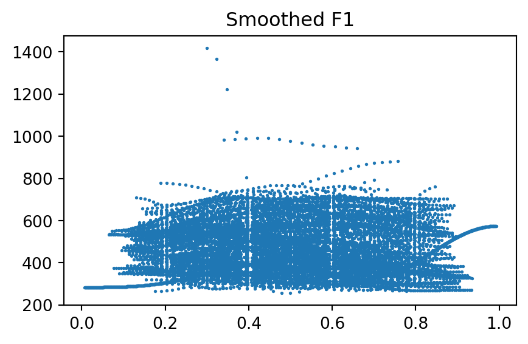
Code
plt.scatter(
first_pass["prop_time"],
first_pass["F2_s"],
s = 1
)
plt.title("Smoothed F2")
plt.show()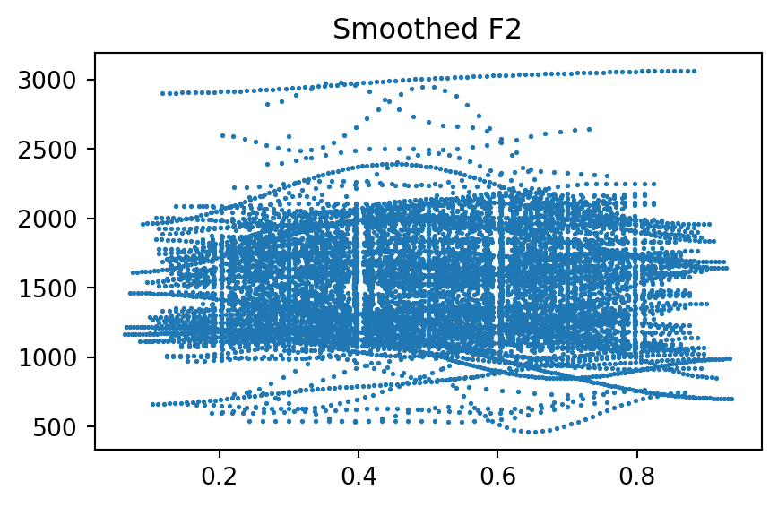
And in F1xF2 space
Code
plt.scatter(
-first_pass["F2_s"],
-first_pass["F1_s"],
s = 1
)
plt.title("F1xF2 space")
plt.show()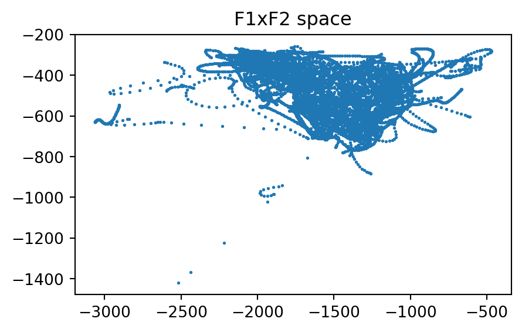
I’ll grab the outliers based on a visual inspection. (F1 > 800 or F2 > 2500).
Code
outliers = (
first_pass
.filter(
(
(pl.col("label").str.contains("1"))
&
(
(pl.col("F1") > 900 ) |
(pl.col("F2") > 2500)
)
)
)
.group_by(["id", "label"])
.count()
)
outliers/tmp/ipykernel_2086/1712949402.py:14: DeprecationWarning: `count` is deprecated. It has been renamed to `len`.
.count()
shape: (5, 3)
| id | label | count |
|---|---|---|
| str | str | u32 |
| "0-0-44-0" | "AA1" | 18 |
| "0-0-161-0" | "AO1" | 3 |
| "0-0-371-0" | "AO1" | 19 |
| "0-0-314-1" | "AO1" | 83 |
| "0-0-73-1" | "OW1" | 14 |
And I’ll look at their spectrograms
Code
outlier_tracks = [
track
for track in candidates
if track.id in outliers["id"]
]
for track in outlier_tracks:
track.winner.spectrogram(figsize = (3,2))
plt.title(track.label +" " +track.id)
plt.show()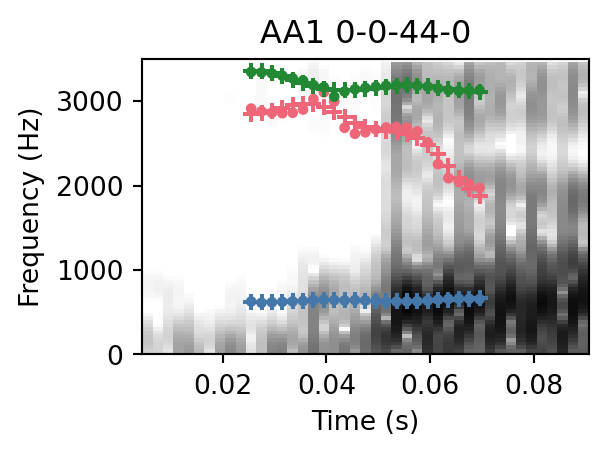
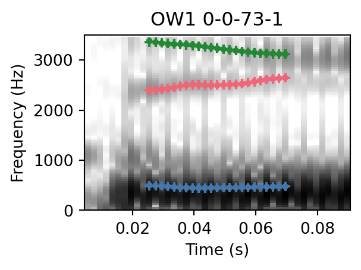
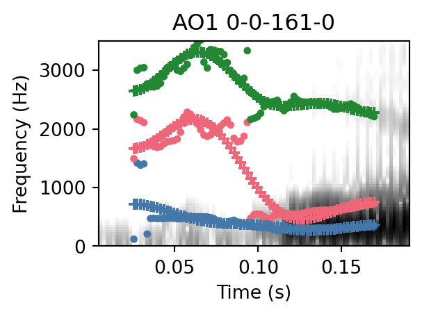
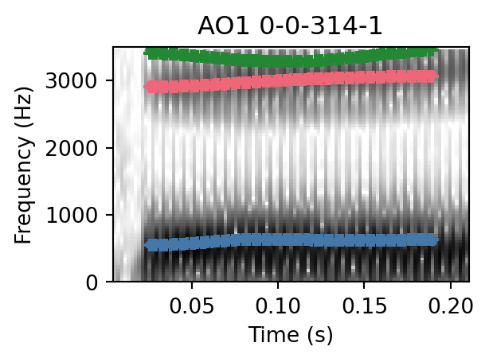
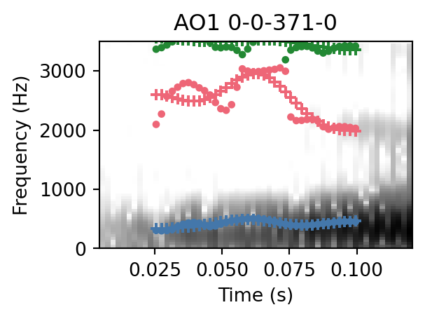
Some vowels may be lost causes, looking like instances of alignment errors. But the others may be salvageable, and seem to be due to their F1 and F2 being very close.
Using the new-fave classes
The new-fave classes create vowel measurements, and vowel classes based on the labels in the candidate tracks. The final product will have a fave-recode step in here, but meanwhile I’ll adjust the labels manually.
for track in candidates:
# schwa
if track.label == "AH0":
track.label = "@"
# stress folding
else:
track.label = re.sub(r"\d", "", track.label)These two steps are necessary to relate each vowel measurement to its vowel class. More on param_optim later.
v_meases = [VowelMeasurement(track) for track in candidates]
v_classes = VowelClassCollection(v_meases, param_optim=5)The first vowel measurement is an AY, and the “winning” formant tracks in its vowel class are available.
print(v_meases[0].label)
v_meases[0].vowel_class.winnersAY[A formant track object. (3, 28),
A formant track object. (3, 23),
A formant track object. (3, 38),
A formant track object. (3, 33),
A formant track object. (3, 48),
A formant track object. (3, 68),
A formant track object. (3, 63),
A formant track object. (3, 53),
A formant track object. (3, 153),
A formant track object. (3, 18),
A formant track object. (3, 23),
A formant track object. (3, 58),
A formant track object. (3, 63),
A formant track object. (3, 38),
A formant track object. (3, 53),
A formant track object. (3, 68),
A formant track object. (3, 28),
A formant track object. (3, 78),
A formant track object. (3, 33),
A formant track object. (3, 18)]Optimizing dimensions
There are three key dimensions that I can see trying to optimize across.
- The shape and value of the formant tracks.
- The typical maximum-formant for the vowel class.
- The smoothing error of each candidate track within a vowel measurement.
The shape and value of the formant tracks
The shape and value of a single formant track is captured by the discrete cosine coefficients returned by fasttrackpy.
v_meases[0].winner.parametersarray([[ 323.29098563, 33.32668842, 2.29322637, 3.45116252,
-5.1247527 ],
[1171.35138979, -152.00544195, -4.89605417, -14.45088038,
2.18922811],
[1724.06247712, 80.36224713, 47.02261838, 3.63851245,
-9.08465936]])We could use the distribution of values across these parameters for FAVE-like optimization, e.g., to get the mahalanobis distance of each possible track’s DCT coefficients from the vowel class average. The question is, how many of the DCT coefficients should we use?
In some sense, the first DCT coefficient is the most important, placing F1, F2 and F3 in a general position in formant space.
Code
def plot_params(
vm: VowelMeasurement,
up_to = 5
):
params = vm.vowel_class.winner_params.mean(axis = 2).T
params[:,up_to:] = 0
time = vm.winner.time_domain
N = vm.winner.time_domain.size
basis = np.array (
[(np.cos(np.pi * (np.arange(N)/N) * k))
for k in range(5)]
)
fit = params @ basis
plt.plot(
time,
fit.T
)
plt.title(f"{up_to} params")
plt.show()plot_params(v_meases[0], up_to = 1)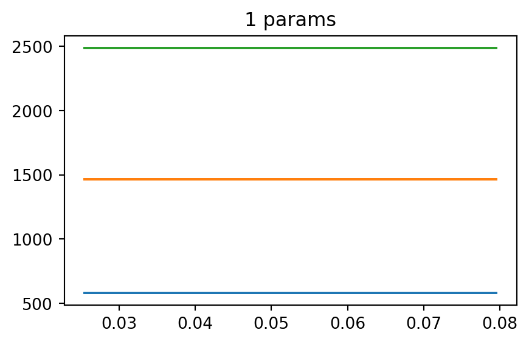
However, we probably also want the typical formant shape and value to also incorporate some dynamics.
plot_params(v_meases[0], up_to = 2)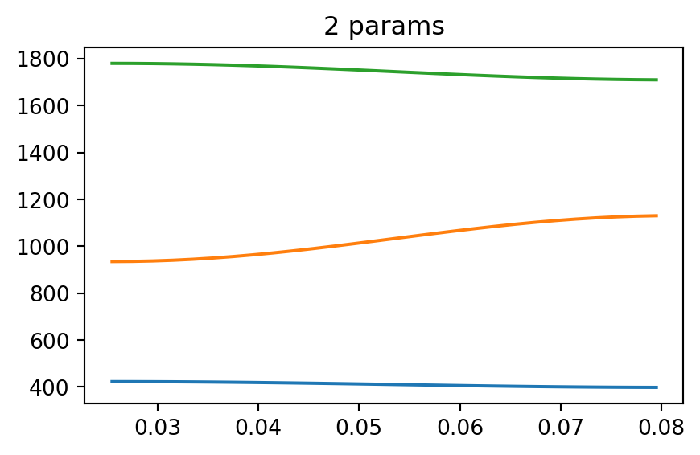
plot_params(v_meases[0], up_to = 3)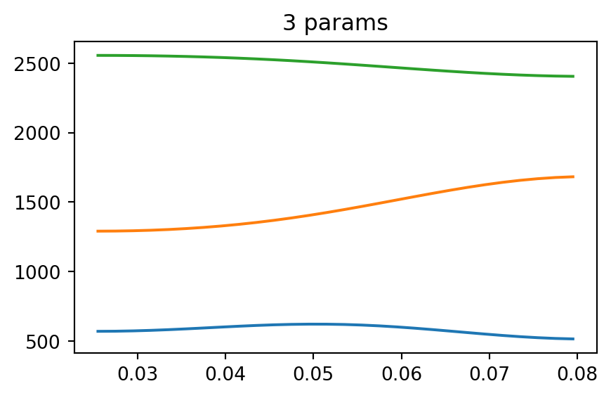
While increasing the number of parameters is important for smoothing the formant tracks, in terms of describing, the typical trajectory, I have some concerns that it could wind up penalizing some candidate tracks for not being wiggly enough if their 4th or 5th parameters are too distant from the average.
Implementation
The way it’s currently implemented, I have to specify how many formant tracks I’m optimizing over when I create the VowelClassCollection object.
v_classes = VowelClassCollection(v_meases, param_optim=3)I can then get the mahalanobis distance from each candidate to the vowel class.
plt.scatter(
v_meases[0].cand_max_formants[0],
v_meases[0].cand_mahals
)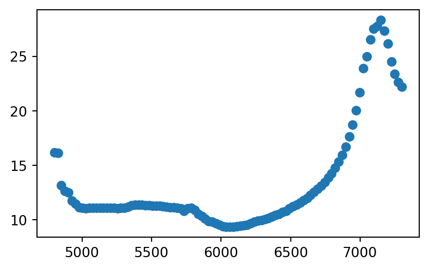
I’ve also implemented conversion of the mahalanobis distance to log-probabilities based on the chi-squared distribution.
plt.scatter(
v_meases[0].cand_max_formants[0],
v_meases[0].cand_mahal_log_prob
)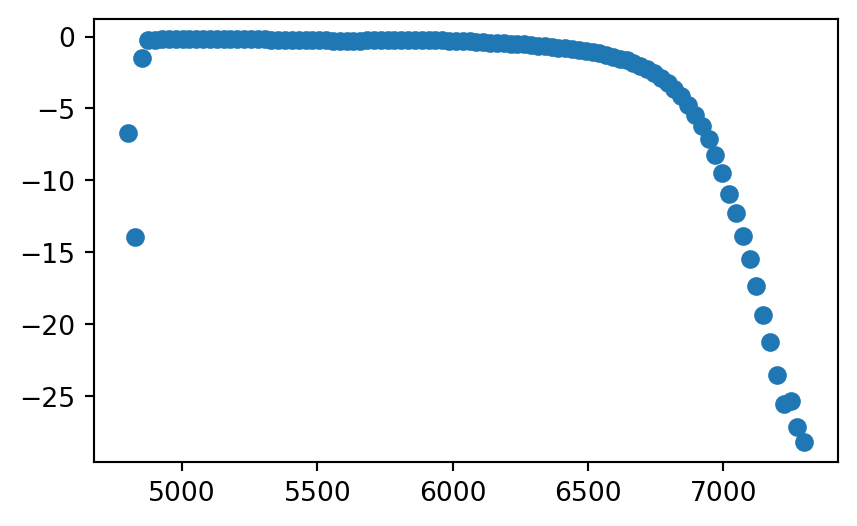
Typical Max Formants
Each vowel class will also have a typical max formant distribution.
plt.hist(
v_classes["AY"].winners_maximum_formant[0],
bins = 10
)
plt.show()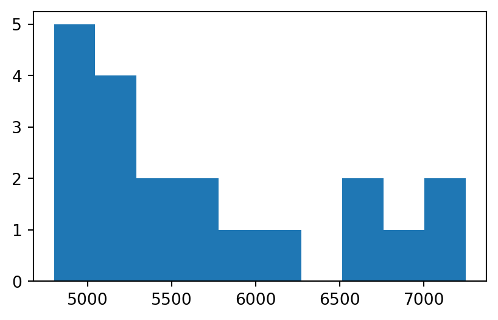
We can also get a 1-dimensional mahalanobis distance from each candidate track to the typical maximum formant.
plt.scatter(
v_meases[0].cand_max_formants[0],
v_meases[0].max_formant_mahal
)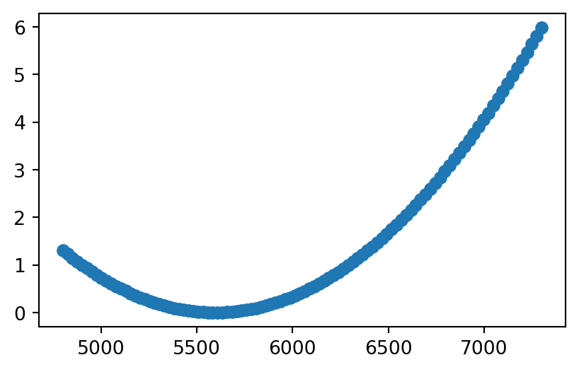
This also has a log-probabilty definition.
plt.scatter(
v_meases[0].cand_max_formants[0],
v_meases[0].max_formant_log_prob
)
Interim synthesis
With these two log-probabilities, one way we could decide to choose a new optimal winner would be to take the argmax of the sum.
plt.scatter(
v_meases[0].cand_max_formants[0],
v_meases[0].cand_mahal_log_prob +
v_meases[0].max_formant_log_prob
)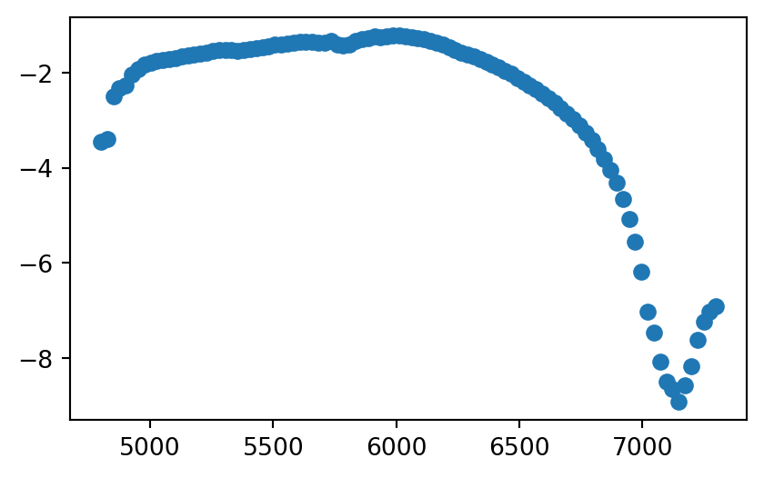
(
v_meases[0].cand_mahal_log_prob +
v_meases[0].max_formant_log_prob
).argmax()32But this doesn’t take into account the smoother error.
Smoother error
Each candidate formant track also has a mean squared error value associated.
plt.scatter(
v_meases[0].cand_max_formants[0],
v_meases[0].cand_errors
)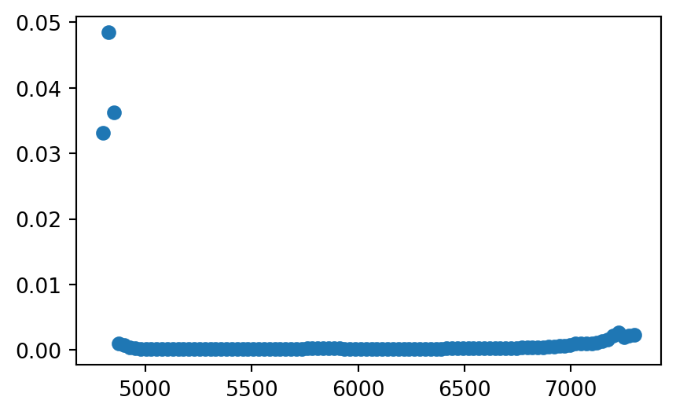
I wasn’t sure how to associate these error terms to a probability distribution in order to convert them to a log-probability, so instead I calculated an empirical density function across the errors, and got the log probability from that.
plt.scatter(
v_meases[0].cand_max_formants[0],
v_meases[0].error_log_prob
)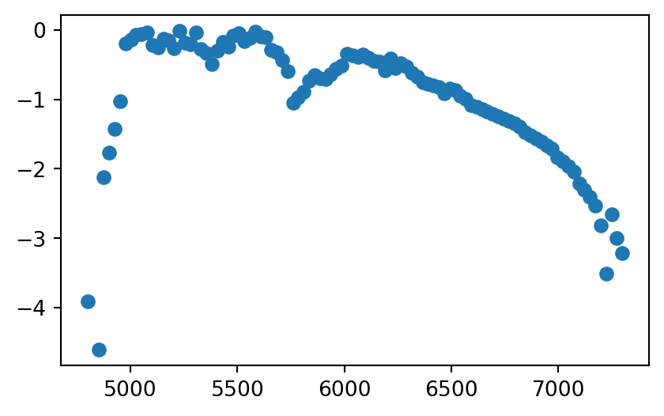
Final Joint Probability
plt.scatter(
v_meases[0].cand_max_formants[0],
v_meases[0].cand_mahal_log_prob +
v_meases[0].max_formant_log_prob +
v_meases[0].error_log_prob
)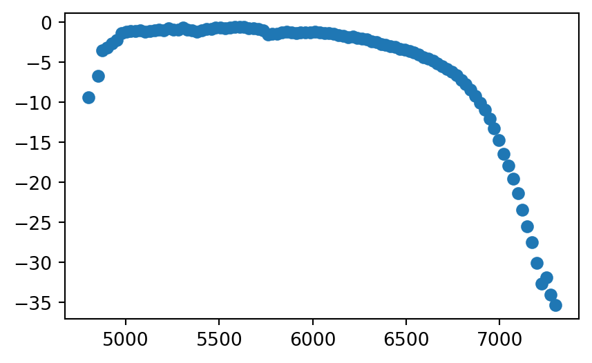
new_winner = (
v_meases[0].cand_mahal_log_prob +
v_meases[0].max_formant_log_prob +
v_meases[0].error_log_prob
).argmax()orig_winner = v_meases[0].track.winner_idxv_meases[0].cand_max_formants[0][orig_winner]5507.070707070707v_meases[0].cand_max_formants[0][new_winner]5582.828282828283This difference in maximum formant doesn’t ahve a huge effect on the resulting data.
orig_df = v_meases[0].candidates[orig_winner].to_df()
new_df = v_meases[0].candidates[orig_winner].to_df()plt.scatter(
-orig_df["F2"],
-orig_df["F1"],
color = "red",
label = "original",
alpha = 0.3
)
plt.scatter(
-new_df["F2"],
-new_df["F1"],
color = "blue",
label = "new",
alpha = 0.3
)
plt.legend()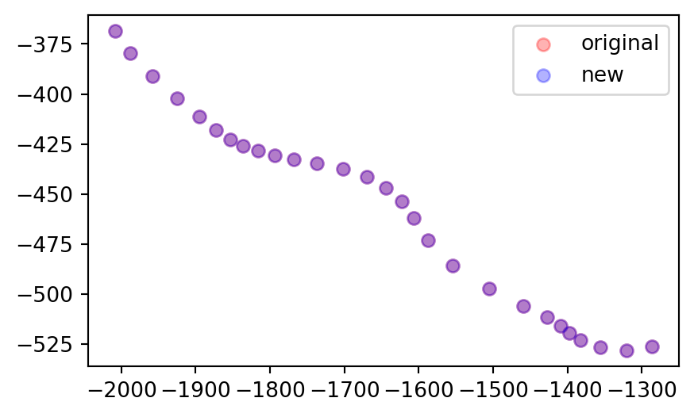
Optimizing
Open questions are:
- Are all three metrics important, or functional, for the kind of error reduction we want?
- How many optimizing steps should we take?
- How many max-formant increments should we use?
Here, I’ll optimize for 10 steps
formant_optim = np.array([vm.winner.maximum_formant for vm in v_meases])
for i in range(10):
optimize_vowel_measures(v_meases)
new_max = np.array([vm.winner.maximum_formant for vm in v_meases])
formant_optim = np.vstack([formant_optim, new_max]) 0%| | 0/273 [00:00<?, ?it/s] 0%| | 1/273 [00:05<24:51, 5.48s/it] 1%| | 2/273 [00:05<10:34, 2.34s/it] 1%| | 3/273 [00:05<06:01, 1.34s/it] 1%|▏ | 4/273 [00:05<03:52, 1.16it/s] 2%|▏ | 5/273 [00:06<02:42, 1.65it/s] 2%|▏ | 6/273 [00:06<02:00, 2.22it/s] 3%|▎ | 7/273 [00:06<01:33, 2.84it/s] 3%|▎ | 8/273 [00:06<01:12, 3.63it/s] 3%|▎ | 9/273 [00:06<01:01, 4.31it/s] 4%|▎ | 10/273 [00:06<00:53, 4.89it/s] 4%|▍ | 11/273 [00:06<00:48, 5.38it/s] 4%|▍ | 12/273 [00:07<00:45, 5.74it/s] 5%|▍ | 13/273 [00:07<00:43, 6.03it/s] 5%|▌ | 14/273 [00:07<00:41, 6.26it/s] 5%|▌ | 15/273 [00:07<00:40, 6.41it/s] 6%|▌ | 16/273 [00:07<00:39, 6.55it/s] 6%|▌ | 17/273 [00:07<00:39, 6.49it/s] 7%|▋ | 18/273 [00:07<00:38, 6.60it/s] 7%|▋ | 19/273 [00:08<00:37, 6.70it/s] 7%|▋ | 20/273 [00:08<00:37, 6.73it/s] 8%|▊ | 21/273 [00:08<00:36, 6.82it/s] 8%|▊ | 22/273 [00:08<00:36, 6.87it/s] 8%|▊ | 23/273 [00:08<00:36, 6.86it/s] 9%|▉ | 24/273 [00:08<00:35, 6.98it/s] 9%|▉ | 25/273 [00:08<00:35, 6.91it/s] 10%|▉ | 26/273 [00:09<00:36, 6.78it/s] 10%|▉ | 27/273 [00:09<00:36, 6.83it/s] 10%|█ | 28/273 [00:09<00:35, 6.85it/s] 11%|█ | 29/273 [00:09<00:33, 7.18it/s] 11%|█ | 30/273 [00:09<00:34, 7.00it/s] 11%|█▏ | 31/273 [00:09<00:34, 6.94it/s] 12%|█▏ | 32/273 [00:09<00:34, 7.06it/s] 12%|█▏ | 33/273 [00:10<00:34, 6.94it/s] 12%|█▏ | 34/273 [00:10<00:34, 6.95it/s] 13%|█▎ | 35/273 [00:10<00:34, 6.99it/s] 13%|█▎ | 36/273 [00:10<00:33, 7.01it/s] 14%|█▎ | 37/273 [00:10<00:34, 6.91it/s] 14%|█▍ | 38/273 [00:10<00:33, 6.96it/s] 14%|█▍ | 39/273 [00:10<00:33, 6.91it/s] 15%|█▍ | 40/273 [00:11<00:33, 7.00it/s] 15%|█▌ | 41/273 [00:11<00:34, 6.82it/s] 15%|█▌ | 42/273 [00:11<00:33, 6.82it/s] 16%|█▌ | 43/273 [00:11<00:33, 6.86it/s] 16%|█▌ | 44/273 [00:11<00:31, 7.35it/s] 16%|█▋ | 45/273 [00:11<00:32, 6.96it/s] 17%|█▋ | 46/273 [00:11<00:31, 7.10it/s] 17%|█▋ | 47/273 [00:12<00:33, 6.79it/s] 18%|█▊ | 48/273 [00:12<00:32, 6.82it/s] 18%|█▊ | 49/273 [00:12<00:33, 6.75it/s] 18%|█▊ | 50/273 [00:12<00:32, 6.89it/s] 19%|█▊ | 51/273 [00:12<00:31, 7.05it/s] 19%|█▉ | 52/273 [00:12<00:31, 7.00it/s] 19%|█▉ | 53/273 [00:12<00:29, 7.46it/s] 20%|█▉ | 54/273 [00:13<00:31, 7.03it/s] 20%|██ | 55/273 [00:13<00:30, 7.16it/s] 21%|██ | 56/273 [00:13<00:31, 6.89it/s] 21%|██ | 57/273 [00:13<00:31, 6.91it/s] 21%|██ | 58/273 [00:13<00:31, 6.92it/s] 22%|██▏ | 59/273 [00:13<00:31, 6.79it/s] 22%|██▏ | 60/273 [00:13<00:31, 6.82it/s] 22%|██▏ | 61/273 [00:14<00:30, 6.96it/s] 23%|██▎ | 62/273 [00:14<00:29, 7.08it/s] 23%|██▎ | 63/273 [00:14<00:30, 6.95it/s] 23%|██▎ | 64/273 [00:14<00:30, 6.91it/s] 24%|██▍ | 65/273 [00:14<00:29, 7.05it/s] 24%|██▍ | 66/273 [00:14<00:29, 6.96it/s] 25%|██▍ | 67/273 [00:14<00:29, 6.90it/s] 25%|██▍ | 68/273 [00:15<00:29, 7.03it/s] 25%|██▌ | 69/273 [00:15<00:29, 6.94it/s] 26%|██▌ | 70/273 [00:15<00:29, 6.90it/s] 26%|██▌ | 71/273 [00:15<00:29, 6.85it/s] 26%|██▋ | 72/273 [00:15<00:30, 6.68it/s] 27%|██▋ | 73/273 [00:15<00:30, 6.62it/s] 27%|██▋ | 74/273 [00:16<00:29, 6.76it/s] 27%|██▋ | 75/273 [00:16<00:28, 6.86it/s] 28%|██▊ | 76/273 [00:16<00:28, 6.95it/s] 28%|██▊ | 77/273 [00:16<00:27, 7.01it/s] 29%|██▊ | 78/273 [00:16<00:27, 7.04it/s] 29%|██▉ | 79/273 [00:16<00:27, 7.04it/s] 29%|██▉ | 80/273 [00:16<00:27, 6.92it/s] 30%|██▉ | 81/273 [00:17<00:27, 6.91it/s] 30%|███ | 82/273 [00:17<00:26, 7.27it/s] 30%|███ | 83/273 [00:17<00:26, 7.26it/s] 31%|███ | 84/273 [00:17<00:25, 7.30it/s] 31%|███ | 85/273 [00:17<00:24, 7.54it/s] 32%|███▏ | 86/273 [00:17<00:26, 7.04it/s] 32%|███▏ | 87/273 [00:17<00:26, 6.96it/s] 32%|███▏ | 88/273 [00:17<00:27, 6.78it/s] 33%|███▎ | 89/273 [00:18<00:27, 6.75it/s] 33%|███▎ | 90/273 [00:18<00:26, 6.81it/s] 33%|███▎ | 91/273 [00:18<00:25, 7.00it/s] 34%|███▎ | 92/273 [00:18<00:26, 6.92it/s] 34%|███▍ | 93/273 [00:18<00:25, 7.04it/s] 34%|███▍ | 94/273 [00:18<00:25, 6.95it/s] 35%|███▍ | 95/273 [00:18<00:24, 7.15it/s] 35%|███▌ | 96/273 [00:19<00:23, 7.48it/s] 36%|███▌ | 97/273 [00:19<00:24, 7.27it/s] 36%|███▌ | 98/273 [00:19<00:23, 7.31it/s] 36%|███▋ | 99/273 [00:19<00:24, 7.24it/s] 37%|███▋ | 100/273 [00:19<00:23, 7.23it/s] 37%|███▋ | 101/273 [00:19<00:23, 7.33it/s] 37%|███▋ | 102/273 [00:19<00:23, 7.19it/s] 38%|███▊ | 103/273 [00:20<00:24, 7.08it/s] 38%|███▊ | 104/273 [00:20<00:23, 7.08it/s] 38%|███▊ | 105/273 [00:20<00:23, 7.02it/s] 39%|███▉ | 106/273 [00:20<00:23, 7.06it/s] 39%|███▉ | 107/273 [00:20<00:23, 7.18it/s] 40%|███▉ | 108/273 [00:20<00:23, 7.10it/s] 40%|███▉ | 109/273 [00:20<00:23, 7.06it/s] 40%|████ | 110/273 [00:21<00:23, 6.99it/s] 41%|████ | 111/273 [00:21<00:22, 7.10it/s] 41%|████ | 112/273 [00:21<00:23, 7.00it/s] 41%|████▏ | 113/273 [00:21<00:23, 6.86it/s] 42%|████▏ | 114/273 [00:21<00:23, 6.81it/s] 42%|████▏ | 115/273 [00:21<00:23, 6.85it/s] 42%|████▏ | 116/273 [00:21<00:23, 6.78it/s] 43%|████▎ | 117/273 [00:22<00:23, 6.78it/s] 43%|████▎ | 118/273 [00:22<00:22, 6.86it/s] 44%|████▎ | 119/273 [00:22<00:22, 6.93it/s] 44%|████▍ | 120/273 [00:22<00:22, 6.81it/s] 44%|████▍ | 121/273 [00:22<00:22, 6.79it/s] 45%|████▍ | 122/273 [00:22<00:21, 6.90it/s] 45%|████▌ | 123/273 [00:22<00:21, 6.92it/s] 45%|████▌ | 124/273 [00:23<00:21, 6.91it/s] 46%|████▌ | 125/273 [00:23<00:20, 7.06it/s] 46%|████▌ | 126/273 [00:23<00:20, 7.07it/s] 47%|████▋ | 127/273 [00:23<00:20, 7.02it/s] 47%|████▋ | 128/273 [00:23<00:20, 7.14it/s] 47%|████▋ | 129/273 [00:23<00:20, 7.08it/s] 48%|████▊ | 130/273 [00:23<00:20, 6.89it/s] 48%|████▊ | 131/273 [00:24<00:19, 7.15it/s] 48%|████▊ | 132/273 [00:24<00:20, 6.98it/s] 49%|████▊ | 133/273 [00:24<00:20, 6.99it/s] 49%|████▉ | 134/273 [00:24<00:19, 7.26it/s] 49%|████▉ | 135/273 [00:24<00:19, 7.21it/s] 50%|████▉ | 136/273 [00:24<00:19, 7.12it/s] 50%|█████ | 137/273 [00:24<00:18, 7.25it/s] 51%|█████ | 138/273 [00:25<00:18, 7.32it/s] 51%|█████ | 139/273 [00:25<00:19, 6.93it/s] 51%|█████▏ | 140/273 [00:25<00:19, 6.91it/s] 52%|█████▏ | 141/273 [00:25<00:18, 7.03it/s] 52%|█████▏ | 142/273 [00:25<00:18, 6.95it/s] 52%|█████▏ | 143/273 [00:25<00:18, 7.13it/s] 53%|█████▎ | 144/273 [00:25<00:18, 7.07it/s] 53%|█████▎ | 145/273 [00:26<00:18, 7.10it/s] 53%|█████▎ | 146/273 [00:26<00:17, 7.17it/s] 54%|█████▍ | 147/273 [00:26<00:17, 7.03it/s] 54%|█████▍ | 148/273 [00:26<00:17, 7.08it/s] 55%|█████▍ | 149/273 [00:26<00:17, 7.20it/s] 55%|█████▍ | 150/273 [00:26<00:17, 7.00it/s] 55%|█████▌ | 151/273 [00:26<00:17, 6.98it/s] 56%|█████▌ | 152/273 [00:27<00:17, 6.95it/s] 56%|█████▌ | 153/273 [00:27<00:17, 6.96it/s] 56%|█████▋ | 154/273 [00:27<00:17, 6.90it/s] 57%|█████▋ | 155/273 [00:27<00:17, 6.77it/s] 57%|█████▋ | 156/273 [00:27<00:17, 6.76it/s] 58%|█████▊ | 157/273 [00:27<00:17, 6.79it/s] 58%|█████▊ | 158/273 [00:27<00:17, 6.72it/s] 58%|█████▊ | 159/273 [00:28<00:16, 6.77it/s] 59%|█████▊ | 160/273 [00:28<00:16, 6.94it/s] 59%|█████▉ | 161/273 [00:28<00:16, 6.93it/s] 59%|█████▉ | 162/273 [00:28<00:16, 6.88it/s] 60%|█████▉ | 163/273 [00:28<00:15, 6.89it/s] 60%|██████ | 164/273 [00:28<00:15, 6.87it/s] 60%|██████ | 165/273 [00:28<00:15, 6.88it/s] 61%|██████ | 166/273 [00:29<00:15, 6.95it/s] 61%|██████ | 167/273 [00:29<00:15, 6.78it/s] 62%|██████▏ | 168/273 [00:29<00:15, 6.78it/s] 62%|██████▏ | 169/273 [00:29<00:15, 6.70it/s] 62%|██████▏ | 170/273 [00:29<00:15, 6.74it/s] 63%|██████▎ | 171/273 [00:29<00:15, 6.77it/s] 63%|██████▎ | 172/273 [00:30<00:14, 6.82it/s] 63%|██████▎ | 173/273 [00:30<00:14, 6.83it/s] 64%|██████▎ | 174/273 [00:30<00:14, 6.97it/s] 64%|██████▍ | 175/273 [00:30<00:14, 6.96it/s] 64%|██████▍ | 176/273 [00:30<00:13, 7.08it/s] 65%|██████▍ | 177/273 [00:30<00:13, 7.02it/s] 65%|██████▌ | 178/273 [00:30<00:13, 7.01it/s] 66%|██████▌ | 179/273 [00:31<00:13, 6.97it/s] 66%|██████▌ | 180/273 [00:31<00:12, 7.50it/s] 66%|██████▋ | 181/273 [00:31<00:12, 7.32it/s] 67%|██████▋ | 182/273 [00:31<00:12, 7.18it/s] 67%|██████▋ | 183/273 [00:31<00:12, 7.28it/s] 67%|██████▋ | 184/273 [00:31<00:12, 7.12it/s] 68%|██████▊ | 185/273 [00:31<00:12, 6.95it/s] 68%|██████▊ | 186/273 [00:31<00:11, 7.35it/s] 68%|██████▊ | 187/273 [00:32<00:11, 7.21it/s] 69%|██████▉ | 188/273 [00:32<00:11, 7.18it/s] 69%|██████▉ | 189/273 [00:32<00:11, 7.11it/s] 70%|██████▉ | 190/273 [00:32<00:11, 6.96it/s] 70%|██████▉ | 191/273 [00:32<00:11, 7.31it/s] 70%|███████ | 192/273 [00:32<00:11, 7.18it/s] 71%|███████ | 193/273 [00:32<00:11, 7.26it/s] 71%|███████ | 194/273 [00:33<00:11, 7.16it/s] 71%|███████▏ | 195/273 [00:33<00:11, 7.00it/s] 72%|███████▏ | 196/273 [00:33<00:11, 6.97it/s] 72%|███████▏ | 197/273 [00:33<00:10, 6.93it/s] 73%|███████▎ | 198/273 [00:33<00:10, 7.16it/s] 73%|███████▎ | 199/273 [00:33<00:10, 6.95it/s] 73%|███████▎ | 200/273 [00:33<00:10, 6.91it/s] 74%|███████▎ | 201/273 [00:34<00:10, 7.09it/s] 74%|███████▍ | 202/273 [00:34<00:09, 7.17it/s] 74%|███████▍ | 203/273 [00:34<00:09, 7.10it/s] 75%|███████▍ | 204/273 [00:34<00:09, 6.97it/s] 75%|███████▌ | 205/273 [00:34<00:09, 7.37it/s] 75%|███████▌ | 206/273 [00:34<00:09, 7.33it/s] 76%|███████▌ | 207/273 [00:34<00:09, 7.18it/s] 76%|███████▌ | 208/273 [00:35<00:09, 7.12it/s] 77%|███████▋ | 209/273 [00:35<00:08, 7.56it/s] 77%|███████▋ | 210/273 [00:35<00:08, 7.29it/s] 77%|███████▋ | 211/273 [00:35<00:08, 7.32it/s] 78%|███████▊ | 212/273 [00:35<00:08, 7.17it/s] 78%|███████▊ | 213/273 [00:35<00:08, 7.15it/s] 78%|███████▊ | 214/273 [00:35<00:08, 6.98it/s] 79%|███████▉ | 215/273 [00:36<00:08, 6.88it/s] 79%|███████▉ | 216/273 [00:36<00:08, 6.88it/s] 79%|███████▉ | 217/273 [00:36<00:07, 7.28it/s] 80%|███████▉ | 218/273 [00:36<00:07, 7.18it/s] 80%|████████ | 219/273 [00:36<00:07, 7.02it/s] 81%|████████ | 220/273 [00:36<00:07, 6.98it/s] 81%|████████ | 221/273 [00:36<00:07, 6.96it/s] 81%|████████▏ | 222/273 [00:37<00:07, 6.96it/s] 82%|████████▏ | 223/273 [00:37<00:07, 6.97it/s] 82%|████████▏ | 224/273 [00:37<00:07, 6.88it/s] 82%|████████▏ | 225/273 [00:37<00:07, 6.85it/s] 83%|████████▎ | 226/273 [00:37<00:06, 6.85it/s] 83%|████████▎ | 227/273 [00:37<00:06, 7.25it/s] 84%|████████▎ | 228/273 [00:37<00:06, 6.99it/s] 84%|████████▍ | 229/273 [00:38<00:06, 7.23it/s] 84%|████████▍ | 230/273 [00:38<00:06, 7.15it/s] 85%|████████▍ | 231/273 [00:38<00:06, 7.00it/s] 85%|████████▍ | 232/273 [00:38<00:05, 7.26it/s] 85%|████████▌ | 233/273 [00:38<00:05, 7.30it/s] 86%|████████▌ | 234/273 [00:38<00:05, 7.54it/s] 86%|████████▌ | 235/273 [00:38<00:05, 7.25it/s] 86%|████████▋ | 236/273 [00:38<00:05, 7.18it/s] 87%|████████▋ | 237/273 [00:39<00:05, 6.95it/s] 87%|████████▋ | 238/273 [00:39<00:04, 7.10it/s] 88%|████████▊ | 239/273 [00:39<00:04, 7.55it/s] 88%|████████▊ | 240/273 [00:39<00:04, 7.34it/s] 88%|████████▊ | 241/273 [00:39<00:04, 7.14it/s] 89%|████████▊ | 242/273 [00:39<00:04, 7.00it/s] 89%|████████▉ | 243/273 [00:39<00:04, 6.81it/s] 89%|████████▉ | 244/273 [00:40<00:04, 7.19it/s] 90%|████████▉ | 245/273 [00:40<00:03, 7.07it/s] 90%|█████████ | 246/273 [00:40<00:03, 6.99it/s] 90%|█████████ | 247/273 [00:40<00:03, 6.93it/s] 91%|█████████ | 248/273 [00:40<00:03, 6.93it/s] 91%|█████████ | 249/273 [00:40<00:03, 7.01it/s] 92%|█████████▏| 250/273 [00:40<00:03, 7.00it/s] 92%|█████████▏| 251/273 [00:41<00:03, 7.11it/s] 92%|█████████▏| 252/273 [00:41<00:02, 7.09it/s] 93%|█████████▎| 253/273 [00:41<00:02, 7.17it/s] 93%|█████████▎| 254/273 [00:41<00:02, 7.11it/s] 93%|█████████▎| 255/273 [00:41<00:02, 6.96it/s] 94%|█████████▍| 256/273 [00:41<00:02, 7.07it/s] 94%|█████████▍| 257/273 [00:41<00:02, 6.74it/s] 95%|█████████▍| 258/273 [00:42<00:02, 6.92it/s] 95%|█████████▍| 259/273 [00:42<00:01, 7.01it/s] 95%|█████████▌| 260/273 [00:42<00:01, 6.92it/s] 96%|█████████▌| 261/273 [00:42<00:01, 6.87it/s] 96%|█████████▌| 262/273 [00:42<00:01, 6.79it/s] 96%|█████████▋| 263/273 [00:42<00:01, 6.82it/s] 97%|█████████▋| 264/273 [00:43<00:01, 6.72it/s] 97%|█████████▋| 265/273 [00:43<00:01, 6.79it/s] 97%|█████████▋| 266/273 [00:43<00:01, 6.74it/s] 98%|█████████▊| 267/273 [00:43<00:00, 6.80it/s] 98%|█████████▊| 268/273 [00:43<00:00, 6.96it/s] 99%|█████████▊| 269/273 [00:43<00:00, 6.97it/s] 99%|█████████▉| 270/273 [00:43<00:00, 6.80it/s] 99%|█████████▉| 271/273 [00:44<00:00, 6.64it/s]100%|█████████▉| 272/273 [00:44<00:00, 6.75it/s]100%|██████████| 273/273 [00:44<00:00, 6.68it/s]100%|██████████| 273/273 [00:44<00:00, 6.16it/s]
0%| | 0/273 [00:00<?, ?it/s] 0%| | 1/273 [00:05<23:49, 5.26s/it] 1%| | 2/273 [00:05<10:09, 2.25s/it] 1%| | 3/273 [00:05<05:45, 1.28s/it] 1%|▏ | 4/273 [00:05<03:43, 1.20it/s] 2%|▏ | 5/273 [00:05<02:34, 1.74it/s] 2%|▏ | 6/273 [00:05<01:54, 2.33it/s] 3%|▎ | 7/273 [00:06<01:28, 2.99it/s] 3%|▎ | 8/273 [00:06<01:12, 3.65it/s] 3%|▎ | 9/273 [00:06<01:02, 4.24it/s] 4%|▎ | 10/273 [00:06<00:54, 4.82it/s] 4%|▍ | 11/273 [00:06<00:49, 5.25it/s] 4%|▍ | 12/273 [00:06<00:47, 5.51it/s] 5%|▍ | 13/273 [00:06<00:44, 5.79it/s] 5%|▌ | 14/273 [00:07<00:42, 6.10it/s] 5%|▌ | 15/273 [00:07<00:40, 6.38it/s] 6%|▌ | 16/273 [00:07<00:38, 6.68it/s] 6%|▌ | 17/273 [00:07<00:37, 6.91it/s] 7%|▋ | 18/273 [00:07<00:36, 6.92it/s] 7%|▋ | 19/273 [00:07<00:36, 6.97it/s] 7%|▋ | 20/273 [00:07<00:36, 6.94it/s] 8%|▊ | 21/273 [00:08<00:36, 6.94it/s] 8%|▊ | 22/273 [00:08<00:36, 6.94it/s] 8%|▊ | 23/273 [00:08<00:36, 6.92it/s] 9%|▉ | 24/273 [00:08<00:36, 6.88it/s] 9%|▉ | 25/273 [00:08<00:35, 7.03it/s] 10%|▉ | 26/273 [00:08<00:35, 7.01it/s] 10%|▉ | 27/273 [00:08<00:35, 6.95it/s] 10%|█ | 28/273 [00:09<00:34, 7.10it/s] 11%|█ | 29/273 [00:09<00:33, 7.37it/s] 11%|█ | 30/273 [00:09<00:33, 7.17it/s] 11%|█▏ | 31/273 [00:09<00:32, 7.45it/s] 12%|█▏ | 32/273 [00:09<00:31, 7.76it/s] 12%|█▏ | 33/273 [00:09<00:30, 7.90it/s] 12%|█▏ | 34/273 [00:09<00:31, 7.61it/s] 13%|█▎ | 35/273 [00:10<00:32, 7.30it/s] 13%|█▎ | 36/273 [00:10<00:34, 6.93it/s] 14%|█▎ | 37/273 [00:10<00:34, 6.89it/s] 14%|█▍ | 38/273 [00:10<00:34, 6.89it/s] 14%|█▍ | 39/273 [00:10<00:33, 7.08it/s] 15%|█▍ | 40/273 [00:10<00:33, 7.01it/s] 15%|█▌ | 41/273 [00:10<00:33, 6.98it/s] 15%|█▌ | 42/273 [00:11<00:33, 6.94it/s] 16%|█▌ | 43/273 [00:11<00:33, 6.90it/s] 16%|█▌ | 44/273 [00:11<00:33, 6.86it/s] 16%|█▋ | 45/273 [00:11<00:33, 6.87it/s] 17%|█▋ | 46/273 [00:11<00:32, 7.02it/s] 17%|█▋ | 47/273 [00:11<00:31, 7.08it/s] 18%|█▊ | 48/273 [00:11<00:31, 7.04it/s] 18%|█▊ | 49/273 [00:12<00:32, 6.89it/s] 18%|█▊ | 50/273 [00:12<00:32, 6.93it/s] 19%|█▊ | 51/273 [00:12<00:31, 7.03it/s] 19%|█▉ | 52/273 [00:12<00:31, 6.96it/s] 19%|█▉ | 53/273 [00:12<00:31, 6.95it/s] 20%|█▉ | 54/273 [00:12<00:31, 6.94it/s] 20%|██ | 55/273 [00:12<00:31, 6.94it/s] 21%|██ | 56/273 [00:13<00:30, 7.11it/s] 21%|██ | 57/273 [00:13<00:30, 7.06it/s] 21%|██ | 58/273 [00:13<00:31, 6.90it/s] 22%|██▏ | 59/273 [00:13<00:31, 6.88it/s] 22%|██▏ | 60/273 [00:13<00:30, 6.94it/s] 23%|██▎ | 62/273 [00:13<00:26, 7.97it/s] 23%|██▎ | 63/273 [00:13<00:27, 7.75it/s] 23%|██▎ | 64/273 [00:14<00:27, 7.59it/s] 24%|██▍ | 65/273 [00:14<00:26, 7.95it/s] 24%|██▍ | 66/273 [00:14<00:27, 7.57it/s] 25%|██▍ | 68/273 [00:14<00:24, 8.44it/s] 25%|██▌ | 69/273 [00:14<00:25, 8.06it/s] 26%|██▌ | 70/273 [00:14<00:26, 7.72it/s] 26%|██▌ | 71/273 [00:15<00:27, 7.42it/s] 26%|██▋ | 72/273 [00:15<00:27, 7.20it/s] 27%|██▋ | 73/273 [00:15<00:28, 7.05it/s] 27%|██▋ | 74/273 [00:15<00:28, 7.02it/s] 27%|██▋ | 75/273 [00:15<00:28, 7.01it/s] 28%|██▊ | 76/273 [00:15<00:28, 6.99it/s] 28%|██▊ | 77/273 [00:15<00:28, 6.86it/s] 29%|██▊ | 78/273 [00:16<00:28, 6.91it/s] 29%|██▉ | 79/273 [00:16<00:28, 6.87it/s] 29%|██▉ | 80/273 [00:16<00:26, 7.25it/s] 30%|██▉ | 81/273 [00:16<00:25, 7.66it/s] 30%|███ | 82/273 [00:16<00:25, 7.40it/s] 30%|███ | 83/273 [00:16<00:25, 7.35it/s] 31%|███ | 84/273 [00:16<00:25, 7.36it/s] 31%|███ | 85/273 [00:16<00:26, 7.20it/s] 32%|███▏ | 86/273 [00:17<00:26, 7.12it/s] 32%|███▏ | 87/273 [00:17<00:26, 6.99it/s] 32%|███▏ | 88/273 [00:17<00:26, 7.10it/s] 33%|███▎ | 89/273 [00:17<00:26, 6.92it/s] 33%|███▎ | 90/273 [00:17<00:25, 7.07it/s] 33%|███▎ | 91/273 [00:17<00:25, 7.04it/s] 34%|███▎ | 92/273 [00:18<00:26, 6.93it/s] 34%|███▍ | 93/273 [00:18<00:26, 6.84it/s] 34%|███▍ | 94/273 [00:18<00:26, 6.86it/s] 35%|███▍ | 95/273 [00:18<00:25, 6.89it/s] 35%|███▌ | 96/273 [00:18<00:25, 6.93it/s] 36%|███▌ | 97/273 [00:18<00:25, 7.02it/s] 36%|███▌ | 98/273 [00:18<00:25, 6.95it/s] 36%|███▋ | 99/273 [00:19<00:25, 6.86it/s] 37%|███▋ | 100/273 [00:19<00:24, 6.97it/s] 37%|███▋ | 101/273 [00:19<00:25, 6.87it/s] 37%|███▋ | 102/273 [00:19<00:23, 7.17it/s] 38%|███▊ | 103/273 [00:19<00:24, 7.07it/s] 38%|███▊ | 104/273 [00:19<00:24, 7.02it/s] 38%|███▊ | 105/273 [00:19<00:23, 7.02it/s] 39%|███▉ | 106/273 [00:20<00:23, 7.00it/s] 39%|███▉ | 107/273 [00:20<00:23, 6.96it/s] 40%|███▉ | 108/273 [00:20<00:23, 7.03it/s] 40%|███▉ | 109/273 [00:20<00:22, 7.27it/s] 40%|████ | 110/273 [00:20<00:22, 7.11it/s] 41%|████ | 111/273 [00:20<00:22, 7.19it/s] 41%|████ | 112/273 [00:20<00:22, 7.06it/s] 41%|████▏ | 113/273 [00:20<00:22, 6.97it/s] 42%|████▏ | 114/273 [00:21<00:22, 6.96it/s] 42%|████▏ | 115/273 [00:21<00:22, 6.88it/s] 42%|████▏ | 116/273 [00:21<00:22, 7.00it/s] 43%|████▎ | 117/273 [00:21<00:22, 6.99it/s] 43%|████▎ | 118/273 [00:21<00:22, 6.91it/s] 44%|████▎ | 119/273 [00:21<00:21, 7.14it/s] 44%|████▍ | 120/273 [00:21<00:21, 7.08it/s] 44%|████▍ | 121/273 [00:22<00:21, 6.95it/s] 45%|████▍ | 122/273 [00:22<00:21, 6.88it/s] 45%|████▌ | 123/273 [00:22<00:22, 6.81it/s] 45%|████▌ | 124/273 [00:22<00:22, 6.64it/s] 46%|████▌ | 125/273 [00:22<00:21, 6.83it/s] 46%|████▌ | 126/273 [00:22<00:21, 6.74it/s] 47%|████▋ | 127/273 [00:23<00:21, 6.74it/s] 47%|████▋ | 128/273 [00:23<00:21, 6.69it/s] 47%|████▋ | 129/273 [00:23<00:21, 6.77it/s] 48%|████▊ | 130/273 [00:23<00:20, 6.88it/s] 48%|████▊ | 131/273 [00:23<00:20, 6.92it/s] 48%|████▊ | 132/273 [00:23<00:20, 6.82it/s] 49%|████▊ | 133/273 [00:23<00:20, 6.86it/s] 49%|████▉ | 134/273 [00:24<00:20, 6.90it/s] 49%|████▉ | 135/273 [00:24<00:20, 6.86it/s] 50%|████▉ | 136/273 [00:24<00:20, 6.84it/s] 50%|█████ | 137/273 [00:24<00:19, 6.85it/s] 51%|█████ | 138/273 [00:24<00:20, 6.72it/s] 51%|█████ | 139/273 [00:24<00:19, 6.78it/s] 51%|█████▏ | 140/273 [00:24<00:18, 7.33it/s] 52%|█████▏ | 141/273 [00:25<00:18, 7.31it/s] 52%|█████▏ | 142/273 [00:25<00:17, 7.35it/s] 52%|█████▏ | 143/273 [00:25<00:18, 7.13it/s] 53%|█████▎ | 144/273 [00:25<00:18, 6.99it/s] 53%|█████▎ | 145/273 [00:25<00:18, 7.03it/s] 53%|█████▎ | 146/273 [00:25<00:18, 6.96it/s] 54%|█████▍ | 147/273 [00:25<00:18, 6.88it/s] 54%|█████▍ | 148/273 [00:26<00:17, 7.27it/s] 55%|█████▍ | 149/273 [00:26<00:17, 7.17it/s] 55%|█████▍ | 150/273 [00:26<00:17, 7.01it/s] 55%|█████▌ | 151/273 [00:26<00:17, 6.99it/s] 56%|█████▌ | 152/273 [00:26<00:17, 6.95it/s] 56%|█████▌ | 153/273 [00:26<00:17, 6.83it/s] 56%|█████▋ | 154/273 [00:26<00:17, 6.91it/s] 57%|█████▋ | 155/273 [00:27<00:17, 6.88it/s] 57%|█████▋ | 156/273 [00:27<00:16, 7.23it/s] 58%|█████▊ | 157/273 [00:27<00:16, 7.14it/s] 58%|█████▊ | 158/273 [00:27<00:16, 7.09it/s] 58%|█████▊ | 159/273 [00:27<00:16, 7.10it/s] 59%|█████▊ | 160/273 [00:27<00:15, 7.16it/s] 59%|█████▉ | 161/273 [00:27<00:15, 7.06it/s] 59%|█████▉ | 162/273 [00:28<00:15, 7.04it/s] 60%|█████▉ | 163/273 [00:28<00:16, 6.87it/s] 60%|██████ | 164/273 [00:28<00:14, 7.44it/s] 60%|██████ | 165/273 [00:28<00:14, 7.32it/s] 61%|██████ | 166/273 [00:28<00:15, 7.06it/s] 61%|██████ | 167/273 [00:28<00:15, 7.05it/s] 62%|██████▏ | 168/273 [00:28<00:14, 7.03it/s] 62%|██████▏ | 169/273 [00:29<00:14, 6.98it/s] 62%|██████▏ | 170/273 [00:29<00:14, 6.94it/s] 63%|██████▎ | 171/273 [00:29<00:14, 6.92it/s] 63%|██████▎ | 172/273 [00:29<00:14, 6.93it/s] 63%|██████▎ | 173/273 [00:29<00:14, 6.88it/s] 64%|██████▎ | 174/273 [00:29<00:14, 6.91it/s] 64%|██████▍ | 175/273 [00:29<00:14, 6.82it/s] 64%|██████▍ | 176/273 [00:30<00:14, 6.73it/s] 65%|██████▍ | 177/273 [00:30<00:14, 6.70it/s] 65%|██████▌ | 178/273 [00:30<00:14, 6.78it/s] 66%|██████▌ | 179/273 [00:30<00:13, 6.83it/s] 66%|██████▌ | 180/273 [00:30<00:13, 6.88it/s] 66%|██████▋ | 181/273 [00:30<00:13, 6.92it/s] 67%|██████▋ | 182/273 [00:30<00:13, 6.86it/s] 67%|██████▋ | 183/273 [00:31<00:13, 6.88it/s] 67%|██████▋ | 184/273 [00:31<00:13, 6.75it/s] 68%|██████▊ | 185/273 [00:31<00:12, 6.79it/s] 68%|██████▊ | 186/273 [00:31<00:13, 6.65it/s] 68%|██████▊ | 187/273 [00:31<00:12, 6.67it/s] 69%|██████▉ | 188/273 [00:31<00:12, 6.73it/s] 69%|██████▉ | 189/273 [00:31<00:12, 6.79it/s] 70%|██████▉ | 190/273 [00:32<00:12, 6.91it/s] 70%|██████▉ | 191/273 [00:32<00:11, 6.85it/s] 70%|███████ | 192/273 [00:32<00:11, 6.88it/s] 71%|███████ | 193/273 [00:32<00:11, 6.87it/s] 71%|███████ | 194/273 [00:32<00:11, 6.80it/s] 71%|███████▏ | 195/273 [00:32<00:11, 6.57it/s] 72%|███████▏ | 196/273 [00:33<00:11, 6.52it/s] 72%|███████▏ | 197/273 [00:33<00:11, 6.73it/s] 73%|███████▎ | 198/273 [00:33<00:10, 7.11it/s] 73%|███████▎ | 199/273 [00:33<00:10, 7.02it/s] 73%|███████▎ | 200/273 [00:33<00:10, 6.92it/s] 74%|███████▎ | 201/273 [00:33<00:10, 6.91it/s] 74%|███████▍ | 202/273 [00:33<00:10, 6.85it/s] 74%|███████▍ | 203/273 [00:33<00:09, 7.17it/s] 75%|███████▍ | 204/273 [00:34<00:09, 7.04it/s] 75%|███████▌ | 205/273 [00:34<00:09, 6.97it/s] 75%|███████▌ | 206/273 [00:34<00:09, 6.87it/s] 76%|███████▌ | 207/273 [00:34<00:09, 6.98it/s] 76%|███████▌ | 208/273 [00:34<00:09, 7.07it/s] 77%|███████▋ | 209/273 [00:34<00:09, 6.94it/s] 77%|███████▋ | 210/273 [00:35<00:09, 6.78it/s] 77%|███████▋ | 211/273 [00:35<00:09, 6.81it/s] 78%|███████▊ | 212/273 [00:35<00:09, 6.73it/s] 78%|███████▊ | 213/273 [00:35<00:09, 6.66it/s] 78%|███████▊ | 214/273 [00:35<00:08, 6.65it/s] 79%|███████▉ | 215/273 [00:35<00:08, 6.72it/s] 79%|███████▉ | 216/273 [00:35<00:08, 6.82it/s] 79%|███████▉ | 217/273 [00:36<00:08, 6.87it/s] 80%|███████▉ | 218/273 [00:36<00:08, 6.79it/s] 80%|████████ | 219/273 [00:36<00:07, 6.85it/s] 81%|████████ | 220/273 [00:36<00:07, 6.85it/s] 81%|████████ | 221/273 [00:36<00:07, 6.86it/s] 81%|████████▏ | 222/273 [00:36<00:07, 6.83it/s] 82%|████████▏ | 223/273 [00:36<00:07, 6.84it/s] 82%|████████▏ | 224/273 [00:37<00:07, 6.87it/s] 82%|████████▏ | 225/273 [00:37<00:07, 6.75it/s] 83%|████████▎ | 226/273 [00:37<00:06, 7.08it/s] 83%|████████▎ | 227/273 [00:37<00:06, 7.12it/s] 84%|████████▎ | 228/273 [00:37<00:06, 7.11it/s] 84%|████████▍ | 229/273 [00:37<00:06, 6.99it/s] 84%|████████▍ | 230/273 [00:37<00:06, 7.06it/s] 85%|████████▍ | 231/273 [00:38<00:05, 7.01it/s] 85%|████████▍ | 232/273 [00:38<00:05, 6.89it/s] 85%|████████▌ | 233/273 [00:38<00:05, 6.96it/s] 86%|████████▌ | 234/273 [00:38<00:05, 6.89it/s] 86%|████████▌ | 235/273 [00:38<00:05, 6.97it/s] 86%|████████▋ | 236/273 [00:38<00:05, 7.14it/s] 87%|████████▋ | 237/273 [00:38<00:05, 6.90it/s] 87%|████████▋ | 238/273 [00:39<00:05, 6.91it/s] 88%|████████▊ | 239/273 [00:39<00:04, 7.12it/s] 88%|████████▊ | 240/273 [00:39<00:04, 7.05it/s] 88%|████████▊ | 241/273 [00:39<00:04, 7.38it/s] 89%|████████▊ | 242/273 [00:39<00:04, 7.42it/s] 89%|████████▉ | 243/273 [00:39<00:04, 7.30it/s] 89%|████████▉ | 244/273 [00:39<00:04, 7.14it/s] 90%|████████▉ | 245/273 [00:40<00:03, 7.04it/s] 90%|█████████ | 246/273 [00:40<00:03, 7.13it/s] 90%|█████████ | 247/273 [00:40<00:03, 7.04it/s] 91%|█████████ | 248/273 [00:40<00:03, 7.00it/s] 91%|█████████ | 249/273 [00:40<00:03, 6.98it/s] 92%|█████████▏| 250/273 [00:40<00:03, 6.94it/s] 92%|█████████▏| 251/273 [00:40<00:03, 6.91it/s] 92%|█████████▏| 252/273 [00:41<00:03, 6.91it/s] 93%|█████████▎| 253/273 [00:41<00:02, 7.08it/s] 93%|█████████▎| 254/273 [00:41<00:02, 6.98it/s] 93%|█████████▎| 255/273 [00:41<00:02, 6.92it/s] 94%|█████████▍| 256/273 [00:41<00:02, 6.94it/s] 94%|█████████▍| 257/273 [00:41<00:02, 6.93it/s] 95%|█████████▍| 258/273 [00:41<00:02, 7.34it/s] 95%|█████████▍| 259/273 [00:42<00:01, 7.20it/s] 95%|█████████▌| 260/273 [00:42<00:01, 7.06it/s] 96%|█████████▌| 261/273 [00:42<00:01, 6.94it/s] 96%|█████████▌| 262/273 [00:42<00:01, 7.17it/s] 96%|█████████▋| 263/273 [00:42<00:01, 7.21it/s] 97%|█████████▋| 264/273 [00:42<00:01, 7.12it/s] 97%|█████████▋| 265/273 [00:42<00:01, 7.02it/s] 97%|█████████▋| 266/273 [00:43<00:01, 6.99it/s] 98%|█████████▊| 267/273 [00:43<00:00, 6.93it/s] 98%|█████████▊| 268/273 [00:43<00:00, 7.47it/s] 99%|█████████▊| 269/273 [00:43<00:00, 7.15it/s] 99%|█████████▉| 270/273 [00:43<00:00, 7.55it/s] 99%|█████████▉| 271/273 [00:43<00:00, 7.30it/s]100%|█████████▉| 272/273 [00:43<00:00, 7.14it/s]100%|██████████| 273/273 [00:43<00:00, 6.97it/s]100%|██████████| 273/273 [00:43<00:00, 6.20it/s]
0%| | 0/273 [00:00<?, ?it/s] 0%| | 1/273 [00:05<23:31, 5.19s/it] 1%| | 2/273 [00:05<10:00, 2.22s/it] 1%| | 3/273 [00:05<05:42, 1.27s/it] 1%|▏ | 4/273 [00:05<03:40, 1.22it/s] 2%|▏ | 5/273 [00:05<02:34, 1.73it/s] 2%|▏ | 6/273 [00:05<01:54, 2.32it/s] 3%|▎ | 7/273 [00:06<01:29, 2.97it/s] 3%|▎ | 8/273 [00:06<01:13, 3.63it/s] 3%|▎ | 9/273 [00:06<01:01, 4.26it/s] 4%|▎ | 10/273 [00:06<00:52, 5.03it/s] 4%|▍ | 11/273 [00:06<00:47, 5.49it/s] 4%|▍ | 12/273 [00:06<00:45, 5.79it/s] 5%|▍ | 13/273 [00:06<00:42, 6.19it/s] 5%|▌ | 14/273 [00:07<00:40, 6.44it/s] 5%|▌ | 15/273 [00:07<00:39, 6.50it/s] 6%|▌ | 16/273 [00:07<00:38, 6.66it/s] 6%|▌ | 17/273 [00:07<00:37, 6.74it/s] 7%|▋ | 18/273 [00:07<00:38, 6.66it/s] 7%|▋ | 19/273 [00:07<00:37, 6.75it/s] 7%|▋ | 20/273 [00:07<00:37, 6.73it/s] 8%|▊ | 21/273 [00:08<00:37, 6.76it/s] 8%|▊ | 22/273 [00:08<00:34, 7.21it/s] 8%|▊ | 23/273 [00:08<00:34, 7.26it/s] 9%|▉ | 24/273 [00:08<00:35, 7.08it/s] 9%|▉ | 25/273 [00:08<00:34, 7.16it/s] 10%|▉ | 26/273 [00:08<00:34, 7.11it/s] 10%|▉ | 27/273 [00:08<00:34, 7.07it/s] 10%|█ | 28/273 [00:09<00:35, 6.96it/s] 11%|█ | 29/273 [00:09<00:35, 6.96it/s] 11%|█ | 30/273 [00:09<00:34, 6.95it/s] 11%|█▏ | 31/273 [00:09<00:35, 6.87it/s] 12%|█▏ | 32/273 [00:09<00:35, 6.85it/s] 12%|█▏ | 33/273 [00:09<00:34, 6.87it/s] 12%|█▏ | 34/273 [00:09<00:36, 6.63it/s] 13%|█▎ | 35/273 [00:10<00:34, 6.84it/s] 13%|█▎ | 36/273 [00:10<00:34, 6.84it/s] 14%|█▎ | 37/273 [00:10<00:33, 6.99it/s] 14%|█▍ | 38/273 [00:10<00:34, 6.75it/s] 14%|█▍ | 39/273 [00:10<00:34, 6.78it/s] 15%|█▍ | 40/273 [00:10<00:32, 7.10it/s] 15%|█▌ | 41/273 [00:10<00:32, 7.04it/s] 15%|█▌ | 42/273 [00:11<00:33, 6.98it/s] 16%|█▌ | 43/273 [00:11<00:33, 6.95it/s] 16%|█▌ | 44/273 [00:11<00:33, 6.90it/s] 16%|█▋ | 45/273 [00:11<00:33, 6.86it/s] 17%|█▋ | 46/273 [00:11<00:33, 6.81it/s] 17%|█▋ | 47/273 [00:11<00:33, 6.70it/s] 18%|█▊ | 48/273 [00:11<00:33, 6.67it/s] 18%|█▊ | 49/273 [00:12<00:33, 6.76it/s] 18%|█▊ | 50/273 [00:12<00:33, 6.71it/s] 19%|█▊ | 51/273 [00:12<00:33, 6.72it/s] 19%|█▉ | 52/273 [00:12<00:32, 6.79it/s] 19%|█▉ | 53/273 [00:12<00:32, 6.87it/s] 20%|█▉ | 54/273 [00:12<00:31, 6.91it/s] 20%|██ | 55/273 [00:12<00:30, 7.06it/s] 21%|██ | 56/273 [00:13<00:31, 6.99it/s] 21%|██ | 57/273 [00:13<00:30, 6.99it/s] 21%|██ | 58/273 [00:13<00:30, 7.11it/s] 22%|██▏ | 59/273 [00:13<00:29, 7.16it/s] 22%|██▏ | 60/273 [00:13<00:30, 7.03it/s] 23%|██▎ | 62/273 [00:13<00:26, 7.88it/s] 23%|██▎ | 63/273 [00:14<00:27, 7.62it/s] 23%|██▎ | 64/273 [00:14<00:28, 7.35it/s] 24%|██▍ | 65/273 [00:14<00:28, 7.23it/s] 24%|██▍ | 66/273 [00:14<00:27, 7.48it/s] 25%|██▍ | 68/273 [00:14<00:25, 8.14it/s] 25%|██▌ | 69/273 [00:14<00:26, 7.76it/s] 26%|██▌ | 70/273 [00:14<00:27, 7.46it/s] 26%|██▌ | 71/273 [00:15<00:27, 7.32it/s] 26%|██▋ | 72/273 [00:15<00:27, 7.36it/s] 27%|██▋ | 73/273 [00:15<00:27, 7.22it/s] 27%|██▋ | 74/273 [00:15<00:28, 7.06it/s] 27%|██▋ | 75/273 [00:15<00:28, 6.99it/s] 28%|██▊ | 76/273 [00:15<00:28, 6.91it/s] 28%|██▊ | 77/273 [00:15<00:28, 6.78it/s] 29%|██▊ | 78/273 [00:16<00:28, 6.80it/s] 29%|██▉ | 79/273 [00:16<00:28, 6.83it/s] 29%|██▉ | 80/273 [00:16<00:28, 6.87it/s] 30%|██▉ | 81/273 [00:16<00:27, 6.87it/s] 30%|███ | 82/273 [00:16<00:28, 6.72it/s] 30%|███ | 83/273 [00:16<00:27, 6.87it/s] 31%|███ | 84/273 [00:16<00:27, 6.83it/s] 31%|███ | 85/273 [00:17<00:28, 6.71it/s] 32%|███▏ | 86/273 [00:17<00:27, 6.74it/s] 32%|███▏ | 87/273 [00:17<00:27, 6.88it/s] 32%|███▏ | 88/273 [00:17<00:27, 6.80it/s] 33%|███▎ | 89/273 [00:17<00:26, 6.82it/s] 33%|███▎ | 90/273 [00:17<00:26, 7.01it/s] 33%|███▎ | 91/273 [00:18<00:25, 7.08it/s] 34%|███▎ | 92/273 [00:18<00:25, 6.97it/s] 34%|███▍ | 93/273 [00:18<00:25, 7.10it/s] 34%|███▍ | 94/273 [00:18<00:25, 6.91it/s] 35%|███▍ | 95/273 [00:18<00:25, 6.90it/s] 35%|███▌ | 96/273 [00:18<00:25, 7.03it/s] 36%|███▌ | 97/273 [00:18<00:25, 6.98it/s] 36%|███▌ | 98/273 [00:19<00:26, 6.66it/s] 36%|███▋ | 99/273 [00:19<00:25, 6.80it/s] 37%|███▋ | 100/273 [00:19<00:25, 6.85it/s] 37%|███▋ | 101/273 [00:19<00:24, 6.89it/s] 37%|███▋ | 102/273 [00:19<00:24, 6.85it/s] 38%|███▊ | 103/273 [00:19<00:24, 6.86it/s] 38%|███▊ | 104/273 [00:19<00:24, 6.97it/s] 38%|███▊ | 105/273 [00:20<00:22, 7.37it/s] 39%|███▉ | 106/273 [00:20<00:23, 7.15it/s] 39%|███▉ | 107/273 [00:20<00:23, 6.99it/s] 40%|███▉ | 108/273 [00:20<00:23, 6.91it/s] 40%|███▉ | 109/273 [00:20<00:23, 6.90it/s] 40%|████ | 110/273 [00:20<00:23, 6.98it/s] 41%|████ | 111/273 [00:20<00:21, 7.41it/s] 41%|████ | 112/273 [00:20<00:21, 7.42it/s] 41%|████▏ | 113/273 [00:21<00:21, 7.61it/s] 42%|████▏ | 114/273 [00:21<00:21, 7.33it/s] 42%|████▏ | 115/273 [00:21<00:21, 7.21it/s] 42%|████▏ | 116/273 [00:21<00:22, 7.05it/s] 43%|████▎ | 117/273 [00:21<00:22, 6.81it/s] 43%|████▎ | 118/273 [00:21<00:22, 6.82it/s] 44%|████▎ | 119/273 [00:22<00:22, 6.85it/s] 44%|████▍ | 120/273 [00:22<00:22, 6.77it/s] 44%|████▍ | 121/273 [00:22<00:21, 6.93it/s] 45%|████▍ | 122/273 [00:22<00:21, 7.04it/s] 45%|████▌ | 123/273 [00:22<00:21, 6.99it/s] 45%|████▌ | 124/273 [00:22<00:19, 7.55it/s] 46%|████▌ | 125/273 [00:22<00:18, 7.94it/s] 46%|████▌ | 126/273 [00:22<00:19, 7.62it/s] 47%|████▋ | 127/273 [00:23<00:19, 7.35it/s] 47%|████▋ | 128/273 [00:23<00:20, 7.15it/s] 47%|████▋ | 129/273 [00:23<00:20, 7.01it/s] 48%|████▊ | 130/273 [00:23<00:20, 6.97it/s] 48%|████▊ | 131/273 [00:23<00:21, 6.68it/s] 48%|████▊ | 132/273 [00:23<00:20, 6.73it/s] 49%|████▊ | 133/273 [00:23<00:20, 6.78it/s] 49%|████▉ | 134/273 [00:24<00:19, 7.10it/s] 49%|████▉ | 135/273 [00:24<00:19, 7.01it/s] 50%|████▉ | 136/273 [00:24<00:19, 7.11it/s] 50%|█████ | 137/273 [00:24<00:19, 7.00it/s] 51%|█████ | 138/273 [00:24<00:19, 7.00it/s] 51%|█████ | 139/273 [00:24<00:19, 7.00it/s] 51%|█████▏ | 140/273 [00:24<00:19, 6.94it/s] 52%|█████▏ | 141/273 [00:25<00:19, 6.92it/s] 52%|█████▏ | 142/273 [00:25<00:19, 6.89it/s] 52%|█████▏ | 143/273 [00:25<00:18, 6.93it/s] 53%|█████▎ | 144/273 [00:25<00:18, 7.05it/s] 53%|█████▎ | 145/273 [00:25<00:18, 6.97it/s] 53%|█████▎ | 146/273 [00:25<00:18, 6.81it/s] 54%|█████▍ | 147/273 [00:25<00:18, 6.86it/s] 54%|█████▍ | 148/273 [00:26<00:17, 7.04it/s] 55%|█████▍ | 149/273 [00:26<00:18, 6.88it/s] 55%|█████▍ | 150/273 [00:26<00:17, 6.91it/s] 55%|█████▌ | 151/273 [00:26<00:17, 6.94it/s] 56%|█████▌ | 152/273 [00:26<00:17, 6.85it/s] 56%|█████▌ | 153/273 [00:26<00:17, 6.80it/s] 56%|█████▋ | 154/273 [00:27<00:17, 6.80it/s] 57%|█████▋ | 155/273 [00:27<00:17, 6.67it/s] 57%|█████▋ | 156/273 [00:27<00:17, 6.73it/s] 58%|█████▊ | 157/273 [00:27<00:17, 6.74it/s] 58%|█████▊ | 158/273 [00:27<00:16, 6.97it/s] 58%|█████▊ | 159/273 [00:27<00:16, 6.98it/s] 59%|█████▊ | 160/273 [00:27<00:16, 6.94it/s] 59%|█████▉ | 161/273 [00:28<00:16, 6.90it/s] 59%|█████▉ | 162/273 [00:28<00:16, 6.85it/s] 60%|█████▉ | 163/273 [00:28<00:16, 6.82it/s] 60%|██████ | 164/273 [00:28<00:15, 6.86it/s] 60%|██████ | 165/273 [00:28<00:15, 6.88it/s] 61%|██████ | 166/273 [00:28<00:15, 6.89it/s] 61%|██████ | 167/273 [00:28<00:15, 6.88it/s] 62%|██████▏ | 168/273 [00:29<00:14, 7.00it/s] 62%|██████▏ | 169/273 [00:29<00:15, 6.86it/s] 62%|██████▏ | 170/273 [00:29<00:14, 6.87it/s] 63%|██████▎ | 171/273 [00:29<00:14, 6.89it/s] 63%|██████▎ | 172/273 [00:29<00:14, 7.07it/s] 63%|██████▎ | 173/273 [00:29<00:14, 6.97it/s] 64%|██████▎ | 174/273 [00:29<00:14, 6.84it/s] 64%|██████▍ | 175/273 [00:30<00:14, 6.78it/s] 64%|██████▍ | 176/273 [00:30<00:13, 7.20it/s] 65%|██████▍ | 177/273 [00:30<00:13, 7.12it/s] 65%|██████▌ | 178/273 [00:30<00:12, 7.38it/s] 66%|██████▌ | 179/273 [00:30<00:13, 7.09it/s] 66%|██████▌ | 180/273 [00:30<00:13, 7.12it/s] 66%|██████▋ | 181/273 [00:30<00:12, 7.08it/s] 67%|██████▋ | 182/273 [00:31<00:13, 6.96it/s] 67%|██████▋ | 183/273 [00:31<00:13, 6.91it/s] 67%|██████▋ | 184/273 [00:31<00:12, 6.89it/s] 68%|██████▊ | 185/273 [00:31<00:12, 6.89it/s] 68%|██████▊ | 186/273 [00:31<00:12, 6.75it/s] 68%|██████▊ | 187/273 [00:31<00:12, 6.74it/s] 69%|██████▉ | 188/273 [00:31<00:12, 6.81it/s] 69%|██████▉ | 189/273 [00:32<00:12, 6.82it/s] 70%|██████▉ | 190/273 [00:32<00:11, 7.14it/s] 70%|██████▉ | 191/273 [00:32<00:11, 7.33it/s] 70%|███████ | 192/273 [00:32<00:11, 7.25it/s] 71%|███████ | 193/273 [00:32<00:11, 7.15it/s] 71%|███████ | 194/273 [00:32<00:10, 7.22it/s] 71%|███████▏ | 195/273 [00:32<00:11, 6.99it/s] 72%|███████▏ | 196/273 [00:33<00:10, 7.11it/s] 72%|███████▏ | 197/273 [00:33<00:10, 7.18it/s] 73%|███████▎ | 198/273 [00:33<00:10, 7.02it/s] 73%|███████▎ | 199/273 [00:33<00:10, 6.99it/s] 73%|███████▎ | 200/273 [00:33<00:10, 6.85it/s] 74%|███████▎ | 201/273 [00:33<00:10, 6.87it/s] 74%|███████▍ | 202/273 [00:33<00:10, 6.89it/s] 74%|███████▍ | 203/273 [00:34<00:10, 6.76it/s] 75%|███████▍ | 204/273 [00:34<00:09, 6.93it/s] 75%|███████▌ | 205/273 [00:34<00:09, 6.95it/s] 75%|███████▌ | 206/273 [00:34<00:09, 6.92it/s] 76%|███████▌ | 207/273 [00:34<00:09, 6.86it/s] 76%|███████▌ | 208/273 [00:34<00:09, 7.12it/s] 77%|███████▋ | 209/273 [00:34<00:09, 7.08it/s] 77%|███████▋ | 210/273 [00:35<00:09, 6.96it/s] 77%|███████▋ | 211/273 [00:35<00:08, 6.94it/s] 78%|███████▊ | 212/273 [00:35<00:08, 6.92it/s] 78%|███████▊ | 213/273 [00:35<00:08, 6.93it/s] 78%|███████▊ | 214/273 [00:35<00:08, 6.93it/s] 79%|███████▉ | 215/273 [00:35<00:08, 7.01it/s] 79%|███████▉ | 216/273 [00:35<00:08, 6.92it/s] 79%|███████▉ | 217/273 [00:36<00:07, 7.29it/s] 80%|███████▉ | 218/273 [00:36<00:07, 7.13it/s] 80%|████████ | 219/273 [00:36<00:07, 7.06it/s] 81%|████████ | 220/273 [00:36<00:07, 7.33it/s] 81%|████████ | 221/273 [00:36<00:07, 7.25it/s] 81%|████████▏ | 222/273 [00:36<00:07, 7.14it/s] 82%|████████▏ | 223/273 [00:36<00:06, 7.16it/s] 82%|████████▏ | 224/273 [00:37<00:06, 7.13it/s] 82%|████████▏ | 225/273 [00:37<00:06, 7.16it/s] 83%|████████▎ | 226/273 [00:37<00:06, 7.09it/s] 83%|████████▎ | 227/273 [00:37<00:06, 7.05it/s] 84%|████████▎ | 228/273 [00:37<00:06, 6.88it/s] 84%|████████▍ | 229/273 [00:37<00:06, 6.86it/s] 84%|████████▍ | 230/273 [00:37<00:05, 7.20it/s] 85%|████████▍ | 231/273 [00:38<00:05, 7.10it/s] 85%|████████▍ | 232/273 [00:38<00:05, 6.88it/s] 85%|████████▌ | 233/273 [00:38<00:05, 6.87it/s] 86%|████████▌ | 234/273 [00:38<00:05, 7.36it/s] 86%|████████▌ | 235/273 [00:38<00:05, 7.35it/s] 86%|████████▋ | 236/273 [00:38<00:05, 7.23it/s] 87%|████████▋ | 237/273 [00:38<00:05, 6.94it/s] 87%|████████▋ | 238/273 [00:39<00:05, 6.75it/s] 88%|████████▊ | 239/273 [00:39<00:05, 6.78it/s] 88%|████████▊ | 240/273 [00:39<00:04, 6.81it/s] 88%|████████▊ | 241/273 [00:39<00:04, 7.15it/s] 89%|████████▊ | 242/273 [00:39<00:04, 7.09it/s] 89%|████████▉ | 243/273 [00:39<00:04, 6.98it/s] 89%|████████▉ | 244/273 [00:39<00:04, 6.92it/s] 90%|████████▉ | 245/273 [00:40<00:04, 6.90it/s] 90%|█████████ | 246/273 [00:40<00:03, 6.92it/s] 90%|█████████ | 247/273 [00:40<00:03, 6.92it/s] 91%|█████████ | 248/273 [00:40<00:03, 6.80it/s] 91%|█████████ | 249/273 [00:40<00:03, 6.85it/s] 92%|█████████▏| 250/273 [00:40<00:03, 6.81it/s] 92%|█████████▏| 251/273 [00:40<00:03, 6.79it/s] 92%|█████████▏| 252/273 [00:41<00:03, 6.70it/s] 93%|█████████▎| 253/273 [00:41<00:02, 7.24it/s] 93%|█████████▎| 254/273 [00:41<00:02, 7.26it/s] 93%|█████████▎| 255/273 [00:41<00:02, 7.24it/s] 94%|█████████▍| 256/273 [00:41<00:02, 7.17it/s] 94%|█████████▍| 257/273 [00:41<00:02, 7.03it/s] 95%|█████████▍| 258/273 [00:41<00:02, 6.99it/s] 95%|█████████▍| 259/273 [00:42<00:01, 7.03it/s] 95%|█████████▌| 260/273 [00:42<00:01, 6.92it/s] 96%|█████████▌| 261/273 [00:42<00:01, 6.94it/s] 96%|█████████▌| 262/273 [00:42<00:01, 6.95it/s] 96%|█████████▋| 263/273 [00:42<00:01, 6.90it/s] 97%|█████████▋| 264/273 [00:42<00:01, 6.87it/s] 97%|█████████▋| 265/273 [00:42<00:01, 6.96it/s] 97%|█████████▋| 266/273 [00:43<00:00, 7.32it/s] 98%|█████████▊| 267/273 [00:43<00:00, 7.23it/s] 98%|█████████▊| 268/273 [00:43<00:00, 7.12it/s] 99%|█████████▊| 269/273 [00:43<00:00, 6.91it/s] 99%|█████████▉| 270/273 [00:43<00:00, 6.77it/s] 99%|█████████▉| 271/273 [00:43<00:00, 6.79it/s]100%|█████████▉| 272/273 [00:43<00:00, 7.22it/s]100%|██████████| 273/273 [00:44<00:00, 7.07it/s]100%|██████████| 273/273 [00:44<00:00, 6.20it/s]
0%| | 0/273 [00:00<?, ?it/s] 0%| | 1/273 [00:05<23:36, 5.21s/it] 1%| | 2/273 [00:05<10:04, 2.23s/it] 1%| | 3/273 [00:05<05:45, 1.28s/it] 1%|▏ | 4/273 [00:05<03:43, 1.20it/s] 2%|▏ | 5/273 [00:05<02:36, 1.71it/s] 2%|▏ | 6/273 [00:05<01:53, 2.34it/s] 3%|▎ | 7/273 [00:06<01:29, 2.98it/s] 3%|▎ | 8/273 [00:06<01:12, 3.65it/s] 3%|▎ | 9/273 [00:06<01:01, 4.29it/s] 4%|▎ | 10/273 [00:06<00:52, 4.99it/s] 4%|▍ | 11/273 [00:06<00:47, 5.48it/s] 4%|▍ | 12/273 [00:06<00:44, 5.88it/s] 5%|▍ | 13/273 [00:06<00:43, 6.00it/s] 5%|▌ | 14/273 [00:07<00:41, 6.25it/s] 5%|▌ | 15/273 [00:07<00:40, 6.44it/s] 6%|▌ | 16/273 [00:07<00:38, 6.66it/s] 6%|▌ | 17/273 [00:07<00:38, 6.72it/s] 7%|▋ | 18/273 [00:07<00:37, 6.75it/s] 7%|▋ | 19/273 [00:07<00:37, 6.81it/s] 7%|▋ | 20/273 [00:07<00:37, 6.79it/s] 8%|▊ | 21/273 [00:08<00:36, 6.81it/s] 8%|▊ | 22/273 [00:08<00:36, 6.82it/s] 8%|▊ | 23/273 [00:08<00:36, 6.82it/s] 9%|▉ | 24/273 [00:08<00:36, 6.81it/s] 9%|▉ | 25/273 [00:08<00:36, 6.85it/s] 10%|▉ | 26/273 [00:08<00:35, 6.87it/s] 10%|▉ | 27/273 [00:08<00:36, 6.66it/s] 10%|█ | 28/273 [00:09<00:36, 6.72it/s] 11%|█ | 29/273 [00:09<00:34, 7.06it/s] 11%|█ | 30/273 [00:09<00:34, 7.00it/s] 11%|█▏ | 31/273 [00:09<00:35, 6.88it/s] 12%|█▏ | 32/273 [00:09<00:35, 6.88it/s] 12%|█▏ | 33/273 [00:09<00:35, 6.85it/s] 12%|█▏ | 34/273 [00:09<00:34, 6.89it/s] 13%|█▎ | 35/273 [00:10<00:34, 6.90it/s] 13%|█▎ | 36/273 [00:10<00:34, 6.83it/s] 14%|█▍ | 38/273 [00:10<00:28, 8.12it/s] 14%|█▍ | 39/273 [00:10<00:29, 7.96it/s] 15%|█▍ | 40/273 [00:10<00:29, 7.79it/s] 15%|█▌ | 41/273 [00:10<00:30, 7.51it/s] 15%|█▌ | 42/273 [00:11<00:30, 7.48it/s] 16%|█▌ | 43/273 [00:11<00:31, 7.28it/s] 16%|█▌ | 44/273 [00:11<00:31, 7.30it/s] 16%|█▋ | 45/273 [00:11<00:32, 7.11it/s] 17%|█▋ | 46/273 [00:11<00:31, 7.19it/s] 17%|█▋ | 47/273 [00:11<00:31, 7.10it/s] 18%|█▊ | 48/273 [00:11<00:30, 7.29it/s] 18%|█▊ | 49/273 [00:11<00:30, 7.30it/s] 18%|█▊ | 50/273 [00:12<00:30, 7.31it/s] 19%|█▊ | 51/273 [00:12<00:31, 7.15it/s] 19%|█▉ | 52/273 [00:12<00:31, 7.11it/s] 19%|█▉ | 53/273 [00:12<00:31, 7.07it/s] 20%|█▉ | 54/273 [00:12<00:31, 7.02it/s] 20%|██ | 55/273 [00:12<00:29, 7.45it/s] 21%|██ | 56/273 [00:12<00:29, 7.39it/s] 21%|██ | 57/273 [00:13<00:29, 7.27it/s] 21%|██ | 58/273 [00:13<00:29, 7.35it/s] 22%|██▏ | 59/273 [00:13<00:29, 7.20it/s] 22%|██▏ | 60/273 [00:13<00:30, 7.10it/s] 23%|██▎ | 62/273 [00:13<00:26, 7.92it/s] 23%|██▎ | 63/273 [00:13<00:26, 8.07it/s] 23%|██▎ | 64/273 [00:13<00:26, 7.83it/s] 24%|██▍ | 65/273 [00:14<00:27, 7.68it/s] 24%|██▍ | 66/273 [00:14<00:27, 7.44it/s] 25%|██▍ | 68/273 [00:14<00:24, 8.21it/s] 25%|██▌ | 69/273 [00:14<00:25, 7.94it/s] 26%|██▌ | 70/273 [00:14<00:27, 7.47it/s] 26%|██▌ | 71/273 [00:14<00:26, 7.70it/s] 26%|██▋ | 72/273 [00:15<00:27, 7.37it/s] 27%|██▋ | 73/273 [00:15<00:28, 7.09it/s] 27%|██▋ | 74/273 [00:15<00:28, 6.96it/s] 27%|██▋ | 75/273 [00:15<00:28, 6.91it/s] 28%|██▊ | 76/273 [00:15<00:28, 6.83it/s] 28%|██▊ | 77/273 [00:15<00:29, 6.68it/s] 29%|██▊ | 78/273 [00:15<00:28, 6.76it/s] 29%|██▉ | 79/273 [00:16<00:28, 6.83it/s] 29%|██▉ | 80/273 [00:16<00:28, 6.85it/s] 30%|██▉ | 81/273 [00:16<00:27, 6.98it/s] 30%|███ | 82/273 [00:16<00:27, 6.92it/s] 31%|███ | 84/273 [00:16<00:23, 7.88it/s] 31%|███ | 85/273 [00:16<00:25, 7.37it/s] 32%|███▏ | 86/273 [00:17<00:25, 7.37it/s] 32%|███▏ | 87/273 [00:17<00:25, 7.21it/s] 32%|███▏ | 88/273 [00:17<00:26, 7.01it/s] 33%|███▎ | 89/273 [00:17<00:26, 6.93it/s] 33%|███▎ | 90/273 [00:17<00:25, 7.24it/s] 33%|███▎ | 91/273 [00:17<00:26, 6.93it/s] 34%|███▎ | 92/273 [00:17<00:26, 6.93it/s] 34%|███▍ | 93/273 [00:18<00:26, 6.86it/s] 34%|███▍ | 94/273 [00:18<00:26, 6.83it/s] 35%|███▍ | 95/273 [00:18<00:25, 6.87it/s] 35%|███▌ | 96/273 [00:18<00:25, 6.87it/s] 36%|███▌ | 97/273 [00:18<00:25, 6.96it/s] 36%|███▌ | 98/273 [00:18<00:25, 6.77it/s] 36%|███▋ | 99/273 [00:18<00:25, 6.74it/s] 37%|███▋ | 100/273 [00:19<00:24, 6.94it/s] 37%|███▋ | 101/273 [00:19<00:24, 6.95it/s] 37%|███▋ | 102/273 [00:19<00:24, 6.98it/s] 38%|███▊ | 103/273 [00:19<00:24, 6.94it/s] 38%|███▊ | 104/273 [00:19<00:24, 6.90it/s] 38%|███▊ | 105/273 [00:19<00:24, 6.93it/s] 39%|███▉ | 107/273 [00:20<00:20, 7.95it/s] 40%|███▉ | 108/273 [00:20<00:21, 7.63it/s] 40%|███▉ | 109/273 [00:20<00:21, 7.48it/s] 40%|████ | 110/273 [00:20<00:22, 7.32it/s] 41%|████ | 111/273 [00:20<00:22, 7.17it/s] 41%|████ | 112/273 [00:20<00:22, 7.24it/s] 41%|████▏ | 113/273 [00:20<00:22, 7.04it/s] 42%|████▏ | 114/273 [00:21<00:22, 7.04it/s] 42%|████▏ | 115/273 [00:21<00:22, 7.04it/s] 42%|████▏ | 116/273 [00:21<00:22, 7.00it/s] 43%|████▎ | 117/273 [00:21<00:22, 6.89it/s] 43%|████▎ | 118/273 [00:21<00:22, 6.87it/s] 44%|████▎ | 119/273 [00:21<00:22, 6.87it/s] 44%|████▍ | 120/273 [00:21<00:22, 6.85it/s] 44%|████▍ | 121/273 [00:22<00:22, 6.72it/s] 45%|████▍ | 122/273 [00:22<00:22, 6.73it/s] 45%|████▌ | 123/273 [00:22<00:22, 6.78it/s] 45%|████▌ | 124/273 [00:22<00:22, 6.74it/s] 46%|████▌ | 125/273 [00:22<00:21, 6.80it/s] 46%|████▌ | 126/273 [00:22<00:21, 6.84it/s] 47%|████▋ | 127/273 [00:22<00:21, 6.92it/s] 47%|████▋ | 128/273 [00:23<00:21, 6.75it/s] 47%|████▋ | 129/273 [00:23<00:21, 6.69it/s] 48%|████▊ | 130/273 [00:23<00:21, 6.72it/s] 48%|████▊ | 131/273 [00:23<00:21, 6.69it/s] 48%|████▊ | 132/273 [00:23<00:20, 6.75it/s] 49%|████▊ | 133/273 [00:23<00:21, 6.65it/s] 49%|████▉ | 134/273 [00:23<00:20, 6.63it/s] 49%|████▉ | 135/273 [00:24<00:21, 6.57it/s] 50%|████▉ | 136/273 [00:24<00:20, 6.68it/s] 50%|█████ | 137/273 [00:24<00:20, 6.71it/s] 51%|█████ | 138/273 [00:24<00:19, 6.86it/s] 51%|█████ | 139/273 [00:24<00:19, 7.04it/s] 51%|█████▏ | 140/273 [00:24<00:19, 6.97it/s] 52%|█████▏ | 141/273 [00:24<00:19, 6.93it/s] 52%|█████▏ | 142/273 [00:25<00:19, 6.87it/s] 52%|█████▏ | 143/273 [00:25<00:18, 7.00it/s] 53%|█████▎ | 144/273 [00:25<00:18, 6.97it/s] 53%|█████▎ | 145/273 [00:25<00:18, 6.84it/s] 53%|█████▎ | 146/273 [00:25<00:18, 6.87it/s] 54%|█████▍ | 147/273 [00:25<00:17, 7.01it/s] 54%|█████▍ | 148/273 [00:25<00:17, 7.10it/s] 55%|█████▍ | 149/273 [00:26<00:17, 7.13it/s] 55%|█████▍ | 150/273 [00:26<00:17, 7.04it/s] 55%|█████▌ | 151/273 [00:26<00:17, 7.04it/s] 56%|█████▌ | 152/273 [00:26<00:17, 6.96it/s] 56%|█████▌ | 153/273 [00:26<00:17, 6.98it/s] 56%|█████▋ | 154/273 [00:26<00:17, 6.96it/s] 57%|█████▋ | 155/273 [00:27<00:17, 6.84it/s] 57%|█████▋ | 156/273 [00:27<00:17, 6.86it/s] 58%|█████▊ | 157/273 [00:27<00:16, 7.13it/s] 58%|█████▊ | 158/273 [00:27<00:16, 7.05it/s] 58%|█████▊ | 159/273 [00:27<00:16, 6.89it/s] 59%|█████▊ | 160/273 [00:27<00:16, 6.95it/s] 59%|█████▉ | 161/273 [00:27<00:16, 6.92it/s] 59%|█████▉ | 162/273 [00:27<00:15, 6.96it/s] 60%|█████▉ | 163/273 [00:28<00:15, 7.00it/s] 60%|██████ | 164/273 [00:28<00:15, 6.93it/s] 60%|██████ | 165/273 [00:28<00:15, 6.91it/s] 61%|██████ | 166/273 [00:28<00:15, 6.92it/s] 61%|██████ | 167/273 [00:28<00:14, 7.19it/s] 62%|██████▏ | 168/273 [00:28<00:14, 7.08it/s] 62%|██████▏ | 169/273 [00:28<00:14, 7.04it/s] 62%|██████▏ | 170/273 [00:29<00:14, 6.99it/s] 63%|██████▎ | 171/273 [00:29<00:14, 7.10it/s] 63%|██████▎ | 172/273 [00:29<00:14, 7.03it/s] 63%|██████▎ | 173/273 [00:29<00:14, 7.03it/s] 64%|██████▎ | 174/273 [00:29<00:13, 7.08it/s] 64%|██████▍ | 175/273 [00:29<00:13, 7.16it/s] 64%|██████▍ | 176/273 [00:29<00:13, 7.08it/s] 65%|██████▍ | 177/273 [00:30<00:13, 7.05it/s] 65%|██████▌ | 178/273 [00:30<00:12, 7.46it/s] 66%|██████▌ | 179/273 [00:30<00:13, 7.20it/s] 66%|██████▌ | 180/273 [00:30<00:13, 7.13it/s] 66%|██████▋ | 181/273 [00:30<00:12, 7.23it/s] 67%|██████▋ | 182/273 [00:30<00:12, 7.09it/s] 67%|██████▋ | 183/273 [00:30<00:12, 7.04it/s] 67%|██████▋ | 184/273 [00:31<00:12, 6.94it/s] 68%|██████▊ | 185/273 [00:31<00:12, 7.06it/s] 68%|██████▊ | 186/273 [00:31<00:12, 7.02it/s] 68%|██████▊ | 187/273 [00:31<00:12, 6.93it/s] 69%|██████▉ | 188/273 [00:31<00:12, 6.91it/s] 69%|██████▉ | 189/273 [00:31<00:11, 7.49it/s] 70%|██████▉ | 190/273 [00:31<00:11, 7.30it/s] 70%|██████▉ | 191/273 [00:32<00:11, 7.17it/s] 70%|███████ | 192/273 [00:32<00:11, 7.00it/s] 71%|███████ | 193/273 [00:32<00:11, 6.92it/s] 71%|███████ | 194/273 [00:32<00:11, 6.86it/s] 71%|███████▏ | 195/273 [00:32<00:11, 7.08it/s] 72%|███████▏ | 196/273 [00:32<00:10, 7.17it/s] 72%|███████▏ | 197/273 [00:32<00:10, 7.06it/s] 73%|███████▎ | 198/273 [00:33<00:10, 7.00it/s] 73%|███████▎ | 199/273 [00:33<00:10, 6.96it/s] 73%|███████▎ | 200/273 [00:33<00:10, 6.91it/s] 74%|███████▎ | 201/273 [00:33<00:10, 6.77it/s] 74%|███████▍ | 202/273 [00:33<00:09, 7.11it/s] 74%|███████▍ | 203/273 [00:33<00:09, 7.02it/s] 75%|███████▍ | 204/273 [00:33<00:09, 7.00it/s] 75%|███████▌ | 205/273 [00:34<00:09, 7.01it/s] 75%|███████▌ | 206/273 [00:34<00:09, 6.96it/s] 76%|███████▌ | 207/273 [00:34<00:09, 6.95it/s] 76%|███████▌ | 208/273 [00:34<00:08, 7.23it/s] 77%|███████▋ | 209/273 [00:34<00:08, 7.71it/s] 77%|███████▋ | 210/273 [00:34<00:07, 8.04it/s] 77%|███████▋ | 211/273 [00:34<00:07, 8.38it/s] 78%|███████▊ | 212/273 [00:34<00:07, 7.74it/s] 78%|███████▊ | 213/273 [00:35<00:08, 7.48it/s] 78%|███████▊ | 214/273 [00:35<00:08, 7.35it/s] 79%|███████▉ | 215/273 [00:35<00:08, 7.16it/s] 79%|███████▉ | 216/273 [00:35<00:08, 6.93it/s] 79%|███████▉ | 217/273 [00:35<00:08, 6.85it/s] 80%|███████▉ | 218/273 [00:35<00:07, 6.89it/s] 80%|████████ | 219/273 [00:36<00:07, 6.78it/s] 81%|████████ | 220/273 [00:36<00:07, 6.78it/s] 81%|████████ | 221/273 [00:36<00:07, 6.82it/s] 81%|████████▏ | 222/273 [00:36<00:07, 6.86it/s] 82%|████████▏ | 223/273 [00:36<00:07, 6.83it/s] 82%|████████▏ | 224/273 [00:36<00:07, 6.82it/s] 82%|████████▏ | 225/273 [00:36<00:06, 6.87it/s] 83%|████████▎ | 226/273 [00:37<00:06, 6.85it/s] 83%|████████▎ | 227/273 [00:37<00:06, 6.90it/s] 84%|████████▎ | 228/273 [00:37<00:06, 6.84it/s] 84%|████████▍ | 229/273 [00:37<00:06, 6.99it/s] 84%|████████▍ | 230/273 [00:37<00:06, 6.88it/s] 85%|████████▍ | 231/273 [00:37<00:06, 6.85it/s] 85%|████████▍ | 232/273 [00:37<00:05, 7.00it/s] 85%|████████▌ | 233/273 [00:38<00:05, 7.03it/s] 86%|████████▌ | 234/273 [00:38<00:05, 7.28it/s] 86%|████████▌ | 235/273 [00:38<00:05, 7.06it/s] 86%|████████▋ | 236/273 [00:38<00:05, 7.26it/s] 87%|████████▋ | 237/273 [00:38<00:05, 7.05it/s] 87%|████████▋ | 238/273 [00:38<00:04, 7.10it/s] 88%|████████▊ | 239/273 [00:38<00:04, 7.57it/s] 88%|████████▊ | 240/273 [00:39<00:04, 7.21it/s] 88%|████████▊ | 241/273 [00:39<00:04, 7.81it/s] 89%|████████▊ | 242/273 [00:39<00:03, 8.13it/s] 89%|████████▉ | 243/273 [00:39<00:03, 7.71it/s] 89%|████████▉ | 244/273 [00:39<00:03, 7.42it/s] 90%|████████▉ | 245/273 [00:39<00:03, 7.05it/s] 90%|█████████ | 246/273 [00:39<00:03, 6.94it/s] 90%|█████████ | 247/273 [00:39<00:03, 6.86it/s] 91%|█████████ | 248/273 [00:40<00:03, 7.43it/s] 91%|█████████ | 249/273 [00:40<00:03, 7.20it/s] 92%|█████████▏| 250/273 [00:40<00:03, 7.18it/s] 92%|█████████▏| 251/273 [00:40<00:03, 7.01it/s] 92%|█████████▏| 252/273 [00:40<00:02, 7.00it/s] 93%|█████████▎| 253/273 [00:40<00:02, 7.00it/s] 93%|█████████▎| 254/273 [00:40<00:02, 7.04it/s] 93%|█████████▎| 255/273 [00:41<00:02, 7.61it/s] 94%|█████████▍| 256/273 [00:41<00:02, 7.49it/s] 94%|█████████▍| 257/273 [00:41<00:02, 7.20it/s] 95%|█████████▍| 258/273 [00:41<00:02, 7.09it/s] 95%|█████████▍| 259/273 [00:41<00:02, 6.84it/s] 95%|█████████▌| 260/273 [00:41<00:01, 7.06it/s] 96%|█████████▌| 261/273 [00:41<00:01, 7.61it/s] 96%|█████████▌| 262/273 [00:41<00:01, 8.08it/s] 96%|█████████▋| 263/273 [00:42<00:01, 7.65it/s] 97%|█████████▋| 264/273 [00:42<00:01, 7.31it/s] 97%|█████████▋| 265/273 [00:42<00:01, 7.29it/s] 97%|█████████▋| 266/273 [00:42<00:00, 7.05it/s] 98%|█████████▊| 267/273 [00:42<00:00, 6.93it/s] 98%|█████████▊| 268/273 [00:42<00:00, 6.89it/s] 99%|█████████▊| 269/273 [00:43<00:00, 6.77it/s] 99%|█████████▉| 270/273 [00:43<00:00, 6.78it/s] 99%|█████████▉| 271/273 [00:43<00:00, 6.84it/s]100%|█████████▉| 272/273 [00:43<00:00, 6.79it/s]100%|██████████| 273/273 [00:43<00:00, 6.27it/s]
0%| | 0/273 [00:00<?, ?it/s] 0%| | 1/273 [00:05<23:46, 5.24s/it] 1%| | 2/273 [00:05<10:06, 2.24s/it] 1%| | 3/273 [00:05<05:46, 1.28s/it] 1%|▏ | 4/273 [00:05<03:44, 1.20it/s] 2%|▏ | 5/273 [00:05<02:35, 1.73it/s] 2%|▏ | 6/273 [00:05<01:55, 2.32it/s] 3%|▎ | 7/273 [00:06<01:26, 3.08it/s] 3%|▎ | 8/273 [00:06<01:07, 3.91it/s] 3%|▎ | 9/273 [00:06<00:58, 4.52it/s] 4%|▎ | 10/273 [00:06<00:51, 5.07it/s] 4%|▍ | 11/273 [00:06<00:47, 5.55it/s] 4%|▍ | 12/273 [00:06<00:43, 5.97it/s] 5%|▍ | 13/273 [00:06<00:42, 6.14it/s] 5%|▌ | 14/273 [00:07<00:40, 6.38it/s] 5%|▌ | 15/273 [00:07<00:40, 6.34it/s] 6%|▌ | 16/273 [00:07<00:39, 6.46it/s] 6%|▌ | 17/273 [00:07<00:40, 6.38it/s] 7%|▋ | 18/273 [00:07<00:39, 6.39it/s] 7%|▋ | 19/273 [00:07<00:38, 6.52it/s] 7%|▋ | 20/273 [00:07<00:38, 6.56it/s] 8%|▊ | 21/273 [00:08<00:38, 6.62it/s] 8%|▊ | 22/273 [00:08<00:37, 6.77it/s] 8%|▊ | 23/273 [00:08<00:36, 6.80it/s] 9%|▉ | 24/273 [00:08<00:36, 6.78it/s] 9%|▉ | 25/273 [00:08<00:36, 6.80it/s] 10%|▉ | 26/273 [00:08<00:36, 6.86it/s] 10%|▉ | 27/273 [00:08<00:35, 6.87it/s] 10%|█ | 28/273 [00:09<00:33, 7.21it/s] 11%|█ | 29/273 [00:09<00:34, 6.98it/s] 11%|█ | 30/273 [00:09<00:35, 6.77it/s] 11%|█▏ | 31/273 [00:09<00:35, 6.90it/s] 12%|█▏ | 32/273 [00:09<00:34, 6.96it/s] 12%|█▏ | 33/273 [00:09<00:34, 6.86it/s] 12%|█▏ | 34/273 [00:09<00:35, 6.67it/s] 13%|█▎ | 35/273 [00:10<00:34, 6.86it/s] 13%|█▎ | 36/273 [00:10<00:33, 7.00it/s] 14%|█▎ | 37/273 [00:10<00:33, 6.98it/s] 14%|█▍ | 38/273 [00:10<00:31, 7.40it/s] 14%|█▍ | 39/273 [00:10<00:29, 7.83it/s] 15%|█▍ | 40/273 [00:10<00:30, 7.57it/s] 15%|█▌ | 41/273 [00:10<00:31, 7.32it/s] 15%|█▌ | 42/273 [00:11<00:31, 7.29it/s] 16%|█▌ | 43/273 [00:11<00:32, 7.13it/s] 16%|█▌ | 44/273 [00:11<00:32, 7.00it/s] 16%|█▋ | 45/273 [00:11<00:31, 7.31it/s] 17%|█▋ | 46/273 [00:11<00:31, 7.10it/s] 17%|█▋ | 47/273 [00:11<00:32, 6.92it/s] 18%|█▊ | 48/273 [00:11<00:32, 6.90it/s] 18%|█▊ | 49/273 [00:12<00:32, 6.89it/s] 18%|█▊ | 50/273 [00:12<00:32, 6.85it/s] 19%|█▊ | 51/273 [00:12<00:32, 6.76it/s] 19%|█▉ | 52/273 [00:12<00:31, 6.93it/s] 19%|█▉ | 53/273 [00:12<00:31, 6.97it/s] 20%|█▉ | 54/273 [00:12<00:32, 6.83it/s] 20%|██ | 55/273 [00:12<00:31, 6.84it/s] 21%|██ | 56/273 [00:13<00:31, 6.86it/s] 21%|██ | 57/273 [00:13<00:31, 6.89it/s] 21%|██ | 58/273 [00:13<00:31, 6.92it/s] 22%|██▏ | 59/273 [00:13<00:31, 6.87it/s] 22%|██▏ | 60/273 [00:13<00:31, 6.69it/s] 23%|██▎ | 62/273 [00:13<00:27, 7.69it/s] 23%|██▎ | 63/273 [00:14<00:28, 7.41it/s] 23%|██▎ | 64/273 [00:14<00:28, 7.36it/s] 24%|██▍ | 65/273 [00:14<00:28, 7.35it/s] 24%|██▍ | 66/273 [00:14<00:28, 7.22it/s] 25%|██▍ | 68/273 [00:14<00:25, 7.96it/s] 25%|██▌ | 69/273 [00:14<00:25, 7.91it/s] 26%|██▌ | 70/273 [00:14<00:26, 7.53it/s] 26%|██▌ | 71/273 [00:15<00:27, 7.42it/s] 26%|██▋ | 72/273 [00:15<00:27, 7.23it/s] 27%|██▋ | 73/273 [00:15<00:28, 7.13it/s] 27%|██▋ | 74/273 [00:15<00:28, 7.04it/s] 27%|██▋ | 75/273 [00:15<00:27, 7.17it/s] 28%|██▊ | 76/273 [00:15<00:27, 7.09it/s] 28%|██▊ | 77/273 [00:15<00:27, 7.02it/s] 29%|██▊ | 78/273 [00:16<00:27, 7.10it/s] 29%|██▉ | 79/273 [00:16<00:25, 7.53it/s] 29%|██▉ | 80/273 [00:16<00:26, 7.34it/s] 30%|██▉ | 81/273 [00:16<00:26, 7.34it/s] 30%|███ | 82/273 [00:16<00:25, 7.55it/s] 30%|███ | 83/273 [00:16<00:26, 7.14it/s] 31%|███ | 84/273 [00:16<00:26, 7.07it/s] 31%|███ | 85/273 [00:17<00:26, 7.04it/s] 32%|███▏ | 86/273 [00:17<00:26, 6.97it/s] 32%|███▏ | 87/273 [00:17<00:26, 6.92it/s] 32%|███▏ | 88/273 [00:17<00:26, 6.93it/s] 33%|███▎ | 89/273 [00:17<00:26, 6.93it/s] 33%|███▎ | 90/273 [00:17<00:26, 6.94it/s] 33%|███▎ | 91/273 [00:17<00:25, 7.09it/s] 34%|███▎ | 92/273 [00:18<00:25, 7.01it/s] 34%|███▍ | 93/273 [00:18<00:25, 6.97it/s] 34%|███▍ | 94/273 [00:18<00:26, 6.85it/s] 35%|███▍ | 95/273 [00:18<00:25, 6.88it/s] 35%|███▌ | 96/273 [00:18<00:24, 7.30it/s] 36%|███▌ | 97/273 [00:18<00:24, 7.26it/s] 36%|███▌ | 98/273 [00:18<00:25, 6.91it/s] 36%|███▋ | 99/273 [00:19<00:25, 6.83it/s] 37%|███▋ | 100/273 [00:19<00:25, 6.77it/s] 37%|███▋ | 101/273 [00:19<00:24, 6.97it/s] 37%|███▋ | 102/273 [00:19<00:24, 6.96it/s] 38%|███▊ | 103/273 [00:19<00:24, 6.98it/s] 38%|███▊ | 104/273 [00:19<00:24, 6.97it/s] 38%|███▊ | 105/273 [00:19<00:24, 6.91it/s] 39%|███▉ | 106/273 [00:20<00:24, 6.74it/s] 39%|███▉ | 107/273 [00:20<00:24, 6.74it/s] 40%|███▉ | 108/273 [00:20<00:22, 7.45it/s] 40%|███▉ | 109/273 [00:20<00:22, 7.37it/s] 40%|████ | 110/273 [00:20<00:22, 7.17it/s] 41%|████ | 111/273 [00:20<00:22, 7.10it/s] 41%|████ | 112/273 [00:20<00:22, 7.04it/s] 41%|████▏ | 113/273 [00:21<00:22, 7.03it/s] 42%|████▏ | 114/273 [00:21<00:22, 7.03it/s] 42%|████▏ | 115/273 [00:21<00:22, 7.07it/s] 42%|████▏ | 116/273 [00:21<00:22, 6.94it/s] 43%|████▎ | 117/273 [00:21<00:22, 6.86it/s] 43%|████▎ | 118/273 [00:21<00:22, 6.86it/s] 44%|████▎ | 119/273 [00:21<00:22, 6.94it/s] 44%|████▍ | 120/273 [00:22<00:20, 7.39it/s] 44%|████▍ | 121/273 [00:22<00:21, 7.20it/s] 45%|████▍ | 122/273 [00:22<00:21, 7.08it/s] 45%|████▌ | 123/273 [00:22<00:21, 7.01it/s] 45%|████▌ | 124/273 [00:22<00:21, 6.94it/s] 46%|████▌ | 125/273 [00:22<00:21, 6.96it/s] 46%|████▌ | 126/273 [00:22<00:19, 7.54it/s] 47%|████▋ | 127/273 [00:23<00:18, 7.77it/s] 47%|████▋ | 128/273 [00:23<00:19, 7.38it/s] 47%|████▋ | 129/273 [00:23<00:20, 7.12it/s] 48%|████▊ | 130/273 [00:23<00:20, 6.94it/s] 48%|████▊ | 131/273 [00:23<00:20, 6.85it/s] 48%|████▊ | 132/273 [00:23<00:20, 6.80it/s] 49%|████▊ | 133/273 [00:23<00:20, 6.83it/s] 49%|████▉ | 134/273 [00:24<00:20, 6.71it/s] 49%|████▉ | 135/273 [00:24<00:20, 6.71it/s] 50%|████▉ | 136/273 [00:24<00:20, 6.77it/s] 50%|█████ | 137/273 [00:24<00:18, 7.20it/s] 51%|█████ | 138/273 [00:24<00:19, 7.01it/s] 51%|█████ | 139/273 [00:24<00:19, 7.01it/s] 51%|█████▏ | 140/273 [00:24<00:19, 6.95it/s] 52%|█████▏ | 141/273 [00:25<00:18, 6.96it/s] 52%|█████▏ | 142/273 [00:25<00:18, 7.17it/s] 52%|█████▏ | 143/273 [00:25<00:18, 6.95it/s] 53%|█████▎ | 144/273 [00:25<00:18, 7.05it/s] 53%|█████▎ | 145/273 [00:25<00:18, 7.01it/s] 53%|█████▎ | 146/273 [00:25<00:18, 7.05it/s] 54%|█████▍ | 147/273 [00:25<00:17, 7.01it/s] 54%|█████▍ | 148/273 [00:26<00:17, 7.05it/s] 55%|█████▍ | 149/273 [00:26<00:16, 7.43it/s] 55%|█████▍ | 150/273 [00:26<00:16, 7.29it/s] 55%|█████▌ | 151/273 [00:26<00:15, 7.80it/s] 56%|█████▌ | 152/273 [00:26<00:16, 7.46it/s] 56%|█████▌ | 153/273 [00:26<00:16, 7.35it/s] 56%|█████▋ | 154/273 [00:26<00:16, 7.18it/s] 57%|█████▋ | 155/273 [00:26<00:16, 7.21it/s] 57%|█████▋ | 156/273 [00:27<00:16, 6.97it/s] 58%|█████▊ | 157/273 [00:27<00:16, 6.91it/s] 58%|█████▊ | 158/273 [00:27<00:16, 7.00it/s] 58%|█████▊ | 159/273 [00:27<00:16, 7.01it/s] 59%|█████▊ | 160/273 [00:27<00:16, 6.98it/s] 59%|█████▉ | 161/273 [00:27<00:16, 6.95it/s] 59%|█████▉ | 162/273 [00:28<00:15, 7.03it/s] 60%|█████▉ | 163/273 [00:28<00:15, 7.05it/s] 60%|██████ | 164/273 [00:28<00:14, 7.42it/s] 60%|██████ | 165/273 [00:28<00:14, 7.23it/s] 61%|██████ | 166/273 [00:28<00:15, 7.13it/s] 61%|██████ | 167/273 [00:28<00:15, 7.05it/s] 62%|██████▏ | 168/273 [00:28<00:15, 6.99it/s] 62%|██████▏ | 169/273 [00:28<00:14, 7.23it/s] 62%|██████▏ | 170/273 [00:29<00:14, 6.97it/s] 63%|██████▎ | 171/273 [00:29<00:14, 7.10it/s] 63%|██████▎ | 172/273 [00:29<00:14, 7.06it/s] 63%|██████▎ | 173/273 [00:29<00:13, 7.17it/s] 64%|██████▎ | 174/273 [00:29<00:14, 7.00it/s] 64%|██████▍ | 175/273 [00:29<00:14, 6.97it/s] 64%|██████▍ | 176/273 [00:29<00:13, 6.97it/s] 65%|██████▍ | 177/273 [00:30<00:13, 7.34it/s] 65%|██████▌ | 178/273 [00:30<00:13, 7.19it/s] 66%|██████▌ | 179/273 [00:30<00:13, 7.10it/s] 66%|██████▌ | 180/273 [00:30<00:12, 7.52it/s] 66%|██████▋ | 181/273 [00:30<00:12, 7.33it/s] 67%|██████▋ | 182/273 [00:30<00:12, 7.13it/s] 67%|██████▋ | 183/273 [00:30<00:12, 7.10it/s] 67%|██████▋ | 184/273 [00:31<00:12, 7.02it/s] 68%|██████▊ | 185/273 [00:31<00:12, 7.01it/s] 68%|██████▊ | 186/273 [00:31<00:12, 7.01it/s] 68%|██████▊ | 187/273 [00:31<00:12, 6.94it/s] 69%|██████▉ | 188/273 [00:31<00:12, 6.85it/s] 69%|██████▉ | 189/273 [00:31<00:12, 6.85it/s] 70%|██████▉ | 190/273 [00:31<00:11, 7.13it/s] 70%|██████▉ | 191/273 [00:32<00:11, 7.05it/s] 70%|███████ | 192/273 [00:32<00:11, 6.81it/s] 71%|███████ | 193/273 [00:32<00:11, 7.15it/s] 71%|███████ | 194/273 [00:32<00:11, 7.03it/s] 71%|███████▏ | 195/273 [00:32<00:11, 6.84it/s] 72%|███████▏ | 196/273 [00:32<00:11, 6.87it/s] 72%|███████▏ | 197/273 [00:32<00:10, 6.97it/s] 73%|███████▎ | 198/273 [00:33<00:10, 7.01it/s] 73%|███████▎ | 199/273 [00:33<00:10, 6.92it/s] 73%|███████▎ | 200/273 [00:33<00:10, 6.75it/s] 74%|███████▎ | 201/273 [00:33<00:10, 6.90it/s] 74%|███████▍ | 202/273 [00:33<00:10, 6.90it/s] 74%|███████▍ | 203/273 [00:33<00:10, 6.73it/s]/home/runner/work/new-fave/new-fave/src/new_fave/measurements/vowel_measurement.py:514: RuntimeWarning: invalid value encountered in subtract
return log_prob - log_prob.max()
75%|███████▍ | 204/273 [00:33<00:10, 6.75it/s] 75%|███████▌ | 205/273 [00:34<00:09, 6.94it/s] 75%|███████▌ | 206/273 [00:34<00:09, 6.96it/s] 76%|███████▌ | 207/273 [00:34<00:09, 6.73it/s] 76%|███████▌ | 208/273 [00:34<00:09, 6.79it/s] 77%|███████▋ | 209/273 [00:34<00:09, 7.00it/s] 77%|███████▋ | 210/273 [00:34<00:08, 7.41it/s] 77%|███████▋ | 211/273 [00:34<00:08, 7.28it/s] 78%|███████▊ | 212/273 [00:35<00:08, 7.13it/s] 78%|███████▊ | 213/273 [00:35<00:08, 7.03it/s] 78%|███████▊ | 214/273 [00:35<00:07, 7.42it/s] 79%|███████▉ | 215/273 [00:35<00:07, 7.26it/s] 79%|███████▉ | 216/273 [00:35<00:08, 7.10it/s] 79%|███████▉ | 217/273 [00:35<00:08, 6.98it/s] 80%|███████▉ | 218/273 [00:35<00:08, 6.76it/s] 80%|████████ | 219/273 [00:36<00:07, 7.05it/s] 81%|████████ | 220/273 [00:36<00:07, 6.93it/s] 81%|████████ | 221/273 [00:36<00:07, 7.00it/s] 81%|████████▏ | 222/273 [00:36<00:07, 7.19it/s] 82%|████████▏ | 223/273 [00:36<00:07, 7.03it/s] 82%|████████▏ | 224/273 [00:36<00:07, 6.86it/s] 82%|████████▏ | 225/273 [00:36<00:06, 6.87it/s] 83%|████████▎ | 226/273 [00:37<00:06, 6.99it/s] 83%|████████▎ | 227/273 [00:37<00:06, 6.95it/s] 84%|████████▎ | 228/273 [00:37<00:06, 6.67it/s] 84%|████████▍ | 229/273 [00:37<00:06, 6.62it/s] 84%|████████▍ | 230/273 [00:37<00:06, 6.80it/s] 85%|████████▍ | 231/273 [00:37<00:06, 6.86it/s] 85%|████████▍ | 232/273 [00:38<00:06, 6.79it/s] 85%|████████▌ | 233/273 [00:38<00:05, 6.79it/s] 86%|████████▌ | 234/273 [00:38<00:05, 6.86it/s] 86%|████████▌ | 235/273 [00:38<00:05, 7.07it/s] 86%|████████▋ | 236/273 [00:38<00:05, 7.05it/s] 87%|████████▋ | 237/273 [00:38<00:05, 7.03it/s] 87%|████████▋ | 238/273 [00:38<00:04, 7.41it/s] 88%|████████▊ | 239/273 [00:38<00:04, 7.15it/s] 88%|████████▊ | 240/273 [00:39<00:04, 7.25it/s] 88%|████████▊ | 241/273 [00:39<00:04, 7.07it/s] 89%|████████▊ | 242/273 [00:39<00:04, 7.06it/s] 89%|████████▉ | 243/273 [00:39<00:04, 6.89it/s] 89%|████████▉ | 244/273 [00:39<00:04, 6.87it/s] 90%|████████▉ | 245/273 [00:39<00:04, 6.95it/s] 90%|█████████ | 246/273 [00:39<00:03, 7.05it/s] 90%|█████████ | 247/273 [00:40<00:03, 7.49it/s] 91%|█████████ | 248/273 [00:40<00:03, 8.04it/s] 91%|█████████ | 249/273 [00:40<00:03, 7.71it/s] 92%|█████████▏| 250/273 [00:40<00:03, 7.62it/s] 92%|█████████▏| 251/273 [00:40<00:02, 7.39it/s] 92%|█████████▏| 252/273 [00:40<00:02, 7.28it/s] 93%|█████████▎| 253/273 [00:40<00:02, 7.21it/s] 93%|█████████▎| 254/273 [00:41<00:02, 7.43it/s] 93%|█████████▎| 255/273 [00:41<00:02, 7.11it/s] 94%|█████████▍| 256/273 [00:41<00:02, 7.02it/s] 94%|█████████▍| 257/273 [00:41<00:02, 6.96it/s] 95%|█████████▍| 258/273 [00:41<00:02, 6.95it/s] 95%|█████████▍| 259/273 [00:41<00:02, 6.86it/s] 95%|█████████▌| 260/273 [00:41<00:01, 6.91it/s] 96%|█████████▌| 261/273 [00:42<00:01, 6.88it/s] 96%|█████████▌| 262/273 [00:42<00:01, 7.05it/s] 96%|█████████▋| 263/273 [00:42<00:01, 6.95it/s] 97%|█████████▋| 264/273 [00:42<00:01, 7.06it/s] 97%|█████████▋| 265/273 [00:42<00:01, 6.90it/s] 97%|█████████▋| 266/273 [00:42<00:01, 6.87it/s] 98%|█████████▊| 267/273 [00:42<00:00, 6.82it/s] 98%|█████████▊| 268/273 [00:43<00:00, 6.94it/s] 99%|█████████▊| 269/273 [00:43<00:00, 6.94it/s] 99%|█████████▉| 270/273 [00:43<00:00, 7.11it/s] 99%|█████████▉| 271/273 [00:43<00:00, 7.06it/s]100%|█████████▉| 272/273 [00:43<00:00, 6.98it/s]100%|██████████| 273/273 [00:43<00:00, 6.71it/s]100%|██████████| 273/273 [00:43<00:00, 6.23it/s]
0%| | 0/273 [00:00<?, ?it/s] 0%| | 1/273 [00:05<23:48, 5.25s/it] 1%| | 2/273 [00:05<10:10, 2.25s/it] 1%| | 3/273 [00:05<05:48, 1.29s/it] 1%|▏ | 4/273 [00:05<03:44, 1.20it/s] 2%|▏ | 5/273 [00:05<02:36, 1.71it/s] 2%|▏ | 6/273 [00:05<01:56, 2.29it/s] 3%|▎ | 7/273 [00:06<01:31, 2.92it/s] 3%|▎ | 8/273 [00:06<01:14, 3.55it/s] 3%|▎ | 9/273 [00:06<01:04, 4.08it/s] 4%|▎ | 10/273 [00:06<00:56, 4.66it/s] 4%|▍ | 11/273 [00:06<00:50, 5.24it/s] 4%|▍ | 12/273 [00:06<00:46, 5.59it/s] 5%|▍ | 13/273 [00:07<00:43, 5.92it/s] 5%|▌ | 14/273 [00:07<00:40, 6.33it/s] 5%|▌ | 15/273 [00:07<00:39, 6.49it/s] 6%|▌ | 16/273 [00:07<00:37, 6.90it/s] 6%|▌ | 17/273 [00:07<00:38, 6.68it/s] 7%|▋ | 18/273 [00:07<00:37, 6.76it/s] 7%|▋ | 19/273 [00:07<00:36, 6.88it/s] 7%|▋ | 20/273 [00:08<00:36, 6.84it/s] 8%|▊ | 21/273 [00:08<00:36, 6.84it/s] 8%|▊ | 22/273 [00:08<00:36, 6.84it/s] 8%|▊ | 23/273 [00:08<00:37, 6.69it/s] 9%|▉ | 24/273 [00:08<00:36, 6.76it/s] 9%|▉ | 25/273 [00:08<00:36, 6.80it/s] 10%|▉ | 26/273 [00:08<00:36, 6.85it/s] 10%|▉ | 27/273 [00:09<00:35, 6.99it/s] 10%|█ | 28/273 [00:09<00:34, 7.10it/s] 11%|█ | 29/273 [00:09<00:33, 7.31it/s] 11%|█ | 30/273 [00:09<00:34, 7.14it/s] 11%|█▏ | 31/273 [00:09<00:34, 7.01it/s] 12%|█▏ | 32/273 [00:09<00:34, 7.03it/s] 12%|█▏ | 33/273 [00:09<00:34, 6.93it/s] 12%|█▏ | 34/273 [00:10<00:34, 6.95it/s] 13%|█▎ | 35/273 [00:10<00:34, 6.91it/s] 13%|█▎ | 36/273 [00:10<00:35, 6.66it/s] 14%|█▎ | 37/273 [00:10<00:35, 6.73it/s] 14%|█▍ | 38/273 [00:10<00:35, 6.70it/s] 14%|█▍ | 39/273 [00:10<00:34, 6.75it/s] 15%|█▍ | 40/273 [00:10<00:34, 6.75it/s] 15%|█▌ | 41/273 [00:11<00:33, 6.97it/s] 15%|█▌ | 42/273 [00:11<00:33, 6.96it/s] 16%|█▌ | 43/273 [00:11<00:33, 6.89it/s] 16%|█▌ | 44/273 [00:11<00:33, 6.90it/s] 16%|█▋ | 45/273 [00:11<00:33, 6.85it/s] 17%|█▋ | 46/273 [00:11<00:33, 6.71it/s] 17%|█▋ | 47/273 [00:11<00:34, 6.49it/s] 18%|█▊ | 48/273 [00:12<00:33, 6.62it/s] 18%|█▊ | 49/273 [00:12<00:33, 6.71it/s] 18%|█▊ | 50/273 [00:12<00:32, 6.78it/s] 19%|█▊ | 51/273 [00:12<00:32, 6.81it/s] 19%|█▉ | 52/273 [00:12<00:32, 6.70it/s] 19%|█▉ | 53/273 [00:12<00:32, 6.82it/s] 20%|█▉ | 54/273 [00:12<00:32, 6.83it/s] 20%|██ | 55/273 [00:13<00:31, 6.86it/s] 21%|██ | 56/273 [00:13<00:30, 7.01it/s] 21%|██ | 57/273 [00:13<00:29, 7.35it/s] 21%|██ | 58/273 [00:13<00:29, 7.32it/s] 22%|██▏ | 59/273 [00:13<00:30, 6.98it/s] 22%|██▏ | 60/273 [00:13<00:31, 6.85it/s] 23%|██▎ | 62/273 [00:14<00:27, 7.79it/s] 23%|██▎ | 63/273 [00:14<00:27, 7.56it/s] 23%|██▎ | 64/273 [00:14<00:28, 7.37it/s] 24%|██▍ | 65/273 [00:14<00:29, 7.14it/s] 24%|██▍ | 66/273 [00:14<00:29, 7.07it/s] 25%|██▍ | 68/273 [00:14<00:26, 7.81it/s] 25%|██▌ | 69/273 [00:15<00:26, 7.60it/s] 26%|██▌ | 70/273 [00:15<00:27, 7.44it/s] 26%|██▌ | 71/273 [00:15<00:27, 7.29it/s] 26%|██▋ | 72/273 [00:15<00:28, 7.14it/s] 27%|██▋ | 73/273 [00:15<00:28, 7.08it/s] 27%|██▋ | 74/273 [00:15<00:28, 6.86it/s] 27%|██▋ | 75/273 [00:15<00:28, 6.86it/s] 28%|██▊ | 76/273 [00:16<00:28, 6.96it/s] 28%|██▊ | 77/273 [00:16<00:28, 7.00it/s] 29%|██▊ | 78/273 [00:16<00:27, 6.97it/s] 29%|██▉ | 79/273 [00:16<00:27, 6.96it/s] 29%|██▉ | 80/273 [00:16<00:27, 7.01it/s] 30%|██▉ | 81/273 [00:16<00:27, 6.97it/s] 30%|███ | 82/273 [00:16<00:27, 6.89it/s] 30%|███ | 83/273 [00:17<00:28, 6.76it/s] 31%|███ | 84/273 [00:17<00:27, 6.80it/s] 31%|███ | 85/273 [00:17<00:27, 6.86it/s] 32%|███▏ | 86/273 [00:17<00:27, 6.85it/s] 32%|███▏ | 87/273 [00:17<00:27, 6.88it/s] 32%|███▏ | 88/273 [00:17<00:27, 6.71it/s] 33%|███▎ | 89/273 [00:17<00:26, 6.93it/s] 33%|███▎ | 90/273 [00:18<00:26, 6.96it/s] 33%|███▎ | 91/273 [00:18<00:25, 7.09it/s] 34%|███▎ | 92/273 [00:18<00:25, 7.15it/s] 34%|███▍ | 93/273 [00:18<00:25, 7.04it/s] 34%|███▍ | 94/273 [00:18<00:24, 7.22it/s] 35%|███▍ | 95/273 [00:18<00:24, 7.20it/s] 35%|███▌ | 96/273 [00:18<00:24, 7.23it/s] 36%|███▌ | 97/273 [00:19<00:24, 7.14it/s] 36%|███▌ | 98/273 [00:19<00:24, 7.01it/s] 36%|███▋ | 99/273 [00:19<00:24, 7.12it/s] 37%|███▋ | 100/273 [00:19<00:24, 7.15it/s] 37%|███▋ | 101/273 [00:19<00:24, 7.08it/s] 37%|███▋ | 102/273 [00:19<00:24, 7.11it/s] 38%|███▊ | 103/273 [00:19<00:24, 7.04it/s] 38%|███▊ | 104/273 [00:20<00:24, 7.02it/s] 38%|███▊ | 105/273 [00:20<00:23, 7.09it/s] 39%|███▉ | 106/273 [00:20<00:23, 6.96it/s] 39%|███▉ | 107/273 [00:20<00:23, 7.06it/s] 40%|███▉ | 108/273 [00:20<00:22, 7.18it/s] 40%|███▉ | 109/273 [00:20<00:23, 7.11it/s] 40%|████ | 110/273 [00:20<00:23, 6.93it/s] 41%|████ | 111/273 [00:21<00:22, 7.05it/s] 41%|████ | 112/273 [00:21<00:23, 6.93it/s] 41%|████▏ | 113/273 [00:21<00:23, 6.86it/s] 42%|████▏ | 114/273 [00:21<00:23, 6.80it/s] 42%|████▏ | 115/273 [00:21<00:23, 6.82it/s] 42%|████▏ | 116/273 [00:21<00:22, 6.84it/s] 43%|████▎ | 117/273 [00:21<00:22, 6.81it/s] 43%|████▎ | 118/273 [00:22<00:22, 7.01it/s] 44%|████▎ | 119/273 [00:22<00:22, 6.91it/s] 44%|████▍ | 120/273 [00:22<00:21, 6.98it/s] 44%|████▍ | 121/273 [00:22<00:21, 6.93it/s] 45%|████▍ | 122/273 [00:22<00:22, 6.84it/s] 45%|████▌ | 123/273 [00:22<00:22, 6.64it/s] 45%|████▌ | 124/273 [00:22<00:22, 6.69it/s] 46%|████▌ | 125/273 [00:23<00:20, 7.24it/s] 46%|████▌ | 126/273 [00:23<00:20, 7.16it/s] 47%|████▋ | 127/273 [00:23<00:20, 7.06it/s] 47%|████▋ | 128/273 [00:23<00:20, 6.98it/s] 47%|████▋ | 129/273 [00:23<00:20, 7.11it/s] 48%|████▊ | 130/273 [00:23<00:20, 7.00it/s] 48%|████▊ | 131/273 [00:23<00:20, 6.99it/s] 48%|████▊ | 132/273 [00:24<00:19, 7.06it/s] 49%|████▊ | 133/273 [00:24<00:19, 7.18it/s] 49%|████▉ | 134/273 [00:24<00:20, 6.90it/s] 49%|████▉ | 135/273 [00:24<00:19, 6.93it/s] 50%|████▉ | 136/273 [00:24<00:19, 6.90it/s] 50%|█████ | 137/273 [00:24<00:19, 6.92it/s] 51%|█████ | 138/273 [00:24<00:19, 7.07it/s] 51%|█████ | 139/273 [00:25<00:19, 7.03it/s] 51%|█████▏ | 140/273 [00:25<00:19, 6.97it/s] 52%|█████▏ | 141/273 [00:25<00:18, 6.98it/s] 52%|█████▏ | 142/273 [00:25<00:18, 6.95it/s] 52%|█████▏ | 143/273 [00:25<00:19, 6.79it/s] 53%|█████▎ | 144/273 [00:25<00:19, 6.79it/s] 53%|█████▎ | 145/273 [00:25<00:18, 6.76it/s] 53%|█████▎ | 146/273 [00:26<00:18, 6.79it/s] 54%|█████▍ | 147/273 [00:26<00:18, 6.64it/s] 54%|█████▍ | 148/273 [00:26<00:18, 6.67it/s] 55%|█████▍ | 149/273 [00:26<00:17, 7.17it/s] 55%|█████▍ | 150/273 [00:26<00:17, 6.91it/s] 55%|█████▌ | 151/273 [00:26<00:17, 6.79it/s] 56%|█████▌ | 152/273 [00:26<00:18, 6.70it/s] 56%|█████▌ | 153/273 [00:27<00:17, 6.77it/s] 56%|█████▋ | 154/273 [00:27<00:17, 6.79it/s] 57%|█████▋ | 155/273 [00:27<00:16, 6.96it/s] 57%|█████▋ | 156/273 [00:27<00:16, 7.03it/s] 58%|█████▊ | 157/273 [00:27<00:16, 6.83it/s] 58%|█████▊ | 158/273 [00:27<00:16, 6.88it/s] 58%|█████▊ | 159/273 [00:27<00:16, 6.88it/s] 59%|█████▊ | 160/273 [00:28<00:16, 6.85it/s] 59%|█████▉ | 161/273 [00:28<00:15, 7.01it/s] 59%|█████▉ | 162/273 [00:28<00:16, 6.89it/s] 60%|█████▉ | 163/273 [00:28<00:15, 6.92it/s] 60%|██████ | 164/273 [00:28<00:15, 6.98it/s] 60%|██████ | 165/273 [00:28<00:15, 6.95it/s] 61%|██████ | 166/273 [00:28<00:15, 6.99it/s] 61%|██████ | 167/273 [00:29<00:15, 6.94it/s] 62%|██████▏ | 168/273 [00:29<00:15, 6.81it/s] 62%|██████▏ | 169/273 [00:29<00:15, 6.83it/s] 62%|██████▏ | 170/273 [00:29<00:15, 6.83it/s] 63%|██████▎ | 171/273 [00:29<00:14, 6.91it/s] 63%|██████▎ | 172/273 [00:29<00:14, 6.89it/s] 63%|██████▎ | 173/273 [00:30<00:14, 6.85it/s] 64%|██████▎ | 174/273 [00:30<00:14, 6.85it/s] 64%|██████▍ | 175/273 [00:30<00:14, 6.89it/s] 64%|██████▍ | 176/273 [00:30<00:14, 6.80it/s] 65%|██████▍ | 177/273 [00:30<00:13, 7.11it/s] 65%|██████▌ | 178/273 [00:30<00:13, 7.06it/s] 66%|██████▌ | 179/273 [00:30<00:13, 7.00it/s] 66%|██████▌ | 180/273 [00:31<00:13, 6.88it/s] 66%|██████▋ | 181/273 [00:31<00:13, 6.89it/s] 67%|██████▋ | 182/273 [00:31<00:12, 7.01it/s] 67%|██████▋ | 183/273 [00:31<00:12, 7.01it/s] 67%|██████▋ | 184/273 [00:31<00:12, 7.04it/s] 68%|██████▊ | 185/273 [00:31<00:12, 7.07it/s] 68%|██████▊ | 186/273 [00:31<00:12, 6.96it/s] 68%|██████▊ | 187/273 [00:31<00:11, 7.35it/s] 69%|██████▉ | 188/273 [00:32<00:11, 7.18it/s] 69%|██████▉ | 189/273 [00:32<00:11, 7.13it/s] 70%|██████▉ | 190/273 [00:32<00:11, 7.00it/s] 70%|██████▉ | 191/273 [00:32<00:11, 6.94it/s] 70%|███████ | 192/273 [00:32<00:11, 6.88it/s] 71%|███████ | 193/273 [00:32<00:11, 6.85it/s] 71%|███████ | 194/273 [00:32<00:11, 6.99it/s] 71%|███████▏ | 195/273 [00:33<00:11, 6.91it/s] 72%|███████▏ | 196/273 [00:33<00:10, 7.05it/s] 72%|███████▏ | 197/273 [00:33<00:10, 7.01it/s] 73%|███████▎ | 198/273 [00:33<00:10, 7.12it/s] 73%|███████▎ | 199/273 [00:33<00:10, 7.05it/s] 73%|███████▎ | 200/273 [00:33<00:10, 7.19it/s] 74%|███████▎ | 201/273 [00:33<00:09, 7.22it/s] 74%|███████▍ | 202/273 [00:34<00:09, 7.22it/s] 74%|███████▍ | 203/273 [00:34<00:09, 7.13it/s] 75%|███████▍ | 204/273 [00:34<00:09, 7.18it/s] 75%|███████▌ | 205/273 [00:34<00:09, 6.95it/s] 75%|███████▌ | 206/273 [00:34<00:09, 6.75it/s] 76%|███████▌ | 207/273 [00:34<00:09, 6.68it/s] 76%|███████▌ | 208/273 [00:35<00:09, 6.78it/s] 77%|███████▋ | 209/273 [00:35<00:09, 6.98it/s] 77%|███████▋ | 210/273 [00:35<00:08, 7.10it/s] 77%|███████▋ | 211/273 [00:35<00:08, 6.99it/s] 78%|███████▊ | 212/273 [00:35<00:08, 6.79it/s] 78%|███████▊ | 213/273 [00:35<00:08, 6.81it/s] 78%|███████▊ | 214/273 [00:35<00:08, 6.99it/s] 79%|███████▉ | 215/273 [00:35<00:08, 7.05it/s] 79%|███████▉ | 216/273 [00:36<00:08, 6.91it/s] 79%|███████▉ | 217/273 [00:36<00:08, 6.87it/s] 80%|███████▉ | 218/273 [00:36<00:07, 6.88it/s] 80%|████████ | 219/273 [00:36<00:07, 6.85it/s] 81%|████████ | 220/273 [00:36<00:07, 6.95it/s] 81%|████████ | 221/273 [00:36<00:07, 6.80it/s] 81%|████████▏ | 222/273 [00:37<00:07, 6.86it/s] 82%|████████▏ | 223/273 [00:37<00:07, 6.80it/s] 82%|████████▏ | 224/273 [00:37<00:07, 6.81it/s] 82%|████████▏ | 225/273 [00:37<00:06, 7.00it/s] 83%|████████▎ | 226/273 [00:37<00:06, 7.00it/s] 83%|████████▎ | 227/273 [00:37<00:06, 6.63it/s] 84%|████████▎ | 228/273 [00:37<00:06, 6.69it/s] 84%|████████▍ | 229/273 [00:38<00:06, 6.70it/s] 84%|████████▍ | 230/273 [00:38<00:06, 6.87it/s] 85%|████████▍ | 231/273 [00:38<00:05, 7.24it/s] 85%|████████▍ | 232/273 [00:38<00:05, 7.68it/s] 85%|████████▌ | 233/273 [00:38<00:05, 7.48it/s] 86%|████████▌ | 234/273 [00:38<00:05, 7.24it/s] 86%|████████▌ | 235/273 [00:38<00:05, 6.99it/s] 86%|████████▋ | 236/273 [00:39<00:05, 7.04it/s] 87%|████████▋ | 237/273 [00:39<00:05, 6.89it/s] 87%|████████▋ | 238/273 [00:39<00:05, 6.82it/s] 88%|████████▊ | 239/273 [00:39<00:04, 6.86it/s] 88%|████████▊ | 240/273 [00:39<00:04, 7.00it/s] 88%|████████▊ | 241/273 [00:39<00:04, 6.91it/s] 89%|████████▊ | 242/273 [00:39<00:04, 6.91it/s] 89%|████████▉ | 243/273 [00:40<00:04, 6.99it/s] 89%|████████▉ | 244/273 [00:40<00:04, 6.86it/s] 90%|████████▉ | 245/273 [00:40<00:04, 6.99it/s] 90%|█████████ | 246/273 [00:40<00:03, 7.00it/s] 90%|█████████ | 247/273 [00:40<00:03, 6.93it/s] 91%|█████████ | 248/273 [00:40<00:03, 6.81it/s] 91%|█████████ | 249/273 [00:40<00:03, 6.94it/s] 92%|█████████▏| 250/273 [00:41<00:03, 7.12it/s] 92%|█████████▏| 251/273 [00:41<00:03, 6.93it/s] 92%|█████████▏| 252/273 [00:41<00:02, 7.23it/s] 93%|█████████▎| 253/273 [00:41<00:02, 7.72it/s] 93%|█████████▎| 254/273 [00:41<00:02, 7.35it/s] 93%|█████████▎| 255/273 [00:41<00:02, 7.22it/s] 94%|█████████▍| 256/273 [00:41<00:02, 7.10it/s] 94%|█████████▍| 257/273 [00:42<00:02, 6.96it/s] 95%|█████████▍| 258/273 [00:42<00:02, 7.19it/s] 95%|█████████▍| 259/273 [00:42<00:01, 7.11it/s] 95%|█████████▌| 260/273 [00:42<00:01, 7.02it/s] 96%|█████████▌| 261/273 [00:42<00:01, 7.47it/s] 96%|█████████▌| 262/273 [00:42<00:01, 7.34it/s] 96%|█████████▋| 263/273 [00:42<00:01, 7.14it/s] 97%|█████████▋| 264/273 [00:42<00:01, 7.06it/s] 97%|█████████▋| 265/273 [00:43<00:01, 7.19it/s] 97%|█████████▋| 266/273 [00:43<00:00, 7.06it/s] 98%|█████████▊| 267/273 [00:43<00:00, 6.97it/s] 98%|█████████▊| 268/273 [00:43<00:00, 6.77it/s] 99%|█████████▊| 269/273 [00:43<00:00, 6.83it/s] 99%|█████████▉| 270/273 [00:43<00:00, 6.76it/s] 99%|█████████▉| 271/273 [00:44<00:00, 6.74it/s]100%|█████████▉| 272/273 [00:44<00:00, 6.86it/s]100%|██████████| 273/273 [00:44<00:00, 6.78it/s]100%|██████████| 273/273 [00:44<00:00, 6.16it/s]
0%| | 0/273 [00:00<?, ?it/s] 0%| | 1/273 [00:05<23:33, 5.20s/it] 1%| | 2/273 [00:05<10:03, 2.23s/it] 1%| | 3/273 [00:05<05:44, 1.28s/it] 1%|▏ | 4/273 [00:05<03:43, 1.20it/s] 2%|▏ | 5/273 [00:05<02:34, 1.73it/s] 2%|▏ | 6/273 [00:05<01:54, 2.34it/s] 3%|▎ | 7/273 [00:06<01:28, 3.00it/s] 3%|▎ | 8/273 [00:06<01:11, 3.69it/s] 3%|▎ | 9/273 [00:06<01:01, 4.32it/s] 4%|▎ | 10/273 [00:06<00:53, 4.87it/s] 4%|▍ | 11/273 [00:06<00:48, 5.36it/s] 4%|▍ | 12/273 [00:06<00:46, 5.66it/s] 5%|▍ | 13/273 [00:06<00:43, 5.99it/s] 5%|▌ | 14/273 [00:07<00:41, 6.24it/s] 5%|▌ | 15/273 [00:07<00:40, 6.38it/s] 6%|▌ | 16/273 [00:07<00:38, 6.65it/s] 6%|▌ | 17/273 [00:07<00:38, 6.62it/s] 7%|▋ | 18/273 [00:07<00:37, 6.72it/s] 7%|▋ | 19/273 [00:07<00:37, 6.85it/s] 7%|▋ | 20/273 [00:07<00:38, 6.51it/s] 8%|▊ | 21/273 [00:08<00:36, 6.88it/s] 8%|▊ | 22/273 [00:08<00:36, 6.87it/s] 8%|▊ | 23/273 [00:08<00:36, 6.83it/s] 9%|▉ | 24/273 [00:08<00:36, 6.85it/s] 9%|▉ | 25/273 [00:08<00:36, 6.87it/s] 10%|▉ | 26/273 [00:08<00:35, 6.89it/s] 10%|▉ | 27/273 [00:08<00:35, 6.95it/s] 10%|█ | 28/273 [00:09<00:35, 6.93it/s] 11%|█ | 29/273 [00:09<00:35, 6.91it/s] 11%|█ | 30/273 [00:09<00:35, 6.90it/s] 11%|█▏ | 31/273 [00:09<00:35, 6.83it/s] 12%|█▏ | 32/273 [00:09<00:35, 6.80it/s] 12%|█▏ | 33/273 [00:09<00:34, 6.89it/s] 12%|█▏ | 34/273 [00:09<00:35, 6.72it/s] 13%|█▎ | 35/273 [00:10<00:34, 6.91it/s] 13%|█▎ | 36/273 [00:10<00:33, 7.05it/s] 14%|█▎ | 37/273 [00:10<00:34, 6.89it/s] 14%|█▍ | 38/273 [00:10<00:34, 6.83it/s] 14%|█▍ | 39/273 [00:10<00:34, 6.87it/s] 15%|█▍ | 40/273 [00:10<00:33, 6.95it/s] 15%|█▌ | 41/273 [00:10<00:34, 6.81it/s] 15%|█▌ | 42/273 [00:11<00:33, 6.91it/s] 16%|█▌ | 43/273 [00:11<00:31, 7.29it/s] 16%|█▌ | 44/273 [00:11<00:31, 7.18it/s] 16%|█▋ | 45/273 [00:11<00:32, 7.06it/s] 17%|█▋ | 46/273 [00:11<00:32, 7.04it/s] 17%|█▋ | 47/273 [00:11<00:32, 6.93it/s] 18%|█▊ | 48/273 [00:11<00:31, 7.17it/s] 18%|█▊ | 49/273 [00:12<00:30, 7.28it/s] 18%|█▊ | 50/273 [00:12<00:30, 7.19it/s] 19%|█▊ | 51/273 [00:12<00:31, 7.08it/s] 19%|█▉ | 52/273 [00:12<00:31, 7.00it/s] 19%|█▉ | 53/273 [00:12<00:31, 6.94it/s] 20%|█▉ | 54/273 [00:12<00:31, 6.85it/s] 20%|██ | 55/273 [00:12<00:31, 6.88it/s] 21%|██ | 56/273 [00:13<00:31, 6.82it/s] 21%|██ | 57/273 [00:13<00:31, 6.88it/s] 21%|██ | 58/273 [00:13<00:31, 6.91it/s] 22%|██▏ | 59/273 [00:13<00:30, 6.92it/s] 22%|██▏ | 60/273 [00:13<00:31, 6.67it/s] 23%|██▎ | 62/273 [00:13<00:27, 7.65it/s] 23%|██▎ | 63/273 [00:14<00:28, 7.35it/s] 23%|██▎ | 64/273 [00:14<00:28, 7.31it/s] 24%|██▍ | 65/273 [00:14<00:27, 7.63it/s] 24%|██▍ | 66/273 [00:14<00:28, 7.38it/s] 25%|██▍ | 68/273 [00:14<00:25, 8.11it/s] 25%|██▌ | 69/273 [00:14<00:26, 7.76it/s] 26%|██▌ | 70/273 [00:14<00:27, 7.48it/s] 26%|██▌ | 71/273 [00:15<00:27, 7.46it/s] 26%|██▋ | 72/273 [00:15<00:27, 7.25it/s] 27%|██▋ | 73/273 [00:15<00:27, 7.27it/s] 27%|██▋ | 74/273 [00:15<00:28, 7.08it/s] 27%|██▋ | 75/273 [00:15<00:27, 7.20it/s] 28%|██▊ | 76/273 [00:15<00:27, 7.04it/s] 28%|██▊ | 77/273 [00:15<00:28, 6.96it/s] 29%|██▊ | 78/273 [00:16<00:27, 6.99it/s] 29%|██▉ | 79/273 [00:16<00:27, 6.94it/s] 29%|██▉ | 80/273 [00:16<00:28, 6.87it/s] 30%|██▉ | 81/273 [00:16<00:27, 6.92it/s] 30%|███ | 82/273 [00:16<00:27, 6.83it/s] 30%|███ | 83/273 [00:16<00:27, 6.81it/s] 31%|███ | 84/273 [00:17<00:27, 6.88it/s] 31%|███ | 85/273 [00:17<00:26, 7.16it/s] 32%|███▏ | 86/273 [00:17<00:26, 7.07it/s] 32%|███▏ | 87/273 [00:17<00:26, 6.95it/s] 32%|███▏ | 88/273 [00:17<00:26, 7.06it/s] 33%|███▎ | 89/273 [00:17<00:26, 6.98it/s] 33%|███▎ | 90/273 [00:17<00:25, 7.10it/s] 33%|███▎ | 91/273 [00:17<00:25, 7.16it/s] 34%|███▎ | 92/273 [00:18<00:25, 7.11it/s] 34%|███▍ | 93/273 [00:18<00:25, 7.07it/s] 34%|███▍ | 94/273 [00:18<00:25, 7.05it/s] 35%|███▍ | 95/273 [00:18<00:24, 7.25it/s] 35%|███▌ | 96/273 [00:18<00:24, 7.21it/s] 36%|███▌ | 97/273 [00:18<00:25, 7.04it/s] 36%|███▌ | 98/273 [00:18<00:23, 7.39it/s] 36%|███▋ | 99/273 [00:19<00:23, 7.28it/s] 37%|███▋ | 100/273 [00:19<00:23, 7.30it/s] 37%|███▋ | 101/273 [00:19<00:23, 7.24it/s] 37%|███▋ | 102/273 [00:19<00:23, 7.22it/s] 38%|███▊ | 103/273 [00:19<00:24, 6.91it/s] 38%|███▊ | 104/273 [00:19<00:24, 6.89it/s] 38%|███▊ | 105/273 [00:19<00:24, 6.90it/s] 39%|███▉ | 106/273 [00:20<00:24, 6.91it/s] 39%|███▉ | 107/273 [00:20<00:24, 6.78it/s] 40%|███▉ | 108/273 [00:20<00:24, 6.73it/s] 40%|███▉ | 109/273 [00:20<00:24, 6.66it/s] 40%|████ | 110/273 [00:20<00:24, 6.72it/s] 41%|████ | 111/273 [00:20<00:23, 6.81it/s] 41%|████ | 112/273 [00:20<00:23, 6.92it/s] 41%|████▏ | 113/273 [00:21<00:23, 6.90it/s] 42%|████▏ | 114/273 [00:21<00:23, 6.66it/s] 42%|████▏ | 115/273 [00:21<00:23, 6.80it/s] 42%|████▏ | 116/273 [00:21<00:23, 6.71it/s] 43%|████▎ | 117/273 [00:21<00:23, 6.76it/s] 43%|████▎ | 118/273 [00:21<00:21, 7.07it/s] 44%|████▎ | 119/273 [00:22<00:22, 6.94it/s] 44%|████▍ | 120/273 [00:22<00:22, 6.90it/s] 44%|████▍ | 121/273 [00:22<00:22, 6.86it/s] 45%|████▍ | 122/273 [00:22<00:22, 6.73it/s] 45%|████▌ | 123/273 [00:22<00:22, 6.78it/s] 45%|████▌ | 124/273 [00:22<00:21, 6.91it/s] 46%|████▌ | 125/273 [00:22<00:21, 6.87it/s] 46%|████▌ | 126/273 [00:23<00:21, 6.91it/s] 47%|████▋ | 127/273 [00:23<00:21, 6.86it/s] 47%|████▋ | 128/273 [00:23<00:20, 6.92it/s] 47%|████▋ | 129/273 [00:23<00:20, 7.04it/s] 48%|████▊ | 130/273 [00:23<00:20, 6.95it/s] 48%|████▊ | 131/273 [00:23<00:20, 6.89it/s] 48%|████▊ | 132/273 [00:23<00:20, 6.85it/s] 49%|████▊ | 133/273 [00:24<00:20, 6.82it/s] 49%|████▉ | 134/273 [00:24<00:20, 6.94it/s] 49%|████▉ | 135/273 [00:24<00:19, 7.09it/s] 50%|████▉ | 136/273 [00:24<00:19, 6.93it/s] 50%|█████ | 137/273 [00:24<00:19, 6.91it/s] 51%|█████ | 138/273 [00:24<00:19, 6.87it/s] 51%|█████ | 139/273 [00:24<00:18, 7.37it/s] 51%|█████▏ | 140/273 [00:25<00:18, 7.15it/s] 52%|█████▏ | 141/273 [00:25<00:18, 7.08it/s] 52%|█████▏ | 142/273 [00:25<00:18, 7.27it/s] 52%|█████▏ | 143/273 [00:25<00:18, 7.12it/s] 53%|█████▎ | 144/273 [00:25<00:18, 7.14it/s] 53%|█████▎ | 145/273 [00:25<00:18, 7.01it/s] 53%|█████▎ | 146/273 [00:25<00:17, 7.12it/s] 54%|█████▍ | 147/273 [00:26<00:17, 7.14it/s] 54%|█████▍ | 148/273 [00:26<00:17, 7.05it/s] 55%|█████▍ | 149/273 [00:26<00:17, 7.27it/s] 55%|█████▍ | 150/273 [00:26<00:17, 7.18it/s] 55%|█████▌ | 151/273 [00:26<00:17, 7.07it/s] 56%|█████▌ | 152/273 [00:26<00:17, 7.11it/s] 56%|█████▌ | 153/273 [00:26<00:17, 7.05it/s] 56%|█████▋ | 154/273 [00:27<00:17, 6.98it/s] 57%|█████▋ | 155/273 [00:27<00:17, 6.84it/s] 57%|█████▋ | 156/273 [00:27<00:17, 6.76it/s] 58%|█████▊ | 157/273 [00:27<00:17, 6.81it/s] 58%|█████▊ | 158/273 [00:27<00:17, 6.73it/s] 58%|█████▊ | 159/273 [00:27<00:16, 6.78it/s] 59%|█████▊ | 160/273 [00:27<00:16, 6.83it/s] 59%|█████▉ | 161/273 [00:28<00:16, 6.87it/s] 59%|█████▉ | 162/273 [00:28<00:16, 6.93it/s] 60%|█████▉ | 163/273 [00:28<00:16, 6.79it/s] 60%|██████ | 164/273 [00:28<00:15, 6.83it/s] 60%|██████ | 165/273 [00:28<00:16, 6.73it/s] 61%|██████ | 166/273 [00:28<00:15, 6.77it/s] 61%|██████ | 167/273 [00:28<00:15, 6.78it/s] 62%|██████▏ | 168/273 [00:29<00:14, 7.08it/s] 62%|██████▏ | 169/273 [00:29<00:14, 6.96it/s] 62%|██████▏ | 170/273 [00:29<00:14, 6.93it/s] 63%|██████▎ | 171/273 [00:29<00:14, 6.90it/s] 63%|██████▎ | 172/273 [00:29<00:13, 7.30it/s] 63%|██████▎ | 173/273 [00:29<00:14, 7.08it/s] 64%|██████▎ | 174/273 [00:29<00:14, 7.01it/s] 64%|██████▍ | 175/273 [00:30<00:13, 7.10it/s] 64%|██████▍ | 176/273 [00:30<00:14, 6.84it/s] 65%|██████▍ | 177/273 [00:30<00:13, 6.88it/s] 65%|██████▌ | 178/273 [00:30<00:13, 6.85it/s] 66%|██████▌ | 179/273 [00:30<00:13, 7.00it/s] 66%|██████▌ | 180/273 [00:30<00:13, 7.11it/s] 66%|██████▋ | 181/273 [00:30<00:12, 7.56it/s] 67%|██████▋ | 182/273 [00:31<00:12, 7.33it/s] 67%|██████▋ | 183/273 [00:31<00:12, 7.19it/s] 67%|██████▋ | 184/273 [00:31<00:12, 7.07it/s] 68%|██████▊ | 185/273 [00:31<00:12, 7.06it/s] 68%|██████▊ | 186/273 [00:31<00:12, 7.03it/s] 68%|██████▊ | 187/273 [00:31<00:12, 6.95it/s] 69%|██████▉ | 188/273 [00:31<00:12, 6.81it/s] 69%|██████▉ | 189/273 [00:32<00:12, 6.84it/s] 70%|██████▉ | 190/273 [00:32<00:12, 6.86it/s] 70%|██████▉ | 191/273 [00:32<00:11, 6.84it/s] 70%|███████ | 192/273 [00:32<00:11, 6.84it/s] 71%|███████ | 193/273 [00:32<00:11, 6.88it/s] 71%|███████ | 194/273 [00:32<00:11, 7.02it/s] 71%|███████▏ | 195/273 [00:32<00:11, 6.88it/s] 72%|███████▏ | 196/273 [00:33<00:11, 7.00it/s] 72%|███████▏ | 197/273 [00:33<00:10, 6.92it/s] 73%|███████▎ | 198/273 [00:33<00:11, 6.68it/s] 73%|███████▎ | 199/273 [00:33<00:10, 6.74it/s] 73%|███████▎ | 200/273 [00:33<00:10, 6.72it/s] 74%|███████▎ | 201/273 [00:33<00:10, 6.76it/s] 74%|███████▍ | 202/273 [00:33<00:09, 7.20it/s] 74%|███████▍ | 203/273 [00:34<00:09, 7.22it/s] 75%|███████▍ | 204/273 [00:34<00:09, 7.16it/s] 75%|███████▌ | 205/273 [00:34<00:09, 7.20it/s] 75%|███████▌ | 206/273 [00:34<00:09, 7.03it/s] 76%|███████▌ | 207/273 [00:34<00:09, 6.96it/s] 76%|███████▌ | 208/273 [00:34<00:09, 6.95it/s] 77%|███████▋ | 209/273 [00:34<00:09, 6.75it/s] 77%|███████▋ | 210/273 [00:35<00:09, 6.98it/s] 77%|███████▋ | 211/273 [00:35<00:08, 6.94it/s] 78%|███████▊ | 212/273 [00:35<00:08, 6.86it/s] 78%|███████▊ | 213/273 [00:35<00:08, 6.91it/s] 78%|███████▊ | 214/273 [00:35<00:08, 6.87it/s] 79%|███████▉ | 215/273 [00:35<00:08, 6.87it/s] 79%|███████▉ | 216/273 [00:35<00:08, 6.91it/s] 79%|███████▉ | 217/273 [00:36<00:08, 6.81it/s] 80%|███████▉ | 218/273 [00:36<00:08, 6.86it/s] 80%|████████ | 219/273 [00:36<00:07, 6.98it/s] 81%|████████ | 220/273 [00:36<00:07, 6.99it/s] 81%|████████ | 221/273 [00:36<00:07, 6.85it/s] 81%|████████▏ | 222/273 [00:36<00:07, 6.83it/s] 82%|████████▏ | 223/273 [00:36<00:07, 6.86it/s] 82%|████████▏ | 224/273 [00:37<00:07, 6.76it/s] 82%|████████▏ | 225/273 [00:37<00:06, 6.90it/s] 83%|████████▎ | 226/273 [00:37<00:06, 7.02it/s] 83%|████████▎ | 227/273 [00:37<00:06, 7.19it/s] 84%|████████▎ | 228/273 [00:37<00:06, 7.03it/s] 84%|████████▍ | 229/273 [00:37<00:06, 6.91it/s] 84%|████████▍ | 230/273 [00:37<00:06, 6.93it/s] 85%|████████▍ | 231/273 [00:38<00:06, 6.85it/s] 85%|████████▍ | 232/273 [00:38<00:05, 7.01it/s] 85%|████████▌ | 233/273 [00:38<00:05, 6.91it/s] 86%|████████▌ | 234/273 [00:38<00:05, 6.92it/s] 86%|████████▌ | 235/273 [00:38<00:05, 6.94it/s] 86%|████████▋ | 236/273 [00:38<00:05, 6.86it/s] 87%|████████▋ | 237/273 [00:39<00:05, 6.73it/s] 87%|████████▋ | 238/273 [00:39<00:05, 6.75it/s] 88%|████████▊ | 239/273 [00:39<00:04, 6.81it/s] 88%|████████▊ | 240/273 [00:39<00:04, 6.93it/s] 88%|████████▊ | 241/273 [00:39<00:04, 7.01it/s] 89%|████████▊ | 242/273 [00:39<00:04, 7.09it/s] 89%|████████▉ | 243/273 [00:39<00:04, 7.17it/s] 89%|████████▉ | 244/273 [00:39<00:04, 7.02it/s] 90%|████████▉ | 245/273 [00:40<00:03, 7.09it/s] 90%|█████████ | 246/273 [00:40<00:03, 6.96it/s] 90%|█████████ | 247/273 [00:40<00:03, 6.94it/s] 91%|█████████ | 248/273 [00:40<00:03, 6.93it/s] 91%|█████████ | 249/273 [00:40<00:03, 6.81it/s] 92%|█████████▏| 250/273 [00:40<00:03, 6.89it/s] 92%|█████████▏| 251/273 [00:41<00:03, 6.79it/s] 92%|█████████▏| 252/273 [00:41<00:03, 6.83it/s] 93%|█████████▎| 253/273 [00:41<00:02, 6.81it/s] 93%|█████████▎| 254/273 [00:41<00:02, 6.78it/s] 93%|█████████▎| 255/273 [00:41<00:02, 6.76it/s] 94%|█████████▍| 256/273 [00:41<00:02, 6.97it/s] 94%|█████████▍| 257/273 [00:41<00:02, 6.80it/s] 95%|█████████▍| 258/273 [00:42<00:02, 6.96it/s] 95%|█████████▍| 259/273 [00:42<00:01, 7.01it/s] 95%|█████████▌| 260/273 [00:42<00:01, 6.98it/s] 96%|█████████▌| 261/273 [00:42<00:01, 6.88it/s] 96%|█████████▌| 262/273 [00:42<00:01, 6.95it/s] 96%|█████████▋| 263/273 [00:42<00:01, 6.93it/s] 97%|█████████▋| 264/273 [00:42<00:01, 7.19it/s] 97%|█████████▋| 265/273 [00:43<00:01, 7.14it/s] 97%|█████████▋| 266/273 [00:43<00:00, 7.01it/s] 98%|█████████▊| 267/273 [00:43<00:00, 6.78it/s] 98%|█████████▊| 268/273 [00:43<00:00, 6.87it/s] 99%|█████████▊| 269/273 [00:43<00:00, 6.83it/s] 99%|█████████▉| 270/273 [00:43<00:00, 7.00it/s] 99%|█████████▉| 271/273 [00:43<00:00, 6.83it/s]100%|█████████▉| 272/273 [00:44<00:00, 6.87it/s]100%|██████████| 273/273 [00:44<00:00, 6.81it/s]100%|██████████| 273/273 [00:44<00:00, 6.18it/s]
0%| | 0/273 [00:00<?, ?it/s] 0%| | 1/273 [00:05<23:31, 5.19s/it] 1%| | 2/273 [00:05<10:02, 2.22s/it] 1%| | 3/273 [00:05<05:43, 1.27s/it] 1%|▏ | 4/273 [00:05<03:42, 1.21it/s] 2%|▏ | 5/273 [00:05<02:35, 1.72it/s] 2%|▏ | 6/273 [00:05<01:53, 2.36it/s] 3%|▎ | 7/273 [00:06<01:27, 3.03it/s] 3%|▎ | 8/273 [00:06<01:12, 3.65it/s] 3%|▎ | 9/273 [00:06<01:01, 4.26it/s] 4%|▎ | 10/273 [00:06<00:54, 4.82it/s] 4%|▍ | 11/273 [00:06<00:49, 5.32it/s] 4%|▍ | 12/273 [00:06<00:45, 5.70it/s] 5%|▍ | 13/273 [00:06<00:42, 6.13it/s] 5%|▌ | 14/273 [00:07<00:39, 6.48it/s] 5%|▌ | 15/273 [00:07<00:38, 6.68it/s] 6%|▌ | 16/273 [00:07<00:37, 6.86it/s] 6%|▌ | 17/273 [00:07<00:37, 6.76it/s] 7%|▋ | 18/273 [00:07<00:37, 6.78it/s] 7%|▋ | 19/273 [00:07<00:37, 6.73it/s] 7%|▋ | 20/273 [00:07<00:37, 6.80it/s] 8%|▊ | 21/273 [00:08<00:36, 6.84it/s] 8%|▊ | 22/273 [00:08<00:36, 6.84it/s] 8%|▊ | 23/273 [00:08<00:36, 6.87it/s] 9%|▉ | 24/273 [00:08<00:36, 6.73it/s] 9%|▉ | 25/273 [00:08<00:36, 6.73it/s] 10%|▉ | 26/273 [00:08<00:36, 6.79it/s] 10%|▉ | 27/273 [00:08<00:36, 6.77it/s] 10%|█ | 28/273 [00:09<00:36, 6.78it/s] 11%|█ | 29/273 [00:09<00:35, 6.87it/s] 11%|█ | 30/273 [00:09<00:35, 6.85it/s] 11%|█▏ | 31/273 [00:09<00:36, 6.71it/s] 12%|█▏ | 32/273 [00:09<00:33, 7.21it/s] 12%|█▏ | 33/273 [00:09<00:33, 7.09it/s] 12%|█▏ | 34/273 [00:09<00:33, 7.21it/s] 13%|█▎ | 35/273 [00:10<00:33, 7.12it/s] 13%|█▎ | 36/273 [00:10<00:34, 6.87it/s] 14%|█▎ | 37/273 [00:10<00:34, 6.76it/s] 14%|█▍ | 38/273 [00:10<00:34, 6.90it/s] 14%|█▍ | 39/273 [00:10<00:33, 6.91it/s] 15%|█▍ | 40/273 [00:10<00:33, 6.91it/s] 15%|█▌ | 41/273 [00:10<00:33, 6.93it/s] 15%|█▌ | 42/273 [00:11<00:32, 7.17it/s] 16%|█▌ | 43/273 [00:11<00:32, 7.08it/s] 16%|█▌ | 44/273 [00:11<00:31, 7.17it/s] 16%|█▋ | 45/273 [00:11<00:31, 7.15it/s] 17%|█▋ | 46/273 [00:11<00:31, 7.19it/s] 17%|█▋ | 47/273 [00:11<00:30, 7.36it/s] 18%|█▊ | 48/273 [00:11<00:31, 7.23it/s] 18%|█▊ | 49/273 [00:12<00:32, 6.98it/s] 18%|█▊ | 50/273 [00:12<00:32, 6.85it/s] 19%|█▊ | 51/273 [00:12<00:30, 7.39it/s] 19%|█▉ | 52/273 [00:12<00:30, 7.34it/s] 19%|█▉ | 53/273 [00:12<00:30, 7.24it/s] 20%|█▉ | 54/273 [00:12<00:31, 7.06it/s] 20%|██ | 55/273 [00:12<00:29, 7.45it/s] 21%|██ | 56/273 [00:13<00:30, 7.21it/s] 21%|██ | 57/273 [00:13<00:29, 7.23it/s] 21%|██ | 58/273 [00:13<00:30, 7.12it/s] 22%|██▏ | 59/273 [00:13<00:29, 7.19it/s] 22%|██▏ | 60/273 [00:13<00:29, 7.11it/s] 23%|██▎ | 62/273 [00:13<00:25, 8.35it/s] 23%|██▎ | 63/273 [00:13<00:26, 7.96it/s] 23%|██▎ | 64/273 [00:14<00:27, 7.64it/s] 24%|██▍ | 65/273 [00:14<00:28, 7.31it/s] 24%|██▍ | 66/273 [00:14<00:28, 7.19it/s] 25%|██▍ | 68/273 [00:14<00:25, 8.02it/s] 25%|██▌ | 69/273 [00:14<00:26, 7.69it/s] 26%|██▌ | 70/273 [00:14<00:25, 7.94it/s] 26%|██▌ | 71/273 [00:14<00:26, 7.73it/s] 26%|██▋ | 72/273 [00:15<00:27, 7.39it/s] 27%|██▋ | 73/273 [00:15<00:27, 7.19it/s] 27%|██▋ | 74/273 [00:15<00:28, 7.00it/s] 27%|██▋ | 75/273 [00:15<00:28, 6.87it/s] 28%|██▊ | 76/273 [00:15<00:27, 7.12it/s] 28%|██▊ | 77/273 [00:15<00:27, 7.09it/s] 29%|██▊ | 78/273 [00:15<00:27, 7.12it/s] 29%|██▉ | 79/273 [00:16<00:25, 7.65it/s] 29%|██▉ | 80/273 [00:16<00:24, 7.96it/s] 30%|██▉ | 81/273 [00:16<00:23, 8.34it/s] 30%|███ | 82/273 [00:16<00:24, 7.81it/s] 30%|███ | 83/273 [00:16<00:25, 7.47it/s] 31%|███ | 84/273 [00:16<00:26, 7.25it/s] 31%|███ | 85/273 [00:16<00:25, 7.33it/s] 32%|███▏ | 86/273 [00:17<00:25, 7.20it/s] 32%|███▏ | 87/273 [00:17<00:26, 7.09it/s] 32%|███▏ | 88/273 [00:17<00:24, 7.44it/s] 33%|███▎ | 89/273 [00:17<00:25, 7.28it/s] 33%|███▎ | 90/273 [00:17<00:25, 7.24it/s] 33%|███▎ | 91/273 [00:17<00:25, 7.24it/s] 34%|███▎ | 92/273 [00:17<00:25, 7.14it/s] 34%|███▍ | 93/273 [00:18<00:25, 6.98it/s] 34%|███▍ | 94/273 [00:18<00:25, 6.93it/s] 35%|███▍ | 95/273 [00:18<00:25, 6.89it/s] 35%|███▌ | 96/273 [00:18<00:25, 7.07it/s] 36%|███▌ | 97/273 [00:18<00:25, 6.98it/s] 36%|███▌ | 98/273 [00:18<00:25, 6.89it/s] 36%|███▋ | 99/273 [00:18<00:25, 6.90it/s] 37%|███▋ | 100/273 [00:19<00:24, 6.93it/s] 37%|███▋ | 101/273 [00:19<00:24, 7.06it/s] 37%|███▋ | 102/273 [00:19<00:24, 7.01it/s] 38%|███▊ | 103/273 [00:19<00:24, 7.03it/s] 38%|███▊ | 104/273 [00:19<00:24, 6.98it/s] 38%|███▊ | 105/273 [00:19<00:24, 6.92it/s] 39%|███▉ | 106/273 [00:19<00:24, 6.88it/s] 39%|███▉ | 107/273 [00:20<00:24, 6.89it/s] 40%|███▉ | 108/273 [00:20<00:25, 6.58it/s] 40%|███▉ | 109/273 [00:20<00:24, 6.66it/s] 40%|████ | 110/273 [00:20<00:24, 6.79it/s] 41%|████ | 111/273 [00:20<00:24, 6.61it/s] 41%|████ | 112/273 [00:20<00:23, 6.75it/s] 41%|████▏ | 113/273 [00:20<00:23, 6.87it/s] 42%|████▏ | 114/273 [00:21<00:21, 7.38it/s] 42%|████▏ | 115/273 [00:21<00:21, 7.27it/s] 42%|████▏ | 116/273 [00:21<00:22, 7.13it/s] 43%|████▎ | 117/273 [00:21<00:22, 6.93it/s] 43%|████▎ | 118/273 [00:21<00:22, 6.93it/s] 44%|████▎ | 119/273 [00:21<00:22, 6.96it/s] 44%|████▍ | 120/273 [00:21<00:21, 7.02it/s] 44%|████▍ | 121/273 [00:22<00:21, 7.03it/s] 45%|████▍ | 122/273 [00:22<00:21, 6.99it/s] 45%|████▌ | 123/273 [00:22<00:21, 7.12it/s] 45%|████▌ | 124/273 [00:22<00:21, 7.05it/s] 46%|████▌ | 125/273 [00:22<00:20, 7.06it/s] 46%|████▌ | 126/273 [00:22<00:20, 7.05it/s] 47%|████▋ | 127/273 [00:22<00:20, 7.22it/s] 47%|████▋ | 128/273 [00:23<00:20, 7.09it/s] 47%|████▋ | 129/273 [00:23<00:20, 7.02it/s] 48%|████▊ | 130/273 [00:23<00:20, 7.03it/s] 48%|████▊ | 131/273 [00:23<00:20, 6.97it/s] 48%|████▊ | 132/273 [00:23<00:20, 6.93it/s] 49%|████▊ | 133/273 [00:23<00:20, 6.92it/s] 49%|████▉ | 134/273 [00:23<00:20, 6.88it/s] 49%|████▉ | 135/273 [00:24<00:19, 6.93it/s] 50%|████▉ | 136/273 [00:24<00:19, 6.98it/s] 50%|█████ | 137/273 [00:24<00:19, 6.95it/s] 51%|█████ | 138/273 [00:24<00:19, 6.91it/s] 51%|█████ | 139/273 [00:24<00:19, 7.04it/s] 51%|█████▏ | 140/273 [00:24<00:19, 6.95it/s] 52%|█████▏ | 141/273 [00:24<00:19, 6.91it/s] 52%|█████▏ | 142/273 [00:25<00:19, 6.75it/s] 52%|█████▏ | 143/273 [00:25<00:19, 6.75it/s] 53%|█████▎ | 144/273 [00:25<00:18, 6.92it/s] 53%|█████▎ | 145/273 [00:25<00:18, 6.91it/s] 53%|█████▎ | 146/273 [00:25<00:17, 7.44it/s] 54%|█████▍ | 147/273 [00:25<00:17, 7.20it/s] 54%|█████▍ | 148/273 [00:25<00:17, 7.27it/s] 55%|█████▍ | 149/273 [00:26<00:16, 7.35it/s] 55%|█████▍ | 150/273 [00:26<00:17, 7.18it/s] 55%|█████▌ | 151/273 [00:26<00:17, 6.99it/s] 56%|█████▌ | 152/273 [00:26<00:17, 6.99it/s] 56%|█████▌ | 153/273 [00:26<00:17, 6.98it/s] 56%|█████▋ | 154/273 [00:26<00:16, 7.10it/s] 57%|█████▋ | 155/273 [00:26<00:16, 7.12it/s] 57%|█████▋ | 156/273 [00:27<00:16, 6.91it/s] 58%|█████▊ | 157/273 [00:27<00:16, 6.89it/s] 58%|█████▊ | 158/273 [00:27<00:15, 7.33it/s] 58%|█████▊ | 159/273 [00:27<00:16, 7.12it/s] 59%|█████▊ | 160/273 [00:27<00:16, 7.04it/s] 59%|█████▉ | 161/273 [00:27<00:15, 7.11it/s] 59%|█████▉ | 162/273 [00:27<00:15, 7.16it/s] 60%|█████▉ | 163/273 [00:28<00:15, 7.22it/s] 60%|██████ | 164/273 [00:28<00:15, 7.12it/s] 60%|██████ | 165/273 [00:28<00:15, 7.06it/s] 61%|██████ | 166/273 [00:28<00:15, 7.09it/s] 61%|██████ | 167/273 [00:28<00:15, 7.04it/s] 62%|██████▏ | 168/273 [00:28<00:15, 6.80it/s] 62%|██████▏ | 169/273 [00:28<00:15, 6.84it/s] 62%|██████▏ | 170/273 [00:29<00:14, 6.96it/s] 63%|██████▎ | 171/273 [00:29<00:14, 6.90it/s] 63%|██████▎ | 172/273 [00:29<00:14, 7.08it/s] 63%|██████▎ | 173/273 [00:29<00:13, 7.31it/s] 64%|██████▎ | 174/273 [00:29<00:13, 7.30it/s] 64%|██████▍ | 175/273 [00:29<00:13, 7.27it/s] 64%|██████▍ | 176/273 [00:29<00:13, 7.16it/s] 65%|██████▍ | 177/273 [00:30<00:13, 6.92it/s] 65%|██████▌ | 178/273 [00:30<00:13, 6.94it/s] 66%|██████▌ | 179/273 [00:30<00:12, 7.48it/s] 66%|██████▌ | 180/273 [00:30<00:12, 7.24it/s] 66%|██████▋ | 181/273 [00:30<00:12, 7.66it/s] 67%|██████▋ | 182/273 [00:30<00:12, 7.45it/s] 67%|██████▋ | 183/273 [00:30<00:12, 7.30it/s] 67%|██████▋ | 184/273 [00:30<00:11, 7.44it/s] 68%|██████▊ | 185/273 [00:31<00:12, 7.29it/s] 68%|██████▊ | 186/273 [00:31<00:12, 7.08it/s] 68%|██████▊ | 187/273 [00:31<00:12, 6.99it/s] 69%|██████▉ | 188/273 [00:31<00:12, 6.87it/s] 69%|██████▉ | 189/273 [00:31<00:11, 7.20it/s] 70%|██████▉ | 190/273 [00:31<00:11, 7.20it/s] 70%|██████▉ | 191/273 [00:31<00:11, 7.20it/s] 70%|███████ | 192/273 [00:32<00:10, 7.70it/s] 71%|███████ | 193/273 [00:32<00:10, 7.47it/s] 71%|███████ | 194/273 [00:32<00:10, 7.39it/s] 71%|███████▏ | 195/273 [00:32<00:10, 7.15it/s] 72%|███████▏ | 196/273 [00:32<00:10, 7.24it/s] 72%|███████▏ | 197/273 [00:32<00:10, 7.20it/s] 73%|███████▎ | 198/273 [00:32<00:10, 7.48it/s] 73%|███████▎ | 199/273 [00:33<00:10, 7.30it/s] 73%|███████▎ | 200/273 [00:33<00:10, 7.28it/s] 74%|███████▎ | 201/273 [00:33<00:09, 7.30it/s] 74%|███████▍ | 202/273 [00:33<00:09, 7.30it/s] 74%|███████▍ | 203/273 [00:33<00:09, 7.12it/s]/home/runner/work/new-fave/new-fave/src/new_fave/measurements/vowel_measurement.py:514: RuntimeWarning: invalid value encountered in subtract
return log_prob - log_prob.max()
75%|███████▍ | 204/273 [00:33<00:09, 7.14it/s] 75%|███████▌ | 205/273 [00:33<00:09, 7.07it/s] 75%|███████▌ | 206/273 [00:33<00:09, 7.05it/s] 76%|███████▌ | 207/273 [00:34<00:09, 7.00it/s] 76%|███████▌ | 208/273 [00:34<00:09, 7.02it/s] 77%|███████▋ | 209/273 [00:34<00:08, 7.14it/s] 77%|███████▋ | 210/273 [00:34<00:09, 6.98it/s] 77%|███████▋ | 211/273 [00:34<00:08, 6.96it/s] 78%|███████▊ | 212/273 [00:34<00:08, 7.32it/s] 78%|███████▊ | 213/273 [00:34<00:08, 7.11it/s] 78%|███████▊ | 214/273 [00:35<00:08, 7.07it/s] 79%|███████▉ | 215/273 [00:35<00:08, 7.01it/s] 79%|███████▉ | 216/273 [00:35<00:08, 6.93it/s] 79%|███████▉ | 217/273 [00:35<00:08, 6.88it/s] 80%|███████▉ | 218/273 [00:35<00:07, 6.98it/s] 80%|████████ | 219/273 [00:35<00:07, 6.87it/s] 81%|████████ | 220/273 [00:36<00:07, 6.88it/s] 81%|████████ | 221/273 [00:36<00:07, 6.76it/s] 81%|████████▏ | 222/273 [00:36<00:07, 6.93it/s] 82%|████████▏ | 223/273 [00:36<00:07, 6.88it/s] 82%|████████▏ | 224/273 [00:36<00:07, 6.90it/s] 82%|████████▏ | 225/273 [00:36<00:06, 6.92it/s] 83%|████████▎ | 226/273 [00:36<00:06, 6.90it/s] 83%|████████▎ | 227/273 [00:37<00:06, 7.09it/s] 84%|████████▎ | 228/273 [00:37<00:06, 7.10it/s] 84%|████████▍ | 229/273 [00:37<00:06, 6.93it/s] 84%|████████▍ | 230/273 [00:37<00:06, 7.02it/s] 85%|████████▍ | 231/273 [00:37<00:05, 7.47it/s] 85%|████████▍ | 232/273 [00:37<00:05, 7.02it/s] 85%|████████▌ | 233/273 [00:37<00:05, 6.84it/s] 86%|████████▌ | 234/273 [00:38<00:05, 6.98it/s] 86%|████████▌ | 235/273 [00:38<00:05, 6.97it/s] 86%|████████▋ | 236/273 [00:38<00:05, 7.02it/s] 87%|████████▋ | 237/273 [00:38<00:05, 6.95it/s] 87%|████████▋ | 238/273 [00:38<00:04, 7.52it/s] 88%|████████▊ | 239/273 [00:38<00:04, 7.40it/s] 88%|████████▊ | 240/273 [00:38<00:04, 7.50it/s] 88%|████████▊ | 241/273 [00:38<00:04, 7.23it/s] 89%|████████▊ | 242/273 [00:39<00:04, 7.03it/s] 89%|████████▉ | 243/273 [00:39<00:04, 6.98it/s] 89%|████████▉ | 244/273 [00:39<00:03, 7.42it/s] 90%|████████▉ | 245/273 [00:39<00:03, 7.23it/s] 90%|█████████ | 246/273 [00:39<00:03, 7.21it/s] 90%|█████████ | 247/273 [00:39<00:03, 7.12it/s] 91%|█████████ | 248/273 [00:39<00:03, 7.19it/s] 91%|█████████ | 249/273 [00:40<00:03, 7.04it/s] 92%|█████████▏| 250/273 [00:40<00:03, 6.99it/s] 92%|█████████▏| 251/273 [00:40<00:03, 6.98it/s] 92%|█████████▏| 252/273 [00:40<00:02, 7.10it/s] 93%|█████████▎| 253/273 [00:40<00:02, 6.85it/s] 93%|█████████▎| 254/273 [00:40<00:02, 6.88it/s] 93%|█████████▎| 255/273 [00:40<00:02, 6.88it/s] 94%|█████████▍| 256/273 [00:41<00:02, 6.85it/s] 94%|█████████▍| 257/273 [00:41<00:02, 6.91it/s] 95%|█████████▍| 258/273 [00:41<00:02, 6.88it/s] 95%|█████████▍| 259/273 [00:41<00:02, 6.90it/s] 95%|█████████▌| 260/273 [00:41<00:01, 6.94it/s] 96%|█████████▌| 261/273 [00:41<00:01, 7.04it/s] 96%|█████████▌| 262/273 [00:41<00:01, 6.88it/s] 96%|█████████▋| 263/273 [00:42<00:01, 6.88it/s] 97%|█████████▋| 264/273 [00:42<00:01, 6.78it/s] 97%|█████████▋| 265/273 [00:42<00:01, 6.87it/s] 97%|█████████▋| 266/273 [00:42<00:01, 6.82it/s] 98%|█████████▊| 267/273 [00:42<00:00, 6.84it/s] 98%|█████████▊| 268/273 [00:42<00:00, 6.98it/s] 99%|█████████▊| 269/273 [00:42<00:00, 6.97it/s] 99%|█████████▉| 270/273 [00:43<00:00, 6.90it/s] 99%|█████████▉| 271/273 [00:43<00:00, 6.88it/s]100%|█████████▉| 272/273 [00:43<00:00, 6.83it/s]100%|██████████| 273/273 [00:43<00:00, 6.78it/s]100%|██████████| 273/273 [00:43<00:00, 6.26it/s]
0%| | 0/273 [00:00<?, ?it/s] 0%| | 1/273 [00:05<23:32, 5.19s/it] 1%| | 2/273 [00:05<10:02, 2.23s/it] 1%| | 3/273 [00:05<05:44, 1.28s/it] 1%|▏ | 4/273 [00:05<03:42, 1.21it/s] 2%|▏ | 5/273 [00:05<02:36, 1.71it/s] 2%|▏ | 6/273 [00:05<01:57, 2.28it/s] 3%|▎ | 7/273 [00:06<01:28, 2.99it/s] 3%|▎ | 8/273 [00:06<01:12, 3.67it/s] 3%|▎ | 9/273 [00:06<01:01, 4.32it/s] 4%|▎ | 10/273 [00:06<00:54, 4.84it/s] 4%|▍ | 11/273 [00:06<00:49, 5.24it/s] 4%|▍ | 12/273 [00:06<00:47, 5.55it/s] 5%|▍ | 13/273 [00:06<00:44, 5.90it/s] 5%|▌ | 14/273 [00:07<00:41, 6.18it/s] 5%|▌ | 15/273 [00:07<00:40, 6.39it/s] 6%|▌ | 16/273 [00:07<00:38, 6.69it/s] 6%|▌ | 17/273 [00:07<00:37, 6.74it/s] 7%|▋ | 18/273 [00:07<00:37, 6.79it/s] 7%|▋ | 19/273 [00:07<00:36, 6.89it/s] 7%|▋ | 20/273 [00:07<00:36, 6.91it/s] 8%|▊ | 21/273 [00:08<00:36, 6.92it/s] 8%|▊ | 22/273 [00:08<00:35, 7.00it/s] 8%|▊ | 23/273 [00:08<00:35, 7.03it/s] 9%|▉ | 24/273 [00:08<00:34, 7.16it/s] 9%|▉ | 25/273 [00:08<00:35, 6.93it/s] 10%|▉ | 26/273 [00:08<00:35, 6.88it/s] 10%|▉ | 27/273 [00:08<00:35, 6.84it/s] 10%|█ | 28/273 [00:09<00:35, 6.82it/s] 11%|█ | 29/273 [00:09<00:35, 6.84it/s] 11%|█ | 30/273 [00:09<00:35, 6.82it/s] 11%|█▏ | 31/273 [00:09<00:35, 6.77it/s] 12%|█▏ | 32/273 [00:09<00:35, 6.73it/s] 12%|█▏ | 33/273 [00:09<00:35, 6.80it/s] 12%|█▏ | 34/273 [00:09<00:35, 6.77it/s] 13%|█▎ | 35/273 [00:10<00:33, 7.08it/s] 13%|█▎ | 36/273 [00:10<00:34, 6.87it/s] 14%|█▎ | 37/273 [00:10<00:34, 6.86it/s] 14%|█▍ | 38/273 [00:10<00:34, 6.89it/s] 14%|█▍ | 39/273 [00:10<00:34, 6.87it/s] 15%|█▍ | 40/273 [00:10<00:34, 6.81it/s] 15%|█▌ | 41/273 [00:10<00:32, 7.24it/s] 15%|█▌ | 42/273 [00:11<00:31, 7.31it/s] 16%|█▌ | 43/273 [00:11<00:32, 7.16it/s] 16%|█▌ | 44/273 [00:11<00:32, 7.05it/s] 16%|█▋ | 45/273 [00:11<00:32, 6.96it/s] 17%|█▋ | 46/273 [00:11<00:32, 7.01it/s] 17%|█▋ | 47/273 [00:11<00:32, 6.99it/s] 18%|█▊ | 48/273 [00:11<00:32, 6.91it/s] 18%|█▊ | 49/273 [00:12<00:32, 6.89it/s] 18%|█▊ | 50/273 [00:12<00:31, 7.05it/s] 19%|█▊ | 51/273 [00:12<00:31, 6.99it/s] 19%|█▉ | 52/273 [00:12<00:31, 7.08it/s] 19%|█▉ | 53/273 [00:12<00:31, 7.04it/s] 20%|█▉ | 54/273 [00:12<00:31, 6.98it/s] 20%|██ | 55/273 [00:12<00:29, 7.28it/s] 21%|██ | 56/273 [00:13<00:30, 7.22it/s] 21%|██ | 57/273 [00:13<00:30, 7.04it/s] 21%|██ | 58/273 [00:13<00:30, 7.02it/s] 22%|██▏ | 59/273 [00:13<00:30, 7.02it/s] 22%|██▏ | 60/273 [00:13<00:30, 6.92it/s] 23%|██▎ | 62/273 [00:13<00:26, 7.86it/s] 23%|██▎ | 63/273 [00:14<00:27, 7.60it/s] 23%|██▎ | 64/273 [00:14<00:28, 7.34it/s] 24%|██▍ | 65/273 [00:14<00:28, 7.21it/s] 24%|██▍ | 66/273 [00:14<00:27, 7.62it/s] 25%|██▍ | 68/273 [00:14<00:24, 8.32it/s] 25%|██▌ | 69/273 [00:14<00:25, 7.89it/s] 26%|██▌ | 70/273 [00:14<00:25, 7.92it/s] 26%|██▌ | 71/273 [00:15<00:26, 7.61it/s] 26%|██▋ | 72/273 [00:15<00:27, 7.39it/s] 27%|██▋ | 73/273 [00:15<00:27, 7.25it/s] 27%|██▋ | 74/273 [00:15<00:27, 7.18it/s] 27%|██▋ | 75/273 [00:15<00:27, 7.16it/s] 28%|██▊ | 76/273 [00:15<00:27, 7.07it/s] 28%|██▊ | 77/273 [00:15<00:27, 7.03it/s] 29%|██▊ | 78/273 [00:16<00:27, 7.15it/s] 29%|██▉ | 79/273 [00:16<00:26, 7.22it/s] 29%|██▉ | 80/273 [00:16<00:27, 7.11it/s] 30%|██▉ | 81/273 [00:16<00:26, 7.12it/s] 30%|███ | 82/273 [00:16<00:27, 7.00it/s] 30%|███ | 83/273 [00:16<00:27, 6.87it/s] 31%|███ | 84/273 [00:16<00:27, 6.90it/s] 31%|███ | 85/273 [00:17<00:26, 7.22it/s] 32%|███▏ | 86/273 [00:17<00:26, 7.14it/s] 32%|███▏ | 87/273 [00:17<00:27, 6.87it/s] 32%|███▏ | 88/273 [00:17<00:27, 6.73it/s] 33%|███▎ | 89/273 [00:17<00:27, 6.79it/s] 33%|███▎ | 90/273 [00:17<00:26, 6.81it/s] 33%|███▎ | 91/273 [00:17<00:26, 6.83it/s] 34%|███▎ | 92/273 [00:18<00:27, 6.69it/s] 34%|███▍ | 93/273 [00:18<00:26, 6.77it/s] 34%|███▍ | 94/273 [00:18<00:26, 6.80it/s] 35%|███▍ | 95/273 [00:18<00:25, 6.99it/s] 35%|███▌ | 96/273 [00:18<00:25, 6.94it/s] 36%|███▌ | 97/273 [00:18<00:25, 6.98it/s] 36%|███▌ | 98/273 [00:18<00:25, 6.83it/s] 36%|███▋ | 99/273 [00:19<00:24, 7.01it/s] 37%|███▋ | 100/273 [00:19<00:24, 7.02it/s] 37%|███▋ | 101/273 [00:19<00:24, 6.95it/s] 37%|███▋ | 102/273 [00:19<00:24, 7.06it/s] 38%|███▊ | 103/273 [00:19<00:23, 7.18it/s] 38%|███▊ | 104/273 [00:19<00:23, 7.24it/s] 38%|███▊ | 105/273 [00:19<00:22, 7.31it/s] 39%|███▉ | 106/273 [00:20<00:23, 7.17it/s] 39%|███▉ | 107/273 [00:20<00:23, 7.06it/s] 40%|███▉ | 108/273 [00:20<00:23, 7.08it/s] 40%|███▉ | 109/273 [00:20<00:22, 7.14it/s] 40%|████ | 110/273 [00:20<00:22, 7.14it/s] 41%|████ | 111/273 [00:20<00:22, 7.19it/s] 41%|████ | 112/273 [00:20<00:22, 7.14it/s] 41%|████▏ | 113/273 [00:21<00:22, 7.07it/s] 42%|████▏ | 114/273 [00:21<00:23, 6.86it/s] 42%|████▏ | 115/273 [00:21<00:22, 6.88it/s] 42%|████▏ | 116/273 [00:21<00:22, 6.85it/s] 43%|████▎ | 117/273 [00:21<00:22, 6.99it/s] 43%|████▎ | 118/273 [00:21<00:22, 6.97it/s] 44%|████▎ | 119/273 [00:21<00:21, 7.26it/s] 44%|████▍ | 120/273 [00:22<00:21, 7.07it/s] 44%|████▍ | 121/273 [00:22<00:22, 6.81it/s] 45%|████▍ | 122/273 [00:22<00:22, 6.72it/s] 45%|████▌ | 123/273 [00:22<00:21, 6.85it/s] 45%|████▌ | 124/273 [00:22<00:21, 6.86it/s] 46%|████▌ | 125/273 [00:22<00:21, 6.89it/s] 46%|████▌ | 126/273 [00:22<00:21, 6.93it/s] 47%|████▋ | 127/273 [00:23<00:20, 6.98it/s] 47%|████▋ | 128/273 [00:23<00:20, 6.92it/s] 47%|████▋ | 129/273 [00:23<00:20, 6.95it/s] 48%|████▊ | 130/273 [00:23<00:21, 6.75it/s] 48%|████▊ | 131/273 [00:23<00:20, 6.90it/s] 48%|████▊ | 132/273 [00:23<00:20, 6.92it/s] 49%|████▊ | 133/273 [00:23<00:20, 6.81it/s] 49%|████▉ | 134/273 [00:24<00:20, 6.72it/s] 49%|████▉ | 135/273 [00:24<00:20, 6.87it/s] 50%|████▉ | 136/273 [00:24<00:20, 6.72it/s] 50%|█████ | 137/273 [00:24<00:20, 6.71it/s] 51%|█████ | 138/273 [00:24<00:19, 7.04it/s] 51%|█████ | 139/273 [00:24<00:18, 7.18it/s] 51%|█████▏ | 140/273 [00:24<00:18, 7.05it/s] 52%|█████▏ | 141/273 [00:25<00:18, 7.21it/s] 52%|█████▏ | 142/273 [00:25<00:18, 6.90it/s] 52%|█████▏ | 143/273 [00:25<00:19, 6.81it/s] 53%|█████▎ | 144/273 [00:25<00:19, 6.71it/s] 53%|█████▎ | 145/273 [00:25<00:19, 6.72it/s] 53%|█████▎ | 146/273 [00:25<00:18, 6.80it/s] 54%|█████▍ | 147/273 [00:26<00:18, 6.76it/s] 54%|█████▍ | 148/273 [00:26<00:17, 7.24it/s] 55%|█████▍ | 149/273 [00:26<00:17, 7.23it/s] 55%|█████▍ | 150/273 [00:26<00:16, 7.30it/s] 55%|█████▌ | 151/273 [00:26<00:16, 7.24it/s] 56%|█████▌ | 152/273 [00:26<00:17, 7.11it/s] 56%|█████▌ | 153/273 [00:26<00:16, 7.20it/s] 56%|█████▋ | 154/273 [00:26<00:16, 7.21it/s] 57%|█████▋ | 155/273 [00:27<00:16, 7.09it/s] 57%|█████▋ | 156/273 [00:27<00:16, 7.05it/s] 58%|█████▊ | 157/273 [00:27<00:16, 6.93it/s] 58%|█████▊ | 158/273 [00:27<00:16, 7.09it/s] 58%|█████▊ | 159/273 [00:27<00:16, 7.03it/s] 59%|█████▊ | 160/273 [00:27<00:16, 6.91it/s] 59%|█████▉ | 161/273 [00:27<00:16, 6.93it/s] 59%|█████▉ | 162/273 [00:28<00:15, 7.34it/s] 60%|█████▉ | 163/273 [00:28<00:15, 7.21it/s] 60%|██████ | 164/273 [00:28<00:15, 7.05it/s] 60%|██████ | 165/273 [00:28<00:15, 7.16it/s] 61%|██████ | 166/273 [00:28<00:15, 7.11it/s] 61%|██████ | 167/273 [00:28<00:15, 6.98it/s] 62%|██████▏ | 168/273 [00:28<00:15, 6.92it/s] 62%|██████▏ | 169/273 [00:29<00:15, 6.92it/s] 62%|██████▏ | 170/273 [00:29<00:14, 6.94it/s] 63%|██████▎ | 171/273 [00:29<00:14, 6.82it/s] 63%|██████▎ | 172/273 [00:29<00:14, 6.85it/s] 63%|██████▎ | 173/273 [00:29<00:14, 6.70it/s] 64%|██████▎ | 174/273 [00:29<00:14, 6.64it/s] 64%|██████▍ | 175/273 [00:29<00:14, 6.86it/s] 64%|██████▍ | 176/273 [00:30<00:13, 7.00it/s] 65%|██████▍ | 177/273 [00:30<00:13, 7.00it/s] 65%|██████▌ | 178/273 [00:30<00:13, 6.97it/s] 66%|██████▌ | 179/273 [00:30<00:13, 6.93it/s] 66%|██████▌ | 180/273 [00:30<00:13, 6.89it/s] 66%|██████▋ | 181/273 [00:30<00:12, 7.41it/s] 67%|██████▋ | 182/273 [00:30<00:12, 7.19it/s] 67%|██████▋ | 183/273 [00:31<00:12, 7.16it/s] 67%|██████▋ | 184/273 [00:31<00:12, 7.04it/s] 68%|██████▊ | 185/273 [00:31<00:12, 7.12it/s] 68%|██████▊ | 186/273 [00:31<00:11, 7.48it/s] 68%|██████▊ | 187/273 [00:31<00:12, 7.09it/s] 69%|██████▉ | 188/273 [00:31<00:12, 6.97it/s] 69%|██████▉ | 189/273 [00:31<00:11, 7.11it/s] 70%|██████▉ | 190/273 [00:32<00:11, 6.99it/s] 70%|██████▉ | 191/273 [00:32<00:11, 7.11it/s] 70%|███████ | 192/273 [00:32<00:11, 6.98it/s] 71%|███████ | 193/273 [00:32<00:11, 6.94it/s] 71%|███████ | 194/273 [00:32<00:11, 6.98it/s] 71%|███████▏ | 195/273 [00:32<00:11, 6.97it/s] 72%|███████▏ | 196/273 [00:32<00:11, 6.94it/s] 72%|███████▏ | 197/273 [00:33<00:11, 6.90it/s] 73%|███████▎ | 198/273 [00:33<00:10, 6.88it/s] 73%|███████▎ | 199/273 [00:33<00:11, 6.69it/s] 73%|███████▎ | 200/273 [00:33<00:10, 6.75it/s] 74%|███████▎ | 201/273 [00:33<00:10, 7.10it/s] 74%|███████▍ | 202/273 [00:33<00:10, 6.96it/s] 74%|███████▍ | 203/273 [00:33<00:10, 6.94it/s] 75%|███████▍ | 204/273 [00:34<00:09, 6.93it/s] 75%|███████▌ | 205/273 [00:34<00:09, 6.93it/s] 75%|███████▌ | 206/273 [00:34<00:09, 6.94it/s] 76%|███████▌ | 207/273 [00:34<00:09, 7.32it/s] 76%|███████▌ | 208/273 [00:34<00:08, 7.31it/s] 77%|███████▋ | 209/273 [00:34<00:08, 7.18it/s] 77%|███████▋ | 210/273 [00:34<00:08, 7.10it/s] 77%|███████▋ | 211/273 [00:35<00:08, 7.24it/s] 78%|███████▊ | 212/273 [00:35<00:08, 7.04it/s] 78%|███████▊ | 213/273 [00:35<00:08, 7.03it/s] 78%|███████▊ | 214/273 [00:35<00:08, 7.02it/s] 79%|███████▉ | 215/273 [00:35<00:08, 7.05it/s] 79%|███████▉ | 216/273 [00:35<00:08, 7.04it/s] 79%|███████▉ | 217/273 [00:35<00:07, 7.18it/s] 80%|███████▉ | 218/273 [00:36<00:07, 7.09it/s] 80%|████████ | 219/273 [00:36<00:07, 7.02it/s] 81%|████████ | 220/273 [00:36<00:07, 6.99it/s] 81%|████████ | 221/273 [00:36<00:07, 6.92it/s] 81%|████████▏ | 222/273 [00:36<00:07, 6.85it/s] 82%|████████▏ | 223/273 [00:36<00:07, 6.77it/s] 82%|████████▏ | 224/273 [00:36<00:06, 7.17it/s] 82%|████████▏ | 225/273 [00:37<00:06, 7.02it/s] 83%|████████▎ | 226/273 [00:37<00:06, 6.97it/s] 83%|████████▎ | 227/273 [00:37<00:06, 7.13it/s] 84%|████████▎ | 228/273 [00:37<00:06, 7.10it/s] 84%|████████▍ | 229/273 [00:37<00:06, 7.03it/s] 84%|████████▍ | 230/273 [00:37<00:05, 7.48it/s] 85%|████████▍ | 231/273 [00:37<00:05, 7.31it/s] 85%|████████▍ | 232/273 [00:38<00:05, 7.36it/s] 85%|████████▌ | 233/273 [00:38<00:05, 7.14it/s] 86%|████████▌ | 234/273 [00:38<00:05, 7.03it/s] 86%|████████▌ | 235/273 [00:38<00:05, 7.03it/s] 86%|████████▋ | 236/273 [00:38<00:05, 6.96it/s] 87%|████████▋ | 237/273 [00:38<00:05, 6.71it/s] 87%|████████▋ | 238/273 [00:38<00:05, 6.86it/s] 88%|████████▊ | 239/273 [00:39<00:05, 6.67it/s] 88%|████████▊ | 240/273 [00:39<00:04, 6.87it/s] 88%|████████▊ | 241/273 [00:39<00:04, 6.94it/s] 89%|████████▊ | 242/273 [00:39<00:04, 7.00it/s] 89%|████████▉ | 243/273 [00:39<00:04, 6.91it/s] 89%|████████▉ | 244/273 [00:39<00:04, 6.94it/s] 90%|████████▉ | 245/273 [00:39<00:04, 6.81it/s] 90%|█████████ | 246/273 [00:40<00:03, 6.87it/s] 90%|█████████ | 247/273 [00:40<00:03, 7.23it/s] 91%|█████████ | 248/273 [00:40<00:03, 7.16it/s] 91%|█████████ | 249/273 [00:40<00:03, 7.34it/s] 92%|█████████▏| 250/273 [00:40<00:03, 7.28it/s] 92%|█████████▏| 251/273 [00:40<00:03, 7.00it/s] 92%|█████████▏| 252/273 [00:40<00:02, 7.08it/s] 93%|█████████▎| 253/273 [00:41<00:02, 7.21it/s] 93%|█████████▎| 254/273 [00:41<00:02, 7.06it/s] 93%|█████████▎| 255/273 [00:41<00:02, 7.14it/s] 94%|█████████▍| 256/273 [00:41<00:02, 7.04it/s] 94%|█████████▍| 257/273 [00:41<00:02, 6.97it/s] 95%|█████████▍| 258/273 [00:41<00:02, 6.96it/s] 95%|█████████▍| 259/273 [00:41<00:02, 6.82it/s] 95%|█████████▌| 260/273 [00:42<00:01, 6.90it/s] 96%|█████████▌| 261/273 [00:42<00:01, 6.90it/s] 96%|█████████▌| 262/273 [00:42<00:01, 7.07it/s] 96%|█████████▋| 263/273 [00:42<00:01, 6.98it/s] 97%|█████████▋| 264/273 [00:42<00:01, 7.03it/s] 97%|█████████▋| 265/273 [00:42<00:01, 7.01it/s] 97%|█████████▋| 266/273 [00:42<00:00, 7.11it/s] 98%|█████████▊| 267/273 [00:43<00:00, 7.11it/s] 98%|█████████▊| 268/273 [00:43<00:00, 7.07it/s] 99%|█████████▊| 269/273 [00:43<00:00, 7.05it/s] 99%|█████████▉| 270/273 [00:43<00:00, 6.99it/s] 99%|█████████▉| 271/273 [00:43<00:00, 7.16it/s]100%|█████████▉| 272/273 [00:43<00:00, 7.10it/s]100%|██████████| 273/273 [00:43<00:00, 6.94it/s]100%|██████████| 273/273 [00:43<00:00, 6.21it/s]
0%| | 0/273 [00:00<?, ?it/s] 0%| | 1/273 [00:05<23:56, 5.28s/it] 1%| | 2/273 [00:05<10:13, 2.26s/it] 1%| | 3/273 [00:05<05:48, 1.29s/it] 1%|▏ | 4/273 [00:05<03:45, 1.19it/s] 2%|▏ | 5/273 [00:05<02:37, 1.70it/s] 2%|▏ | 6/273 [00:06<01:56, 2.28it/s] 3%|▎ | 7/273 [00:06<01:31, 2.92it/s] 3%|▎ | 8/273 [00:06<01:15, 3.53it/s] 3%|▎ | 9/273 [00:06<01:02, 4.22it/s] 4%|▎ | 10/273 [00:06<00:55, 4.76it/s] 4%|▍ | 11/273 [00:06<00:50, 5.19it/s] 4%|▍ | 12/273 [00:06<00:46, 5.60it/s] 5%|▍ | 13/273 [00:07<00:44, 5.81it/s] 5%|▌ | 14/273 [00:07<00:41, 6.27it/s] 5%|▌ | 15/273 [00:07<00:40, 6.40it/s] 6%|▌ | 16/273 [00:07<00:39, 6.52it/s] 6%|▌ | 17/273 [00:07<00:37, 6.76it/s] 7%|▋ | 18/273 [00:07<00:37, 6.76it/s] 7%|▋ | 19/273 [00:07<00:37, 6.79it/s] 7%|▋ | 20/273 [00:08<00:36, 6.85it/s] 8%|▊ | 21/273 [00:08<00:36, 6.86it/s] 8%|▊ | 22/273 [00:08<00:37, 6.72it/s] 8%|▊ | 23/273 [00:08<00:37, 6.73it/s] 9%|▉ | 24/273 [00:08<00:37, 6.65it/s] 9%|▉ | 25/273 [00:08<00:36, 6.70it/s] 10%|▉ | 26/273 [00:08<00:36, 6.78it/s] 10%|▉ | 27/273 [00:09<00:35, 6.96it/s] 10%|█ | 28/273 [00:09<00:35, 6.93it/s] 11%|█ | 29/273 [00:09<00:35, 6.84it/s] 11%|█ | 30/273 [00:09<00:34, 6.98it/s] 11%|█▏ | 31/273 [00:09<00:34, 6.93it/s] 12%|█▏ | 32/273 [00:09<00:35, 6.84it/s] 12%|█▏ | 33/273 [00:09<00:33, 7.09it/s] 12%|█▏ | 34/273 [00:10<00:33, 7.19it/s] 13%|█▎ | 35/273 [00:10<00:33, 7.05it/s] 13%|█▎ | 36/273 [00:10<00:33, 7.00it/s] 14%|█▍ | 38/273 [00:10<00:30, 7.75it/s] 14%|█▍ | 39/273 [00:10<00:31, 7.50it/s] 15%|█▍ | 40/273 [00:10<00:31, 7.33it/s] 15%|█▌ | 41/273 [00:11<00:32, 7.21it/s] 15%|█▌ | 42/273 [00:11<00:32, 7.12it/s] 16%|█▌ | 43/273 [00:11<00:32, 7.06it/s] 16%|█▌ | 44/273 [00:11<00:33, 6.84it/s] 16%|█▋ | 45/273 [00:11<00:32, 7.01it/s] 17%|█▋ | 46/273 [00:11<00:32, 6.96it/s] 17%|█▋ | 47/273 [00:11<00:32, 7.02it/s] 18%|█▊ | 48/273 [00:12<00:33, 6.81it/s] 18%|█▊ | 49/273 [00:12<00:31, 7.00it/s] 18%|█▊ | 50/273 [00:12<00:31, 7.00it/s] 19%|█▊ | 51/273 [00:12<00:32, 6.81it/s] 19%|█▉ | 52/273 [00:12<00:31, 6.99it/s] 19%|█▉ | 53/273 [00:12<00:30, 7.15it/s] 20%|█▉ | 54/273 [00:12<00:30, 7.10it/s] 20%|██ | 55/273 [00:13<00:30, 7.08it/s] 21%|██ | 56/273 [00:13<00:31, 6.84it/s] 21%|██ | 57/273 [00:13<00:31, 6.88it/s] 21%|██ | 58/273 [00:13<00:31, 6.86it/s] 22%|██▏ | 59/273 [00:13<00:31, 6.79it/s] 22%|██▏ | 60/273 [00:13<00:31, 6.77it/s] 23%|██▎ | 62/273 [00:13<00:27, 7.63it/s] 23%|██▎ | 63/273 [00:14<00:28, 7.44it/s] 23%|██▎ | 64/273 [00:14<00:28, 7.24it/s] 24%|██▍ | 65/273 [00:14<00:28, 7.29it/s] 24%|██▍ | 66/273 [00:14<00:28, 7.17it/s] 25%|██▍ | 68/273 [00:14<00:25, 8.01it/s] 25%|██▌ | 69/273 [00:14<00:26, 7.70it/s] 26%|██▌ | 70/273 [00:15<00:25, 7.88it/s] 26%|██▌ | 71/273 [00:15<00:26, 7.69it/s] 26%|██▋ | 72/273 [00:15<00:27, 7.38it/s] 27%|██▋ | 73/273 [00:15<00:27, 7.16it/s] 27%|██▋ | 74/273 [00:15<00:28, 7.04it/s] 27%|██▋ | 75/273 [00:15<00:28, 6.86it/s] 28%|██▊ | 76/273 [00:15<00:28, 6.85it/s] 28%|██▊ | 77/273 [00:16<00:26, 7.26it/s] 29%|██▊ | 78/273 [00:16<00:27, 7.14it/s] 29%|██▉ | 79/273 [00:16<00:27, 7.05it/s] 29%|██▉ | 80/273 [00:16<00:25, 7.49it/s] 30%|██▉ | 81/273 [00:16<00:25, 7.50it/s] 30%|███ | 82/273 [00:16<00:26, 7.34it/s] 31%|███ | 84/273 [00:16<00:23, 8.03it/s] 31%|███ | 85/273 [00:17<00:24, 7.67it/s] 32%|███▏ | 86/273 [00:17<00:25, 7.37it/s] 32%|███▏ | 87/273 [00:17<00:25, 7.20it/s] 32%|███▏ | 88/273 [00:17<00:26, 7.11it/s] 33%|███▎ | 89/273 [00:17<00:26, 6.86it/s] 33%|███▎ | 90/273 [00:17<00:26, 6.90it/s] 33%|███▎ | 91/273 [00:17<00:26, 6.85it/s] 34%|███▎ | 92/273 [00:18<00:25, 6.99it/s] 34%|███▍ | 93/273 [00:18<00:25, 6.97it/s] 34%|███▍ | 94/273 [00:18<00:26, 6.88it/s] 35%|███▍ | 95/273 [00:18<00:25, 7.02it/s] 35%|███▌ | 96/273 [00:18<00:25, 6.86it/s] 36%|███▌ | 97/273 [00:18<00:25, 6.87it/s] 36%|███▌ | 98/273 [00:19<00:25, 6.89it/s] 36%|███▋ | 99/273 [00:19<00:25, 6.83it/s] 37%|███▋ | 100/273 [00:19<00:25, 6.89it/s] 37%|███▋ | 101/273 [00:19<00:24, 6.91it/s] 37%|███▋ | 102/273 [00:19<00:23, 7.34it/s] 38%|███▊ | 103/273 [00:19<00:23, 7.14it/s] 38%|███▊ | 104/273 [00:19<00:22, 7.44it/s] 38%|███▊ | 105/273 [00:19<00:22, 7.44it/s] 39%|███▉ | 107/273 [00:20<00:20, 8.27it/s] 40%|███▉ | 108/273 [00:20<00:20, 7.95it/s] 40%|███▉ | 109/273 [00:20<00:20, 7.96it/s] 40%|████ | 110/273 [00:20<00:21, 7.55it/s] 41%|████ | 111/273 [00:20<00:22, 7.20it/s] 41%|████ | 112/273 [00:20<00:22, 7.07it/s] 41%|████▏ | 113/273 [00:21<00:22, 7.08it/s] 42%|████▏ | 114/273 [00:21<00:23, 6.91it/s] 42%|████▏ | 115/273 [00:21<00:21, 7.42it/s] 42%|████▏ | 116/273 [00:21<00:21, 7.25it/s] 43%|████▎ | 117/273 [00:21<00:21, 7.21it/s] 43%|████▎ | 118/273 [00:21<00:21, 7.12it/s] 44%|████▎ | 119/273 [00:21<00:22, 7.00it/s] 44%|████▍ | 120/273 [00:22<00:21, 7.00it/s] 44%|████▍ | 121/273 [00:22<00:21, 6.93it/s] 45%|████▍ | 122/273 [00:22<00:22, 6.70it/s] 45%|████▌ | 123/273 [00:22<00:22, 6.74it/s] 45%|████▌ | 124/273 [00:22<00:21, 6.79it/s] 46%|████▌ | 125/273 [00:22<00:21, 6.80it/s] 46%|████▌ | 126/273 [00:22<00:21, 6.93it/s] 47%|████▋ | 127/273 [00:23<00:21, 6.86it/s] 47%|████▋ | 128/273 [00:23<00:19, 7.37it/s] 47%|████▋ | 129/273 [00:23<00:20, 7.18it/s] 48%|████▊ | 130/273 [00:23<00:20, 7.02it/s] 48%|████▊ | 131/273 [00:23<00:20, 6.92it/s] 48%|████▊ | 132/273 [00:23<00:19, 7.07it/s] 49%|████▊ | 133/273 [00:23<00:19, 7.11it/s] 49%|████▉ | 134/273 [00:24<00:18, 7.41it/s] 49%|████▉ | 135/273 [00:24<00:18, 7.28it/s] 50%|████▉ | 136/273 [00:24<00:18, 7.42it/s] 50%|█████ | 137/273 [00:24<00:18, 7.51it/s] 51%|█████ | 138/273 [00:24<00:18, 7.22it/s] 51%|█████ | 139/273 [00:24<00:18, 7.28it/s] 51%|█████▏ | 140/273 [00:24<00:18, 7.26it/s] 52%|█████▏ | 141/273 [00:24<00:18, 7.04it/s] 52%|█████▏ | 142/273 [00:25<00:18, 6.96it/s] 52%|█████▏ | 143/273 [00:25<00:18, 7.07it/s] 53%|█████▎ | 144/273 [00:25<00:18, 7.13it/s] 53%|█████▎ | 145/273 [00:25<00:18, 7.06it/s] 53%|█████▎ | 146/273 [00:25<00:17, 7.44it/s] 54%|█████▍ | 147/273 [00:25<00:17, 7.39it/s] 54%|█████▍ | 148/273 [00:25<00:17, 7.22it/s] 55%|█████▍ | 149/273 [00:26<00:17, 7.21it/s] 55%|█████▍ | 150/273 [00:26<00:17, 7.01it/s] 55%|█████▌ | 151/273 [00:26<00:16, 7.46it/s] 56%|█████▌ | 152/273 [00:26<00:16, 7.27it/s] 56%|█████▌ | 153/273 [00:26<00:16, 7.32it/s] 56%|█████▋ | 154/273 [00:26<00:16, 7.29it/s] 57%|█████▋ | 155/273 [00:26<00:16, 7.08it/s] 57%|█████▋ | 156/273 [00:27<00:16, 6.99it/s] 58%|█████▊ | 157/273 [00:27<00:16, 7.01it/s] 58%|█████▊ | 158/273 [00:27<00:16, 6.91it/s] 58%|█████▊ | 159/273 [00:27<00:16, 6.72it/s] 59%|█████▊ | 160/273 [00:27<00:16, 6.77it/s] 59%|█████▉ | 161/273 [00:27<00:16, 6.94it/s] 59%|█████▉ | 162/273 [00:27<00:16, 6.70it/s] 60%|█████▉ | 163/273 [00:28<00:16, 6.67it/s] 60%|██████ | 164/273 [00:28<00:16, 6.72it/s] 60%|██████ | 165/273 [00:28<00:15, 6.79it/s] 61%|██████ | 166/273 [00:28<00:15, 6.81it/s] 61%|██████ | 167/273 [00:28<00:15, 6.86it/s] 62%|██████▏ | 168/273 [00:28<00:15, 6.95it/s] 62%|██████▏ | 169/273 [00:28<00:15, 6.88it/s] 62%|██████▏ | 170/273 [00:29<00:15, 6.79it/s] 63%|██████▎ | 171/273 [00:29<00:14, 7.22it/s] 63%|██████▎ | 172/273 [00:29<00:14, 7.13it/s] 63%|██████▎ | 173/273 [00:29<00:13, 7.18it/s] 64%|██████▎ | 174/273 [00:29<00:14, 7.04it/s] 64%|██████▍ | 175/273 [00:29<00:14, 6.96it/s] 64%|██████▍ | 176/273 [00:29<00:14, 6.87it/s] 65%|██████▍ | 177/273 [00:30<00:14, 6.80it/s] 65%|██████▌ | 178/273 [00:30<00:13, 6.93it/s] 66%|██████▌ | 179/273 [00:30<00:13, 6.90it/s] 66%|██████▌ | 180/273 [00:30<00:13, 6.90it/s] 66%|██████▋ | 181/273 [00:30<00:13, 7.02it/s] 67%|██████▋ | 182/273 [00:30<00:13, 6.94it/s] 67%|██████▋ | 183/273 [00:30<00:12, 6.95it/s] 67%|██████▋ | 184/273 [00:31<00:13, 6.82it/s] 68%|██████▊ | 185/273 [00:31<00:12, 7.06it/s] 68%|██████▊ | 186/273 [00:31<00:12, 7.03it/s] 68%|██████▊ | 187/273 [00:31<00:12, 7.12it/s] 69%|██████▉ | 188/273 [00:31<00:12, 7.03it/s] 69%|██████▉ | 189/273 [00:31<00:12, 6.82it/s] 70%|██████▉ | 190/273 [00:31<00:11, 6.92it/s] 70%|██████▉ | 191/273 [00:32<00:11, 6.87it/s] 70%|███████ | 192/273 [00:32<00:11, 6.90it/s] 71%|███████ | 193/273 [00:32<00:10, 7.41it/s] 71%|███████ | 194/273 [00:32<00:10, 7.87it/s] 71%|███████▏ | 195/273 [00:32<00:10, 7.50it/s] 72%|███████▏ | 196/273 [00:32<00:10, 7.44it/s] 72%|███████▏ | 197/273 [00:32<00:10, 7.35it/s] 73%|███████▎ | 198/273 [00:33<00:10, 7.17it/s] 73%|███████▎ | 199/273 [00:33<00:10, 6.98it/s] 73%|███████▎ | 200/273 [00:33<00:10, 6.94it/s] 74%|███████▎ | 201/273 [00:33<00:10, 7.07it/s] 74%|███████▍ | 202/273 [00:33<00:10, 6.79it/s] 74%|███████▍ | 203/273 [00:33<00:10, 6.84it/s] 75%|███████▍ | 204/273 [00:33<00:10, 6.85it/s] 75%|███████▌ | 205/273 [00:34<00:09, 6.88it/s] 75%|███████▌ | 206/273 [00:34<00:09, 6.81it/s] 76%|███████▌ | 207/273 [00:34<00:09, 6.86it/s] 76%|███████▌ | 208/273 [00:34<00:09, 6.84it/s] 77%|███████▋ | 209/273 [00:34<00:09, 6.71it/s] 77%|███████▋ | 210/273 [00:34<00:09, 6.77it/s] 77%|███████▋ | 211/273 [00:34<00:09, 6.81it/s] 78%|███████▊ | 212/273 [00:35<00:08, 6.80it/s] 78%|███████▊ | 213/273 [00:35<00:08, 6.70it/s] 78%|███████▊ | 214/273 [00:35<00:08, 6.73it/s] 79%|███████▉ | 215/273 [00:35<00:08, 6.85it/s] 79%|███████▉ | 216/273 [00:35<00:08, 6.83it/s] 79%|███████▉ | 217/273 [00:35<00:08, 6.78it/s] 80%|███████▉ | 218/273 [00:36<00:08, 6.78it/s] 80%|████████ | 219/273 [00:36<00:07, 6.81it/s] 81%|████████ | 220/273 [00:36<00:07, 7.08it/s] 81%|████████ | 221/273 [00:36<00:07, 7.03it/s] 81%|████████▏ | 222/273 [00:36<00:07, 7.25it/s] 82%|████████▏ | 223/273 [00:36<00:07, 7.09it/s] 82%|████████▏ | 224/273 [00:36<00:06, 7.05it/s] 82%|████████▏ | 225/273 [00:37<00:06, 7.13it/s] 83%|████████▎ | 226/273 [00:37<00:06, 7.06it/s] 83%|████████▎ | 227/273 [00:37<00:06, 6.86it/s] 84%|████████▎ | 228/273 [00:37<00:06, 6.80it/s] 84%|████████▍ | 229/273 [00:37<00:06, 6.81it/s] 84%|████████▍ | 230/273 [00:37<00:06, 6.79it/s] 85%|████████▍ | 231/273 [00:37<00:06, 6.88it/s] 85%|████████▍ | 232/273 [00:38<00:05, 7.27it/s] 85%|████████▌ | 233/273 [00:38<00:05, 7.07it/s] 86%|████████▌ | 234/273 [00:38<00:05, 7.07it/s] 86%|████████▌ | 235/273 [00:38<00:05, 6.92it/s] 86%|████████▋ | 236/273 [00:38<00:05, 6.92it/s] 87%|████████▋ | 237/273 [00:38<00:05, 6.93it/s] 87%|████████▋ | 238/273 [00:38<00:05, 6.88it/s] 88%|████████▊ | 239/273 [00:39<00:04, 6.87it/s] 88%|████████▊ | 240/273 [00:39<00:04, 6.97it/s] 88%|████████▊ | 241/273 [00:39<00:04, 6.94it/s] 89%|████████▊ | 242/273 [00:39<00:04, 7.17it/s] 89%|████████▉ | 243/273 [00:39<00:04, 7.07it/s] 89%|████████▉ | 244/273 [00:39<00:04, 6.91it/s] 90%|████████▉ | 245/273 [00:39<00:03, 7.24it/s] 90%|█████████ | 246/273 [00:40<00:03, 6.93it/s] 90%|█████████ | 247/273 [00:40<00:03, 6.85it/s] 91%|█████████ | 248/273 [00:40<00:03, 6.89it/s] 91%|█████████ | 249/273 [00:40<00:03, 6.91it/s] 92%|█████████▏| 250/273 [00:40<00:03, 6.91it/s] 92%|█████████▏| 251/273 [00:40<00:03, 6.91it/s] 92%|█████████▏| 252/273 [00:40<00:03, 6.90it/s] 93%|█████████▎| 253/273 [00:41<00:02, 6.92it/s] 93%|█████████▎| 254/273 [00:41<00:02, 6.70it/s] 93%|█████████▎| 255/273 [00:41<00:02, 6.84it/s] 94%|█████████▍| 256/273 [00:41<00:02, 6.65it/s] 94%|█████████▍| 257/273 [00:41<00:02, 6.75it/s] 95%|█████████▍| 258/273 [00:41<00:02, 6.77it/s] 95%|█████████▍| 259/273 [00:41<00:02, 6.95it/s] 95%|█████████▌| 260/273 [00:42<00:01, 6.92it/s] 96%|█████████▌| 261/273 [00:42<00:01, 6.88it/s] 96%|█████████▌| 262/273 [00:42<00:01, 6.81it/s] 96%|█████████▋| 263/273 [00:42<00:01, 6.77it/s] 97%|█████████▋| 264/273 [00:42<00:01, 6.68it/s] 97%|█████████▋| 265/273 [00:42<00:01, 6.77it/s] 97%|█████████▋| 266/273 [00:42<00:01, 6.80it/s] 98%|█████████▊| 267/273 [00:43<00:00, 7.27it/s] 98%|█████████▊| 268/273 [00:43<00:00, 7.13it/s] 99%|█████████▊| 269/273 [00:43<00:00, 7.07it/s] 99%|█████████▉| 270/273 [00:43<00:00, 6.98it/s] 99%|█████████▉| 271/273 [00:43<00:00, 6.82it/s]100%|█████████▉| 272/273 [00:43<00:00, 6.74it/s]100%|██████████| 273/273 [00:43<00:00, 6.22it/s]This plot shows how any single track was updated over optimization steps.
plt.plot(
range(11),
formant_optim
)
plt.show()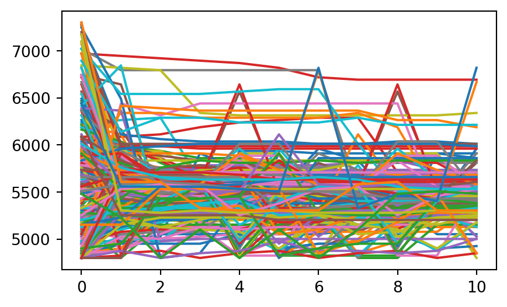
new_df = pl.concat([
vm.winner.to_df()
for vm in v_meases
])plt.scatter(
-new_df["F2_s"],
-new_df["F1_s"],
s = 1
)
plt.title("F1xF2 space")
plt.show()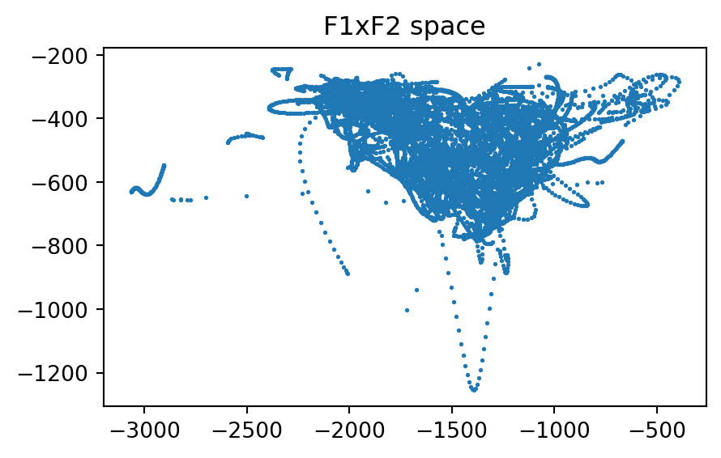
new_outliers = (
new_df
.filter(
(
(pl.col("label").str.contains("1"))
&
(
(pl.col("F1_s") > 900 ) |
(pl.col("F2_s") > 2500)
)
)
)
.group_by(["id", "label"])
.count()
)
new_outliers/tmp/ipykernel_2086/1290466927.py:14: DeprecationWarning: `count` is deprecated. It has been renamed to `len`.
.count()
shape: (1, 3)
| id | label | count |
|---|---|---|
| str | str | u32 |
| "0-0-73-1" | "OW1" | 10 |
Code
new_outlier_tracks = [
vm
for vm in v_meases
if vm.winner.id in new_outliers["id"]
]
for track in new_outlier_tracks:
track.winner.spectrogram(figsize = (3,2))
plt.title(track.label +" " +track.winner.id)
plt.show()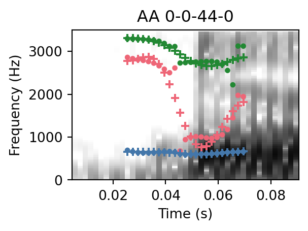
These remaining outliers look like just fundamentally hard cases.
plt.scatter(
-new_df["F2_s"],
-new_df["F1_s"],
color = "grey"
)
for track in v_classes["AY"].tracks:
df = track.winner.to_df()
plt.plot(
-df["F2_s"],
-df["F1_s"]
)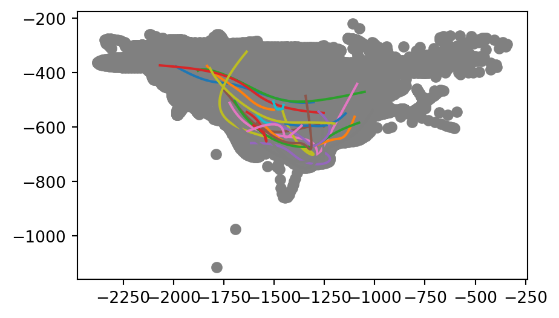